EN-GB PARAMETRIX 4.13

Parametrix software guide
A publication by Donatoni Macchine S.r.l.
Software Version: 4.13
Manual Version: 1.0
Date: 01/23/2026
- 1 PREMISSES
- 2 PROGRAMS ON-MACHINE
- 3 PARAMETRIX
- 3.1 USER PARAMETERS
- 3.2 NEW WORKING
- 3.3 TOOL PANEL
- 3.4 MACHINING PARAMETERS OF THE SLAB
- 3.5 ACCESS TO MANUAL COMMAND
- 3.6 LASER MANAGEMENT
- 3.7 ADD PHOTO TO WORK AREA
- 3.8 SLAB PERIMETER
- 3.9 MANAGEMENT OF THE BENCH VIEWING
- 3.10 VIEWING OF WORKING ENTITIES
- 3.11 CREATION OF THE PIECES
- 3.12 PIECES LIST
- 3.13 MODIFY PIECE
- 3.14 NESTING
- 3.15 INTERACTION WITH PIECES ON THE WORKING AREA
- 3.16 SAVE WORKING
- 3.17 LOAD WORK
- 3.18 INFORMATION
- 3.19 MACHINE ON CUT
- 3.20 PIECE CUT ORDER MANAGEMENT
- 3.21 OPTIMIZATION AND MANAGEMENT OF THE CUTS
- 3.22 BOOK MATCH (OPTIONAL)
- 3.23 UNLOAD PIECE (OPTIONAL)
- 3.24 TOOL REDRESSING CYCLE (OPTIONAL)
- 3.25 LABELING (OPTIONAL)
- 4 PARAMETRIX SX
1 PREMISSES
Generalities
The information contained in this document is applicable only to the software versions listed on the title page.
It is possible that not all functions explainable by the product are described in this documentation; in these cases Donatoni machines is not obligated to guarantee these functions nor to preserve them in future versions.
The present document is supplied as attachment 'Section B', software part, of the machine use and maintenance manual.
Purpose of the manual
This manual reports the use instructions necessary for the good knowledge of the Parametrix program and useful information to find solutions to malfunctions.
From the observance of what is described in this manual depends the regular operation, the duration and the economy of operation of the machine itself.
The machine usage and maintenance manual and this software manual must always be available at the plant installation location, in a safe and easily accessible place. If one of them is lost, contact the prevention and protection service manager.
Failure to observe what is described in this manual, negligence, a bad and inadequate use of the machine, can be cause of cancellation, by the Manufacturing Company, of the warranty that it gives to the machine itself, and moreover it is possible not to obtain the advantages for which this machine has been built.
DONATONI MACCHINE SRL, is still available to ensure prompt and accurate technical assistance and everything that can be useful for the best functioning and obtain the maximum of the yield from the machine.
The Manufacturer reserves the right to modify, at its discretion, this publication and the data contained therein if deemed necessary for a technical or commercial improvement of the product.
Preservation of the manual
The present Software Manual must be kept for the entire life operating of the machine, even in case of cession to third.
In order to correctly save the Software Manual it is recommended:
Employ the Manual in such a way as not to damage all, or in part, the content; in particular it is recommended not to leave the Manual during use and to place it in the assigned location immediately after the end of the consultation;
Do not remove, tear off or rewrite for any reason the parts of the Manual;
Keep the Manual in zones protected from humidity, heat and other environmental agents that could compromise its integrity or duration;
In case of loss or damage of all or part of the contents of the present Manual, require copy of such documentation to the Builder.
2 PROGRAMS ON-MACHINE
At the application start, if the axes zeroing has already been executed, the following initial screen will be visible:

Top bar

 | Parameters |
 | Parameters tool |
 | Automatic rotation 0/90 degrees |
 | Automatic Parking  |
 | Zero
|
 | Turning on / Turning off internal water |
 | Turning on / Turning off external water |
 | Change Tool Manual |
 | Maintenances |
 | Help |
Interface elements common
The graphical interface elements in common for the functionalities are:
Axes
In this interface are reported the values of the machine axes.
Example of interface item 'Axes' with origin 0 and axes zeroing already executed:

Example of interface element 'Axes' with origin 0 and axis zeroing still to be performed:

Below is found the explanation of the elements that compose this section of the common interface, the elements are taken as reference in the case axes already zeroed.
 | Real quote: indicates the position of the axis with respect to the active origin. |
 | Reset Axis |
 | Automatic rotation _90 degree Automatic rotation -90 degree |
Controls
In this panel are proposed some buttons whose behavior is explained below:

 | Interpolation mode Axis C movement interpolated: by running the command of axis C, in addition to the rotation, the axes X and Y will also be moved, so that the inner edge of the blade (or the tip of the tool) remains still. |
 | RTCP interpolation |
 | MDI |
Tool
In this element of the interface are shown the main informations regarding the tool mounted on the machine.
Example of tool mounted in machine: Disk

Example of tool mounted in machine: Foretto

 | Tool active The choice is limited between:
|
Origin
Clicking on the 'Origin' field a small numeric keypad will be displayed on screen that will allow the operator to select a different origin to work with.
The origin values can vary from 0 to 19 included.
Example with origin 0:

Example with origin 10:

RTCP - Rotation Tool Center Point
The RTCP function allows the operator to make a positioning for a miter cut maintaining the tool height unchanged, despite the inclination is varied during the positioning. The internal wire of the disk will remain in the same position in which it is at the beginning of the handling.
Operating procedure
Set the objective quota in the area dedicated to the axis 'A' (tilt) or 'C'
Pressing the RTCP button starts the tilt or rotation function keeping the lowest point of the tool fixed.
NOTEThe handling by RTCP command is allowed only when the encoded key is inserted in the adequate workstation, identifiable on the operator console.
Wait for the machine to position at the set quote.
Motor
In this section are reported some statistics regarding the motor of the machine:

 | Revolutions per minute (RPM) |
 | Intake (A) |
 | Ampere threshold |
Feed
The value Feed represents the interpolated move of the machine.

Right side bar
At the start of the application the preset functionality is MANUAL.
This sidebar contains the following controls and programs/functions available:

Lower bar
The lower bar displays information and error messages and some buttons for certain functionalities.
The following three examples of lower bar are proposed.
Without active alarms.

With a general emergency enabled, reported with an icon, an error code (in this case PE0000), the relative description and the alarms button on the right flashing.

With a message reported, in the example JOG direct active.

 | Alarms |
 | Software minimization |
 | Machine shutdown |
Alarms
The alarms page indicates the active Alarms/Messages of the system.
If the machine doesn’t have active alarms the page is empty, otherwise there will be a line for each error present.
In the following example page relating to management and viewing of alarms, an active alarm is visible in the system.

Alarm buttons
 | Updates |
 | Historical alarms |
 | Messages / Alarms |
 | Alarm groups |
Viewing of alarms - Standard
The standard viewing of one of the displayed alarms is composed of:

 | Online link |
 | Alarm code |
 | Description |
Viewing of alarms - Historical
The daily history of alarms includes, in addition to the elements already described, also the following data:

 | Moment of state change |
State alarm |
Viewing of alarms - Groups
The grouping system displays a single entry for each alarm, avoiding duplications.

Occurrences Number | |
 | Moment before activation |
 | Moment of last activation |
2.1 MANUAL (VACUUM)
Is possible use vacuum in manual to move pieces from a work zone to another.
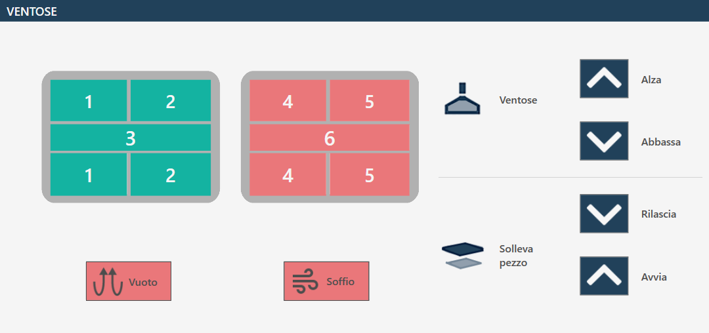
Suction cups buttons
/Test_-_png_-_20.png) | Enable / disable suction cups |
SUCTION CUPS: LIFT - Suction cups parking | |
/2.3.png) | SUCTION CUPS: LOWER - Prepare suction cups |
/4.3.png) | LIFT PIECE: RELEASE - Unload piece |
/3.3.png) | LIFT PIECE: START - Piece lifting |
/5.2_off.png) /5.2_on.png) | BLOW - Command Blow |
/6.2_off.png) /6.2_on.png) | VACUUM - Command vacuum pump |
Safety conditions
Pay particular attention to the suction cups active during the lifting, ensuring that the areas used are sufficient to lift the piece that is the object of handling. Try to always use the largest area of vacuum available to perform the piece grip and check that there are no defects and breaks on the material that may create dangers or problems to the functioning of the machine.
Once vacuum pump is on, its shutoff is allowed only through the automatic functions prepared for this purpose. Pressing the reset button or the emergency button has no effect on the vacuum pump which will continue to function. The pump can be forced off by using the specific button inside the 'Additional Commands' page.
In automatic procedures, before the piece lifting, the vacuum state is checked through a specific sensor: if a sufficient vacuum value is not detected, the 'lack of vacuum' alarm appears. The pump will continue to remain active until the vacuum sensor detects a correct value, or if it will be disabled from the 'Additional Commands' page.
WARNING!The lack of feeding to the vacuum pump means a fast loss of the same and the consequent fall of the material lifted with the suction cups.
2.2 SINGLE
In the new versions of Parametrix it is possible to use the 'Single cut' functionality. Selecting from the list the 'Single Cut' voice, we will find ourselves in front of a page similar to this.
With Single cut it is possible to perform a straight cut (or also inclined) on the slab starting from the position where the machine is located and ending at the length requested by the user. With the cut it is not possible to perform cutting of arcs or of Circles.

Buttons
 | Parallel cuts buttons |
 | Max |
 | Stop |
 | Change Steps Mode |
 | Save |
 | Open |
Parameters
Based on the type of material that you want to work, it is possible to set the parameters differently and save them in case of subsequent similar workings.
Parameters in common
 | Length of single cut |
 | Measure displacement |
Processing configuration parameters at passes
 | Penetration in the material proceeding forward |
 | Penetration in the material proceeding backward |
 | Penetration in the material for the last pass |
 | Processing speed proceeding forward |
 | Processing speed proceeding backward |
 | Way in speed into the material |
 | Speed of working of the last pass |
Parameters configuration full pass processing
 | Speed of way in |
 | Processing speed proceeding forward |
Execution work
To begin working, place first the machine in the desired starting point. Once correctly placed, it is necessary to insert the value of the cut length in the appropriate field.
At this point, you can proceed with turning on the disk using the controls on the monitor's keypad. When everything is ready, start the process by pressing the 'Start cycle' button.
The working will start in the direction in which the machine is located at the time of the cut activation, therefore it is important to check its orientation before starting the cycle.
2.3 ISO PROGRAM
The ISO file programming page allows to manage and start the workings through .pgm files created previously through CAD-CAM programs.

List
The ISO program list, initially empty, contains all the ISO programs that can be executed sequentially.

Buttons
There are a series of buttons for the list management.
 | Open File |
 | New ISO list |
 | Add Pause |
 | Remove selected element |
 | Empty list |
 | Move selected element higher |
 | Move selected element lower |
In the lower part we find also the two buttons relative to the execution modes of the programs:
  | Manual / automatic |
  | Single / Next Automatic |
Open file
The pressure of this button will make appear a window 'Open File' as shown in the following image:

This window is divided in the following components:
List Files
include all files in format .pgm present in the directory currently selected
Buttons between the Files list and the Selected Files list
Selected File List
List initially empty
Preview Selected file
Shows a preview of a .pgm file selected from Files or from Selected File
Bottom bar and search filter
Central buttons, placed between the 'FILES' list and the 'SELECTED FILES' list
 | Select element |
 | Remove element |
| Insert Pause |
 | Move selected element top |
 | Move selected element low |
The content of the lower bar is reported here.
 | Clean search filter |
 | Sorting by last modify |
 | Alphabetical Sort |
 | Viewing key file |
 | View ISO folder |
 | Viewing contents |
 | Remove file |
 | Enable/Disable copy |
ISO Program Code
The program ISO code running is displayed in this window:

Buttons
In this section of the ISO program we have the following buttons and relative functionalities.
 | Timer and Reset |
 | View ISO |
 | Block search |
 | Block search for line Subsequently to the insertion of a number in the 'Row number' field and pressing the 'Go to' button, the ISO program code view will be moved to the desired line, or to the last available line if the composed number exceeds the number of lines present in the selected ISO program. It is possible to conclude the search of a block, and restore the visibility of the 'Block search' button, via the Pressure of the Close button: |
 | Dry Run function (Activated / deactivated) |
 | ISO test function (Activated / deactivated) |
 | Suction cups panel |
 | Save |
Block search
During the execution of (.pgm) files, the block search function could be useful to reposition the tool to the point where the machine has interrupted the program execution, in case of tool blockage inside the material or other types of blockage.
Once the button has been pressed, you can search for the line from which to continue/start the working, via the line number by pressing the 'Search block by line' button or by scrolling the file via the scroll bar placed next to the file and selecting the desired line.
After having selected the point of the program from which the machine will continue the interrupted work, press the 'Start cycle' button; the machine will recalculate all the lines of code in the .pgm file without executing any movement. The speed of this operation depends on the number of lines of code that must be generated without executing any movement.
After the recalculation, the machine activates an automatic pause, requiring a further press of the ‘Start cycle’ button to start the processing.
It is recommended before starting the cycle to consider the initial positioning of the machine involving all axes simultaneously.
This is necessary because the machine moves from the current position to the point where it starts working, seeking the shortest route, and to do that, all axes move to arrive exactly at that point.
This means that, for example, the Z axis doesn't lower once reached the starting point, but lowers gradually during the path. This could damage the machine or the material if the latter should collide with material in the middle of the path.
So it is possible, on basis of the situation in which oneself finds, to deselect the movement of one or more axes, so as to not cause damages.
To do it is enough to select the buttons present above each axis that from green will become red.
The buttons will turn green automatically once pressed on 'Start Cycle'.
View ISO
If the ISO preview has been enabled, it will be displayed to the right of the 'ISO Program Code' frame, another frame similar to the one shown below:

The ISO preview makes available the following buttons:
 | Perspective view |
 | Orthogonal viewing to XY plane |
 | Orthogonal view to ZX plane |
 | Visual perspective orthogonal to the ZY plane |
 | Activate or deactivate the preview display  |
Execution of working
The operator has the possibility to create a list of PGM files by opening the desired files through the dedicated upload function.
Before to start execution, is possible — optionally — to modify order of files in list and to insert any pause between an execution and the other. These pauses allow to manage more flexible process and, if necessary, to interrupt it in safety.
By setting the execution mode to 'Automatic', the 'ISO Test' function is also available, useful to verify the correctness of the selected ISO program before the actual execution.
To start the execution cycle, the operator must press the 'Start Cycle' button. In this way, the first ISO program loaded and displayed in the list will be executed.
The ISO programs can be executed according two operative modes:
The 'Single' mode allows to interrupt the program execution at the end of each ISO file execution. It is necessary to press again the ‘Start Cycle’ button to proceed with the execution of the next file in the list.
The 'Next Automatic' mode allows the execution of ISO files in sequence, without need of manual intervention, until the end of the list.
In both modes, any pause inserted between files allows the operator to interrupt the cycle at any time, guaranteeing thus a continuous control on the execution.
2.4 LEVELING
The leveling cycle gives the possibility to perform a leveling of the bench or the material. This program is useful when the bench is made uneven by the cuts, or you want to equalize the thickness of the material.
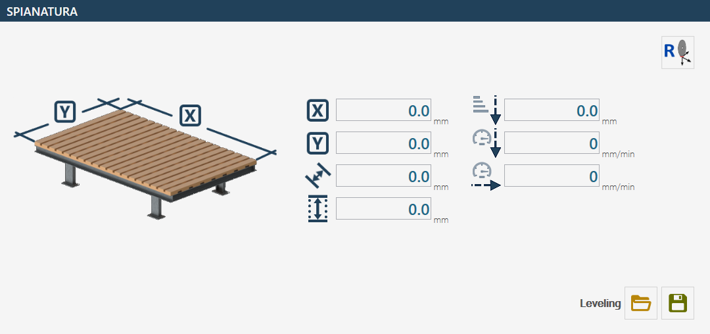
Leveling parameters
 | Quote of the movement in relation to the X axis |
Quote of the movement with respect to the Y axis | |
Measure displacement | |
 | Depth |
 | Z Step |
 | Cutting speed in plunge |
 | Speed of cutting forward |
Modify tool origin |
Execution of working
The program 'SPIANATURA' does not need zeroing origin X, Y and Z.
To determine the starting position, the position of the tool is considered at the moment when the cycle will be started.
After setting the various parameters, move with the disk turned on to the maximum desired depth of the bench or material and start the cycle with the START CYCLE button.
NOTEThe program can be used with the A axis inclination to ZERO degrees or to NINETY degrees to use tools like disks or milling cutters.
2.5 EXCAVATION
The excavation page allows to perform a rectangular excavation with fillets and flat bottom.
For this working it is necessary to use a suitable milling cutter, to mount on the main spindle.
As level for the bottom is considered the 'bench level'.
The cycle involves step mode with helical entry at center and working distance settable from parameters.

Parameters
 | X |
 | Y |
 | Radius R |
 | Depth of the pocket |
 | Z Step |
 | Working distance |
 | Depth increase in way in  |
 | Working Speed |
 | Drop speed |
 | Zero setting Axes X and Y  The position is taken by positioning the milling center in the indicated point. |
Execution working
Insert the X, Y, and R measures that characterize the shape of the rectangular cavity that you want to obtain.
Check the correctness of the data relating to the tool, in particular the diameter.
The following two execution modes are available
Mode to reach excavation until bench quote
To execute correctly a digging, is necessary position the center of the machine in the point of origin of the digging, as showed in the figure present in the previous chapter. This assures that the entire process develops correctly with respect to the designated area.
Subsequently, you proceed with setting the characteristic measures of the shape of the excavation to be made.
Before starting the processing, it is fundamental to verify the exactness of the selected tool data, with particular attention to the diameter, as it directly influences the precision and the quality of the excavation.
The acquisition of 'bench quote' must be performed referring to the level of the bottom of the excavation. To determine it correctly, position yourself on the upper edge of the material and zero the Z quote. From there, perform a downward movement equal to the desired depth of the excavation. At this point, you can acquire the bench quote via the appropriate button. In the presence of milling type tools, it is recommended to perform this operation with axis A positioned at 90_, so as to avoid inaccuracies due to the actual length of the tool.
Once the bench quote is defined, proceed with zeroing the X and Y axes. This is done by pressing the relative reset button, positioning the center of the cutter exactly at the point indicated in the figure using the reference symbol. In machines equipped with a laser pointer, it is possible to acquire the zero point in X and Y using directly the reference provided by the laser.
The depth of the excavation depends directly on the level set as bench quote and the position of the Z axis at the time of cycle start, through the 'Start cycle' button. Working happens through a spiral entrance to the center, up to the depth specified in the 'Z Step' parameter. Subsequently, the area is emptied with a concentric movement, following the distance set in the working parameters.
The machine’s displacements needed to reach the initial position occur at the so-called 'clearance height', which can be defined in the tool parameters. This ensures that the tool does not interfere with any obstacles during the positioning movements.
Positioning mode above the piece and origin value reset
This mode involves the setting and subsequent use of the parameter: 'Depth of the digging'
2.6 CUTS
With this functionality it is possible to add the multiple cut.
This particular type of cuts allows to create a series of parallel cuts among themselves in the same group, with the possibility to have two groups each with its direction set.
The interface appears similar to the following:

Side bar
Selection and management of cut groups
 | Create first group of cuts |
| Create second group of cuts |
 | Cut Management |
Cutting parameters
For each of the two groups of cuts available to the operator it is possible to insert up to 100 simultaneous cut configurations, with their respective parameters.
 | Orthogonal directions |
Width | The distance between a cut and another. |
Numbers | The quantity of parallel cuts to create. |
 | Location cuts |
 | Show next/previous cuts |
Stretching cuts
The operator has the possibility to extend all cuts present in the first and second group at the beginning or at the end of the set measure.
 | Start |
 | End |
Delete and updates cuts
 | Delete cuts |
 | Updates cuts |
Axis C
It is possible to rotate the head of the machine in order to adjust the orientation of the cuts of both the first and second group.
 | Rotate _90 |
 | Rotate -90 |
 | Machine head rotation |
 | MDI |
Thickness
The operator can go to define thickness of the slab that will be cut.
 | Manual thickness |
 | Thickness with machine |
Execution of working
The operator has the possibility to set both groups of cuts modifying their relative parameters.
Once the desired result is obtained, the 'Start cycle' button can be pressed to execute the working.
First group cut
In the first group of cuts will be defined one or more groups of cuts modifying the parameters Width, Number and Position Cuts, also the rotation of the C axis.
In the following working there have been set parallel cut with respect to the current position of the machine.

Second group cuts
Similarly to the first group of cuts, also for the second it is possible to change the parameters to obtain the researched result.
In this working the direction of the cuts was modified, executing some cuts orthogonal to those of the first group.

Optimization and cut management
In this section we can go to modify the execution order of the cuts with the possibility of choosing whether or not to execute a cut.

2.7 ISOCAM
IsoCam is the software for the execution of profiles with the disk; it allows to draw or import profiles, decide the profile and apply different working methods.
The management of working programming is divided in different phases that will be described in the following paragraphs.
Upon the Isocam program opening, if no processing previously created is present, the operator will be able to create a new one, from the first step of processing.
In the case instead in which there is a processing previously created, this will be automatically loaded and the operator will have access directly to the last step of the processing:

Elements in common between the various steps
The user interface is composed by different areas.
Menu: rapid utility.
Top bar: functions specific to the active page.
Central part: contains the drawing or the active area based on the page.
Side bar: window containing the parameters to modify.
Lower bar: buttons generally valid in different areas of the software.
The following elements will remain always visible, regardless from the current phase of the process.
Menù
The menu bar is located on top, above every other element of this interface.
Visible | Some settings regarding the visibility of the pieces present in the work area are made available to the operator. |
Options | It is possible to modify settings relative to colors. |
Language | ISOCAM is currently available in the following languages:
|
Right side bar
 | Settings |
 | Info |
 | Step Management |
 | Close |
Settings
This panel allows to switch to the Advanced mode of IsoCam, to return to the base version, and to modify the values of Grid Step in X and Y.

Lower bar
 | New working |
 | Open files |
 | Save working |
 | Modify working |
Drawing of the section (step 1 of 4)
The first phase of programming consists in the drawing of the section to be worked. The window proposes the characteristics commands of a CAD software: draw line, draw arch, snap, move, etc…
The basis of the software is the creation of the section as a quick sketch that will then be modified, entity by entity, with the appropriate commands. There remains always the possibility to import .dxf drawings generated by external CAD.

Top bar

 | Command drawing Line |
 | Command arc drawing |
 | Move the selected lines |
 | Mirror Figure |
 | Fillet |
 | Inversion of active selection |
 | Delete selected traits |
Right side bar
Line property
Selecting a line in the working area, the right-side column is updated to show the features of the selected entity, which can be modified by the user.
Length | Indicates the linear distance between the two ends of the selected line, calculated based on the coordinates in the working space. |
Angle | Indicates the orientation of the line with respect to the horizontal axis of the reference system. |
Δx | Indicates the variation of the X coordinate between the initial and final point of a line or entity, that is the horizontal distance traveled with respect to the X axis of the reference system. |
Δy | Indicate the variation of the Y coordinate between the initial and final point of a line or entity, that is, the vertical distance traveled with respect to the Y axis of the reference system. |
 | Extend/Shorten selected line |
 | Approximate Angle |
Scale connected traces | Allows to apply a proportional scale to all entities directly or indirectly connected to the selected line. |
Arc property
By selecting an arc in the work area, the right-hand side column is updated to show the characteristics of the selected entity, which can be modified by the user.
The arc can be defined in different ways: by points, as center, radius and arc, etc…
The various characteristics are showed in the window that appears on the right.
The variation of some characteristics can be satisfied in different ways, for example changing the radius or the initial/final point; to discriminate the way of modification there is the 'Fixed center' flag.
Radius | Indicates the constant distance between the center of a circular curve or arc and any point along its circumference. |
Initial/Final angle | Angle of the initial or final point with respect to the center. |
Tangent Previous / Next | Modify the initial or final angle so that the arc results tangent to the previous or subsequent entity. |
Fixed Center | Allows to decide the consequences of a change (radius or angle). |
Move / Move selection
Upon enabling the 'move' command, the window with the handling parameters appears. handling can be done directly by clicking on the drawing area (even with the snap enabled) or by setting the parameters.
The confirmation of the movement must be given with the 'OK' button.
 | Position selector |
 | Translation |
Move copy | If enabled, the function creates a copy of the selected entity and applies the displacement only to this copy, leaving the original entity unchanged. |
Mirror
After enabling the command it is necessary to set the center of symmetry by clicking on the work area or setting the quotes, select the direction of the mirror and press the 'OK' button to confirm.
Center of symmetry | Allows to change the coordinates of the symmetry center used for the horizontal or vertical flipping of the selected entity. |
Coordinates to invert | Indicate if to execute the overturning in horizontal, in vertical or in both directions. |
Mirror copy | If activated, the mirroring operation is performed by creating a mirrored copy of the selected entity, keeping the original intact. |
Fillet
A first message, displayed in the right column, allows the operator to set the radius of the corner and confirm the selection.

A second message informs the operator that is now possible insert fillets between two lines, operation available until the deactivation of the functionality.

Below the example of applying radii on two adjacent lines and a line adjacent to an arc:

After the fittings application:

Lower bar
 | Import File DXF |
 | Export dxf file |
 | Cancel modify |
 | Snap start/end |
 | Command Orto |
 | Command Connected Lines |
 | Drawing grid |
 | Undo Zoom |
 | Select selection for Zoom |
 | Restore Zoom |
Selection profile (step 2 of 4)
The previously drawn section must be applied to a suitable profile.
The profile can be linear or arc, in the X/Y plane or even vertical; based on the selection some working modes will be enabled or disabled. So, for example, an arc profile in the XY plane can be worked only with vertical disk and viceversa for an arc profile in the XZ or YZ plane.
The profile type is chosen with the buttons on the left, at the top center are showed the parameters to describe geometrically the profile and in the central lower part is showed the preview of the result.

Center part
Linear profile | You set the direction and the length. |
Arc profile | You define: direction, work area, concavity and the geometric characteristics. |
Profile circle | It will worked only externally with horizontal disk. |
Linear profile parameters

Profile Execution | There are two modes: 'Along X' and 'Along Y'. |
Line length (L) | Horizontal length of the base of the inclined segment, measured between the starting point and the horizontally projected endpoint. |
Delta Z final point (H) | Height of the inclined tract, that is the difference of quota between the beginning and the end of the segment. |
Arc profile parameters

Profile execution | Choice between 'Long X' or 'Long Y'. |
Processing orientation | Choice between 'Plane XZ' or 'Plane XY'. |
Type of processing | Choice between 'Concave' or 'Convex'. |
Length (L) | Horizontal distance between the two ends of the arc, that is the chord connecting the beginning and the end of the arc. |
Starting radius (R) | Distance from the center of the arc to the point of the arc itself. Determines the overall curvature of the arc. |
Development in vertical (H) | Height maximum of the arc with respect to the chord L; represents the vertical distance between the highest point of the arc and the chord. |
Angle width (A) | Angle at the center subtended by the arc, expressed in degrees. |
NOTEThe modification of one of the following values: 'Length', 'Starting Radius', 'Vertical Development' or 'Angle Width', implies the automatic recalculation of the remaining parameters.
Profile parameters Circle

Starting radius (R) | Determine the radius from the starting point. |
Custodia | This flag indicates if during the working phase the C axis rotates (custody active) or remains still with C=0_ (custody not present). |
Bottom bar
 | Visible table |
 | Additional Lights |
 | Pieces views manage |
Working parameters (step 3 of 4)
The page is divided into boxes with different types of data to set for processing

Tool parameters
The operator can define the parameters of the tool:

If it is a new project the data is loaded automatically based on the tool physically installed; if instead it is a working previously saved, the tool data will be those already saved in the previous program.
 | Tool name |
 | Thickness |
 | Diameter |
 | CRF (Center Rotation Flange) |
 | Safety Quote |
 | RPM (Revolutions Per Minute) |
Working orientation

Linear profile
For linear profiles there is possibility to choose if execute the working with disk in vertical or with disk in horizontal (from front or from left).
Vertical Orientation | Horizontal |
 |  |
Arc Profile
For curvilinear profiles the orientation is bounded by the profile type:
Working type | Vertical Orientation | Horizontal Orientation |
Concava |  |  |
Convex |  |  |
Type of working

The processing can be carried out in two modes:
 | Rows mode for cuts |
 | Spaclo mode |
Configuration For cuts
Parallel cuts will be executed among themselves that follow the selected profile at a distance between the cuts taken from parameter.

Step | Indicate the distance between the position of a cut and the adjacent one. If higher than the disk thickness, material will remain between the passes. |
Extension start / end | Allows to extend a cut in the initial / final part of the set value. |
More Auto | Enabling the flag involves an automatic increase of the extension value, based on a value established by the system. |
Offset work | Thickness of the material to leave above the desired final section. |
Cut direction | The direction of the cut can happen from right to left or from left to right, depending on the selected configuration. |
Spatula Configuration
The movement will be transverse to the direction of the profile, it is used for a surface finish of the piece.

Spreading step | Indicates the distance a transversal movement and the next along the direction of the profile. |
|---|
Speed and cutting mode
Based on the previous selections, different menus appear for the selection of the parameters necessary to define the working.

If the selected working type is the Configuration for Cuts, two types of working parameters will be available.
 | Marble Mode |
 | Granite mode |
Marble mode
General parameters:
Cuts in two senses (finishing) | This flag allows setting a return speed different from the go speed. |
Do not raise ever (finish) |
Speed Parameters:
Gone | The execution speed of the way of the step. |
Return | The execution speed of the return step. |
Penetration | The execution speed of penetration of the pass. |
Minimum | Setting a value different from zero the cutting speed will depend on the depth of the cut itself, then you will have a movement at a going speed for cuts at zero depth and at minimum speed when the cut is at maximum depth for the selected section. |
Granite mode

General parameters:
Removal in cut | Quantity of material that is removed in the going pass. |
Removal in return | Quantity of material that is removed in the return pass. |
If the selected working type is the Spatula Configuration, one working parameter will be avaiable.
Speed - Processing | Set the speed at which the spatulated working type will be performed. |
|---|
Machining parameters (advanced)
 | Processing parameters (advanced) |
In this screen it is possible to verify and modify different parameters, many of which have been set in steps 2 and 3.

The first operation consists in the selection of the type of profile to use.
 | Linear |
 | Arcated |
And subsequently the following parameters:
Working | It can be for cuts or spatulated. |
Processing orientation | The working can be executed in verticalor in horizontal. |
Execution profile along | Along X or Y. |
Processing data
For the Linear profile is possible to set the following parameters:
Thickness of the material | Defines the measurement of the material (in mm) thickness. |
Inclination of the profile (mm) | It allows to define the profile inclination indicating the difference in height between the final point and the initial point. |
For the Arched profile are available the parameters adjustable in the previous steps.
Both profiles also have the following working data in common:
Step | Fixed in Y: maintains the fixed distance between cuts regardless of the section below |
Cut direction | Choice between 'Y_' or 'Y-'. |
Complete profile processing | Allows to choose whether or not to complete the profile working. |
Force cuts on corners | Add cuts at slope variation points. |
Remove overlaps | If this flag is enabled and the 'Step' value is greater than the 'Thickness', the overlapping cuts will be removed. |
Optimized step (dyeing) % Over. | If the 'Step' value is lower than the 'Thickness' value, the step will be optimized on the horizontal lines. |
Perform cut at start | Allows to choose whether to perform or not a cut at the beginning of the profile. Through the box beside it is possible to set the depth of this cut. |
Execute cut at the end | Allows to choose if execute or not a cut at the end of the profile. Through the box next is possible to set the depth of this cut. |
Tool Data
Here are reported some data previously set and other parameters specific for the tool.

Tool description | A quick description of the tool |
 | Tool warehouse |
N_ Position | Indicate the number of the position inside the tool magazine of the selected tool. |
N_ Corrector | Indicate the number that identifies the name of the selected tool. |
Core thickness disk (CT) | Thickness of the disk’s central support body. |
Shape tooth | The operator will be able to choose one between three forms of the tooth:
|
 | Choice material
|
Priority | It is possible to establish a priority value (strictly positive). |
Depth | Indicates the depth of the tool cut. |
Processing (step 4 of 4)
Based on the previous selections, a preview of the calculated cuts is shown. The page is divided into different areas with the commands to manage the changes.

Once the cuts have been checked or the desired changes made, press the 'NEXT' button to open the page to generate the cutting program.
Menu
In the fourth step a further entry is made visible in the upper menu:
Cuts | This menu offers some quick settings for the cuts generated. |
|---|
Top bar
 | Generation cuts |
 | Modify the position of the cut |
 | Add a cut of head for separation of pieces |
 | Add a tail cut for piece separation. |
 | Add a cut in the position of the mouse (Ins) |
 | Delete the selected cut |
 | Delete the cuts prior the selected cut |
 | Delete the cuts after the selected cut |
 | Simulation cuts |
Center part
Right lateral bar
In the fourth step this bar contains the following information:
 | Progressive cut |
 | General Information |
 | Cut Data |
Lower bar
 | Options on cut |
  | Move/extend cuts |
 | Shift |
Create program
Upon completion of the preparation in the fourth step, it is possible to access the final phase, which includes viewing the obtained result and the generation of the ISO file.
In the central part is shown the 3D of the generated working considering the working method. By clicking in the area it is possible to rotate the view and manage the zoom.

Basic procedure
Step 1
To begin, press the button 'New working'. Make sure the 'Connected edges' function is active, then activate the 'line' command. Proceed with a series of clicks on the working area to draw the desired section. Once the drawing is complete, click the 'line' command again to deactivate it. At this point, select each entity individually to verify and, if necessary, modify its parameters.
Step 2
In this step the operator can set some basic generalities linked to the searched working type.
Step 3
At this point it is possible to set parameters relative to the tool, to the working type, orientation and parameters of the working selected.
In the panel 'Working parameters (advanced)' moreover it is possible to have an overview of all parameters set up until this moment.
Step 4
A list of cuts is automatically generated for the current working. It is possible to insert, modify and remove cuts in relation to operating needs.
ISO Generation
The final step of the working allows the operator to create an ISO file from the obtained working or to restart the procedure.
2.8 POLISH (OPTIONAL)
The Polishing program allows to insert the polishing with different working types. It is possible, moreover, to choose the geometry acquisition method of the slab: through the detection of the points that determine the vertices of the surface (from three up to a maximum of six) or using a regular surface (rectangle) through the entry of the zero quota and the value of the two sides.
/1.1-20250731-080428.png)
Processing mode
To use this working, it is necessary to choose one of the two available modes, selecting the corresponding button:
NOTEThe modes 'Rectangle Selection' and 'Free point selection' are mutually exclusive: the activation of one automatically excludes the other.
/1.1-20250303-082732.png) | Switch to free point selection mode |
/1.2-20250303-082732.png) | Switch to rectangular selection mode |
Way in/Way out
The buttons in figure allow to change the entrance and the exit of the tool between progressive and standard mode.
NOTEThe modes 'Progressiva' and 'Standard' are mutually exclusive: enabling one automatically excludes the other.
/2.1_b-20250731-113844.png) | Pass to progressive mode |
|---|---|
/2.2_b-20250731-113804.png) | Switch to standard mode |
Free points selection mode
This mode is displayed as follows:
/c-20250731-120333.png)
Parameters
Points location
/3.1.1.1-20250731-111822.png) /3.1.1.2-20250731-111843.png) | Set (Imposta) |
/3.1.1.3_b-20250731-112553.png) | Clean |
Working types
/3.1.2.1_b-20250731-114156.png) | Perimeter |
/3.1.2.2_b-20250731-114218.png) | Horizontal passes |
/3.1.2.3_b-20250731-114252.png) | Vertical Steps |
/3.1.2.5_b-20250731-114340.png) | Global Repetition |
Machining parameters
Steps | Each working type can be repeated a number of times set in this dedicated field. |
Made | The number of steps performed is displayed. |
Step [mm] | Indicates the distance between one pass and the next, selectable for each working type. |
Parameters tool for polishing
/3.2.1_b-20250731-114407.png) | Work speed |
/3.2.2_b-20250731-114433.png) | Drop speed |
/3.2.3_b-20250731-114455.png) | Tool wear |
Execution mode Free point selection
WARNING!Between a working and the next one the machine executes the movements without rising to the safety height.
The operator sets the position of a minimum of three up to a maximum of six available points, moving the machine manually and using the relative saving commands. Completed the definition of the points, you proceed with the configuration of the machining parameters for each desired polishing type. Contemporarily, also the specific parameters of the tool to be used for polishing are set.
At any time before the start of the polishing cycle, the operator has the possibility to change the tool entry and exit mode by selecting one of the two available options.
Once configuration is complete, it is necessary to tilt the A axis of the machine to 90_ and start the rotation of the disk. The operator can then proceed with the execution of the programmed cycles by pressing the 'Start cycle' button. During execution, the progress status can be monitored through the 'Completed' column, which reports the completed cycles for each selected polishing type.
Rectangular selection mode
This mode is shown as follows:
/d-20250731-120352.png)
Parameters
Rectangle position
/4.1.1.2-20250731-115103.png) | Sides of rectangle |
|---|
Machining parameters
It is postponed to processing parameters Free point selection for the workings: Contour, Horizontal/vertical passes and Global repetition.
/3.1.2.4_b-20250731-114318.png) | A zig zag |
Parameters of the tool for polishing
It is referred to Disk Parameters Free point selection for the disk parameters: Working speed, Descent speed and Disk wear.
/3.2.4_b-20250731-114520.png) | Y axis step for ZigZag |
Execution mode Selection rectangular
WARNING!Between a working and the next one the machine executes the movements without rising to the safety height.
The operator defines the position of the rectangle intended for polishing, moving the machine manually and modifying the values of the corresponding coordinates. Once the rectangle definition is complete, proceed with the configuration of the machining parameters for each type of desired polishing. At the same time, the specific parameters of the tool used for polishing are also set.
At any time before the start of the polishing cycle, the operator has the possibility to change the tool entry and exit mode by selecting one of the two available options.
After configuration is complete, it is necessary to tilt the A axis of the machine to 90_ and start the rotation of the disk. The operator can then proceed to execute the programmed cycles by pressing the 'Start cycle' button. During execution, the progress status can be monitored through the 'Completed' column, which reports the completed cycles for each type of polishing selected.
2.9 PROGRAM LIST
The page ISO file programming list allows to execute more programs consecutively, created previously through CAD-CAM programs, for machines with two working areas, Twin machines or programs with more workings created when the machine is already in operation.

Top bar
In the upper bar are reported monitoring information of the progress status of the list

  | Activation/Deactivation ISO Program List |
  | Execution state of the list |
   | List progress bar |
Progress bar of the list
This progress bar provides information on the execution status of the ongoing ISO program, while also offering a general overview on the next program in list and on the one that has already completed the processing phase and has passed to the unloading.

In the previous image, no program is yet visible in the downloading phase, because the execution of the list has not been started and no piece has yet been processed. Conversely, if there is only one ISO file in the list or the processing has been started and all other files have already been executed, the Next section will be empty.
During execution, it will be visible in real time the progress state of the program, as illustrated below.

Side menu
On the right side of the vacuum panel are some buttons related to the management of individual files in the programs list.
 | Run next program |
 | Move selected element higher |
 | Move selected element lower |
 | Delete selected element |
 | Suction cups panel |
Suction cups Panel
Is possible to use the vacuum cups to move pieces from one work zone to the other.

Suction cups buttons
 | Enable / disable suction cups |
 | SUCTION CUPS: UP - Vacuum parking |
 | VENTOSE: LOWER - Prepare suction cups |
 | RAISES PIECE: RELEASE - Download piece |
 | RAISES PIECE: START - Piece lifting |
  | BLOW - Command Blow |
  | Vacuum - Command vacuum pump |
Safety conditions
Pay particular attention to the active suction cups during the lifting, making sure that the areas used are sufficient to lift the piece of movement. Try to always use the largest area of vacuum available to take the piece and check that there are no defects and breaks on the material that can create dangers or problems to the operation of the machine.
Once the vacuum pump is on, its shutdown is allowed only through the automatic functions provided for this purpose. The reset button or emergency mushroom pressure has no effect on the vacuum pump which will continue to function. The pump can be forcibly switched off by the appropriate button within the 'Additional Commands' page.
In automatic procedures, before performing the piece lifting, the vacuum status is checked through a specific sensor: if a sufficient vacuum value is not detected, the ""vacuum failure"" alarm appears. The pump will continue to remain active until the vacuum switch detects a correct value, or if it will be disabled from the ""Additional Commands"" page.
WARNING!The lack of feeding to the vacuum pump involves a fast loss of the same and the consequent fall of the material lifted with the vacuum cups.
Lower bar
In the lower part of the bar are visible some functionalities related to the execution of the ISO program list, as well as the monitoring of both the tool and the slab.

Execution List Management
In the lower part we find also the two buttons relative to the execution modes of the programs:
  | Manual / automatic |
  | Single / Next Automatic |
Slab and tool monitoring
In the center and on the right of the lower bar, the operator can configure periodic monitoring of the tool diameter, setting checks at intervals defined based on the number of cycles performed.

 | Number of Cycles Between Disks' Probes |
|---|---|
 | Number of Cycles To The Next Probe |
 | Tool diameter |
 | Slab thickness |
ISO Program List Execution
If the ISO Program List is disabled, the switch in the upper right corner of the panel will appear off; it will then be possible to enable the functionality simply by clicking this button.
The ISO program list is automatically expanded as ISO are generated in Parametrix, in any case the operator can reposition elements within the list or remove them from it according to their needs.
Before proceed with the execution of the list, the operator has the possibility to set the number of cycles that will be performed among the keyboard operations of the tool.
Then the number of cycles remaining to the next probe will be updated and visible.
The operator starts the execution of the program list by pressing the 'Start cycle' button. In this way, the programs are executed in sequence, with simultaneous viewing of the program in progress, the one that will be executed subsequently and the one already completed.
If the execution mode of the programs is set to Manual and Single, the execution of the list will be interrupted at the end of the running program, right after having prepared the next program to execute.
In such case, the operator has the possibility to press the Next button when he deems it more appropriate and proceed with the execution by pressing again the 'Start Cycle' button.
3 PARAMETRIX
The system has been designed to facilitate the operator in the programming of the automatic cuts. Through the software is possible:
Determine the position of the slab in the machine's work area and create the material perimeter for the processing.
Create pieces through parametric figure
Import figures realized with other CAD
Generate a list of pieces to work
Search the best position of the pieces on the slab
Set special cutting functions
Program the cutting order and create the machine handling
Monitor video the execution of the cuts

Work area and piece list
Below is reported a typical representation of the Parametrix working area with the list of imported pieces already populated and an image of the acquired slab.

List pieces inserted
When a piece is created the program adds it on the piece list; from the list it is possible to insert them on the working area or to make some changes to the piece and to check the number of missing pieces to the process.

Pieces positioning
Parametrix allows to position pieces inside the work area of the machine to create the cut file.
Once acquired the slab, created the perimeter and created the pieces of the working, it is necessary to import the pieces inside the slab, with the button on the pieces table the piece is put inside the working area. Is possible work with 1 or more pieces contemporaneously.
 | In the case in which the pieces are not perfectly inside the slab, a warning/danger signal will appear in the top left corner. |
|---|
Top bar
In the upper part of the screen, in the center and on the left are visible the following buttons, preceded by the logo and the time marked:

The upper bar of commands is integrated with some buttons that will be illustrated later:
 | User parameters |
 | New working |
 | Parameters tool |
 | Slab processing parameters panel |
 | Access to manual command |
 | Laser Management |
 | Add photo to bench |
 | Slab perimeter |
 | Bench viewing management |
 | Viewing of work entities |
Side section
The buttons located in the top right corner allow the operator to change the Parametrix screen.

Each screen is responsible for a particular aspect of the processing of a slab.
 | Placement of pieces
|
 | Piece cutting order management |
 | Optimization and cut management
|
On the bottom right are the following buttons whose functionalities will be seen later.
 | Edit piece |
 | Activate/deactivate standard pieces |
 | Piece creation |
 | Order or filters pieces |
 | Delete list of pieces |
 | Delete piece |
 | Modify additional piece properties |
Lower bar
Upon opening the 'Parametrix' functionality, the bottom bar will undergo some changes as shown below:

This bar is integrated with these buttons:
 | Multiple selection |
 | Select all |
 | Remove piece |
 | Saving |
 | Load |
 | Information Panel |
 | Restore modify |
 | Machine on cut |
 | Piece rotation |
 | Move pieces |
 | Magnetize pieces |
 | Miter cut |
 | Edit standard piece |
3.1 USER PARAMETERS
Once the button is pressed, it is possible to view various windows.
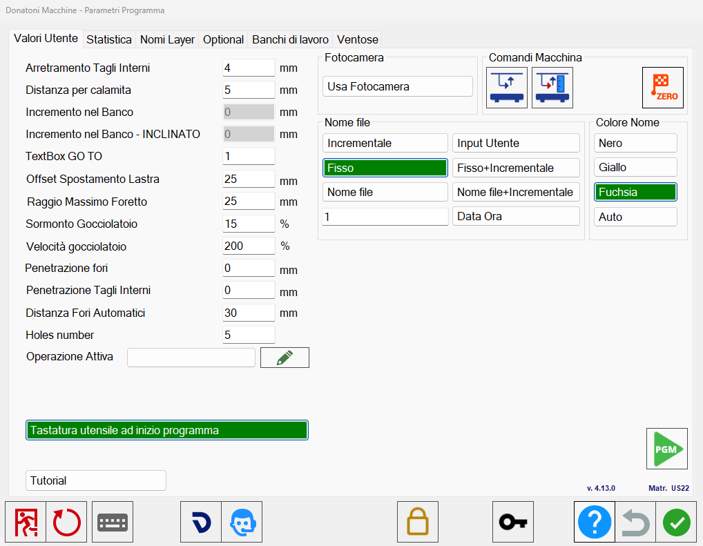
Windows
There are 4 different windows that will be individually illustrated later.
User Values | Window dedicated to changing some settings related to workings. |
Statistic | The operator can view the statistics of the workings performed. |
Layers name | Window dedicated to the settings for the import of DXF files on Parametrix. |
Suction cups | Parameters relative to the vacuum movement speed. |
Bottom bar
Close Parametrix | |
Restart Parametrix | |
Probing | |
Camera connection | |
Remote Assistance | |
Technical Parameters | |
Password insertion | |
Don’t save changes |
3.1.1 USER VALUES
In this window the operator can change some parameters linked to the working.

Section left
Receding of interior Cuts | The minimum distance of the disk approaching the piece for the interior cuts. |
Distance on magnet | Distance between two pieces before magnet activates. |
Increase inside bench | Tool penetration depth in bench. |
Increase inside bench - inclined | Depth of drilling of the tool in the bench. Only for isoparametric mode. |
Textbox GO TO | Default value for GO TO to order the lists. |
Offset Slab Move | Additional quota for the move functionality. |
Max radius Hole | For the dxf import, maximum radius because a circle will be imported as a hole. |
Overlay on drip system | The percentage of drip system overlay, from 99% to 0%. |
Drip System speed | The percentage of the drip system speed compared to the speed of normal cuts. |
Penetration holes | Set the penetration of all holes, set to 0 for the through hole. |
Penetration internal Cuts | Set the penetration of all interior cuts, set to 0 for through cut. |
Automatic holes distance | Indicate the distance between one hole and the other in the insertion of multiple holes. |
Holes number | Holes number to use for the holes on corner. |
Operations
Active Operation | Allows to create a custom operation on cut. |
 | Customized Operations |
Camera section
Use Camera | It is enabled the use of the Camera or the operator chooses the image from file. |
Machine controls section
 | Activate/Deactivate quota control |
 | Acquisition bench quote |
 | Zero setting axes |
File name section
Incremental | Increase the ISO file name, 100, 101, 102… |
Input user | The user can enter the file name. |
Fixed | Fixed iso file name, insert the desired name in the adjacent field. |
Fixed _ Incremental | File name of iso in fixed incremental format type File_101. |
Time Data | File name of iso in date time format 20191206_080124. |
File Name | The ISO file takes the name of the file (DXF or CSV) imported. |
File Name _ Incremental | The ISO file takes the name of the imported file (DXF or CSV) with the addition of an incremental value. |
Color name section
Black | Text of the piece black. |
Yellow | Piece text yellow. |
Fuchsia | Piece text fuchsia. |
Other buttons
Check tool dimension at start of the program | If activated, it allows to enter a probe cycle at the beginning of the cutting program when going to the cut management screen. |
Tutorial | It allows to access to the video tutorials of Parametrix. |
 | Activate/Deactivate PGM |
Tutorial
Inside this window are present tutorials that show how to use some functions of Parametrix.
To see the video you want, press on the corresponding row.

3.1.2 STATISTICS
Through this window it is possible view the statistics of the work done by the machine.
The statistics include also workings of single cut type, excavation, leveling and ISO execution.

Statistics on video
Through the button in the top left corner it is possible to access the video statistics window.
Statistics on video |
It opens then a window that shows some information related to the workings executed in machine.

Each entry in the list corresponds to the related data of a single working.
At the bottom of the page is instead presented a summary of the important information of all workings visible.
Buttons
Daily Statistics | |
Monthly Statistics | |
Total Statistics | |
 | Adjustable time interval |
 | Columns to display |
 | Save Statistics |
Statistics for each machine (Optional)
For the Parametrix version in office mode, it is possible to connect to more machines, and view the statistics of each of them.
On the left section are visible all the machines connected to the device.
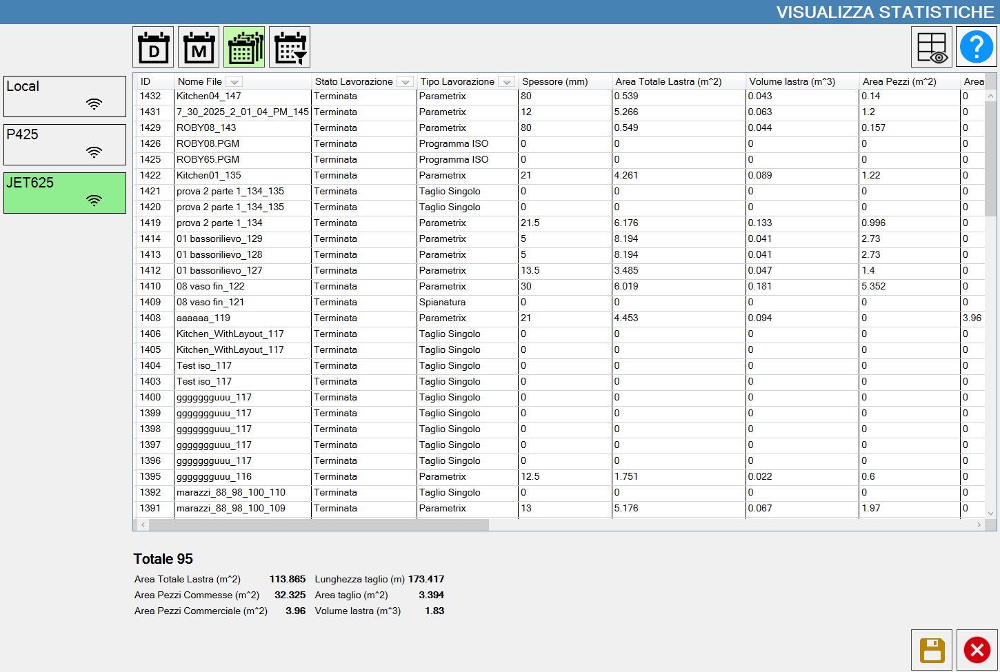
Research
This function allows to effect a research of the statistics inside of a time interval at choice.

The operator can insert the work start date and work end date to delimit the time interval of interest.
It is possible to establish the research precision using the buttons.
 | Research for Day |
 | Search per month |
 | Research by Year |
To export the statistics, use the button:
| Save Statistics |
Timer
In this section is possible to manage the machine timers.

Using the following buttons, the operator is able to manage manually a timer that can keep track of the time elapsed.
 | Start Timer |
Interrupt timer | |
Reset timer |
In the left section are instead present information regarding the machine and tools usage time.
Total time | Indicates the total work time of the machine. |
Disk time | Show the disk utilization time. |
Fat
To start the automatic greasing of the machine, use the following button:
 | Start grease cycle |
3.1.3 LAYERS NAME
Parametrix allows to import files with format '.dxf' created through specific external CAD programs.

Buttons
Color Layers | |
Dynamic Tags |
3.1.3.1 MAKING CUTS FROM DXF DRAWINGS
The machine can execute cuts, millings and holes through designs created with CAD software and saved in '.dxf' format with the automatic recognition of some workings useful to simplify and make faster the work to the machine operator.
NOTETo make Parametrix able to interpret these informations, some conventions must be respected in design realization phase.
All pieces drawn must be closed and converted into polylines forming a polygon.Should you wish to insert the brand of the piece for identification, it must be inserted within the polygon.

Parametrix settings for the recognition of imported layers
To access the window dedicated to the customization settings related to the import of DXF files, press the User Parameters button located on the top bar of Parametrix.
From here, move to the section dedicated to managing the names of the Layers.
For each type of function listed, the user can assign a name (corresponding to the name of the Layer set in the CAD software used) and assign some parameters related to the default values for some workings.
Funzione | Nome Layer |
Miter cut | Miter cut |
Downstand | Downstand |
Backsplash | Backsplash |
Offset | Offset |
Cuts under the material | Below |
Drip system | Drip |
Milling | Milling |
Rim | Rim |
Drilling | Drilling |
Cut added | Added |
Anchoring hole | Keil |
Chamfer | Chamfer |
Lower Chamfer | Lower Chamfer |
Deactivate | Deactivate |
Remove | Remove |
Buttons
The buttons on the left of each working allow to:
 | Information window |
 | Download example |
Miter Cut mode
To be able to insert automatic an inclined edge is necessary observe some conventions:
The miter cuts can be inserted only on the sides of the pieces; if the miter cut is not valid for the entire section, it can be divided into more parts.
It can be applied the miter cut on external arcs (Eg: circular table, or on curved covers only as far as the external cut is concerned).
Regarding internal arcs (e.g. curved covers) the cut is made in passes; the cut will be made inclining the disk automatically, avoiding collision problems with the material.
The procedure for those who use CAD systems, provides for the creation of a Layer that has the following properties:
Layer Name | Inclined _ (followed by the number that identifies the desired inclination degrees). |
Example | Mitered 45 or Mitered-45 |
When a negative value is entered the inclination is referred to a diverging cut while if the value is positive the cut will be convergent towards the polygon’s inside.
Upstand
The function lift is a processing that allows to obtain a rectangular piece of equal length to the line set as a reference side.
For the automatic insertion of cuts wanting to create a downstand it will be necessary to create a Layer with the name 'Downstand' and then insert the measure of the height.
Layer Name | Downstand _ (followed by the height measure of the downstand). |
Example | Downstand100 |
This automation inside Parametrix creates a new piece of width equal to the length of the line that identifies the side of the risalita desired with the two sides that will be glued together cut with the same inclination, ready for a finish with cartabuono.
The inclination associated to these sides is adjustable from the parameter next.
Degrees | Allows to set the inclination with which the inclined sides of the working are imported. |
Backsplash Mode
The backsplash / lift function is a working that allows to obtain a rectangular piece of the same length to the straight line set as reference side.
In the same way, for the automatic insertion of cuts wanting to create a backsplash it will be necessary to create a Layer with the name 'Backsplash' and then insert the height measurement.
Layer Name | Backsplash _ (followed by the height measurement of the backsplash). |
Example | Backsplash150 |
This automaton inside Parametrix creates a new piece of width equal to the length of the line that identifies the side of the desired coating without miter cut but rather ready for a straight angle finishing with rib grip.
Offset Mode
The offset function is very useful when you want to leave more material than the dimensions of the finished piece; through the drawing of lines on the desired sides, the functions associated with the indicated sides will be automatically moved in the correct direction.
In order to insert automatically the desired over material, it will be necessary to create a Layer with the name 'Offset' and insert all the straight lines relative to the sides where you want to have the automatic effect of the setting.
Layer Name | Offset _ (followed by the number that identifies the offset measure). |
Example | Offset3 |
Lower Cut mode
The lower cut function is valid only for those who have installed the mechanical optional that allows to make a lower cut under the visible surface of the slab.
To be able to insert a lower cut automatically, it will be necessary to create a Layer with the name 'Sotto' and insert a line that will represent the cut.
Layer Name | Below |
Example | Below |
NOTEThe length of the cut results also from the diameter of the disk and the material thickness set on Parametrix.
Drip System mode
The drip system function allows to insert a cut of width greater than the diameter of the disk and depth lower than the thickness material.
To be able to insert a drip system automatically it will be necessary to create a Layer with the name 'Gocciola' and insert a line or arch that represents the center of the width.
Layer Name | Drip _ (followed by the number that identifies the drip system width). |
Example | Gocciola10 |
In this way the drip system's depth is established by the dedicated parameter.
Depth of the cut associated with the drip system. This value is not considered if the user set a value on the DXF. |
The cut depth can be managed automatically by taking the value of the dedicated parameter in Parametrix or letting the user set a value by inserting the character '&' followed by the desired thickness.
Layer Name | Drip _ (drip system’s width) _ & _ (drip system’s depth). |
Example | Drip10&5 |
NOTEThe length of the cut results also from the diameter of the disk and the material thickness set on Parametrix.
NOTEFor drip system in curve is made a single cut with the external disk to the same arch. The eventual parameters indicated in the name of the Layer are not considered.
Milling mode
To be able to insert an automatic milling it is necessary to observe some conventions.
If a milling geometry is created that concerns one or more sides of the outer polygon, the milling cutter will perform the external machining outside the drawn perimeter; this also applies to a single side of the perimeter; if the machining involves cutting the entire perimeter with the milling cutter, any cuts with the disk are removed.
The depth of the cut can be defined through the creation of a dedicated Layer.
Layer Name | Milling _ (followed by the number that identifies the milling thickness). |
Example | Milling10 |
If no depth value is indicated at the Layer 'Milling' name, the thickness of the current working is considered.
An additional feature made possible is the insertion of a polyline (open/closed, for example circle or single path composed by a linear polyline) to go to mill a shape inside the bigger perimeter.
Rim mode / Top edge
The function Rim / top edge is a working that allows to lower a perimeter, usually to carry out the recessing of household appliances or sinks.
To be able to insert the desired rim automatically it will be necessary to create a Layer with the name 'Ribasso'.
Layer Name | Rim _ (followed by the number that identifies the width of the Rim). |
Example | Rim20 |
In this way the depth of the rim is established by the dedicated parameter.
Depth of the Rim. This value is not considered if the user sets a value on the DXF. |
The depth of the rim can be managed automatically taking as value the dedicated parameter in Parametrix or set a value by the user inserting the character '&' followed by the desired thickness.
Layer Name | Rim _ (width of rim) _ & _ (thickness of rim). |
Example | Rim20&3 |
NOTEThe rounding radius between the sides of the perimeter can not be changed by the user but the cutter radius will determine it.
The undercut can be carried out on a closed path not overlapped to the piece's sides, in this case a milling will be carried out inside the drawn perimeter.
Drilling mode
The drilling function allows the Parametrix software to add drilling workings on the pieces.
To be able to insert automatically a drilling working, it is necessary to create a Layer with the name 'Foratura' and to draw a circle where it is wanted to realize the hole.
Layer Name | Drilling _ (followed by the number that identifies the depth of the hole). |
Example | Drilling5 |
If the depth is not specified the hole will be applied with the thickness of the material currently used by Parametrix.
In base mode the radius of the circle corresponds to the radius of the tool currently set on Parametrix.
Add Cut Mode
The cutting addition function allows the Parametrix software to add a cut.
To be able to insert an added cut automatically, it is necessary to create a Layer with the name 'Added' and draw over the line that represents the side of which you want to create an added cut, a new line.
Layer Name | Added _ (followed by the number that identifies the distance at which the cut will be added). |
Example | Added50 |
The cut will be added inside (where there is material) or outside (where there isn’t material) of the piece, based on sign distance:
If the distance sign is positive, the cut will be added externally to the piece.
In the opposite case when the distance sign is negative, the internal cut will be added to the piece.
Applying an added cut on internal cuts, for example of a rebate, the cut will be added internally to the piece, where there is no material.
Anchorage Hole Mode
The anchoring hole function allows the Parametrix software to add anchoring hole workings on the pieces.
To be able to insert automatically a hole working of anchoring, it is necessary to create a Layer with the name 'Keil' and to draw a circle where it is wanted to realize the hole of anchoring.
Layer Name | Keil _ (followed by the number that identifies the depth of the anchoring hole). |
Example | Keil5 |
In base mode the radius of the circle corresponds to the radius of the tool currently set on Parametrix.
Chamfer Mode
The bevel function allows the Parametrix software to add bevel workings on the pieces.
To be able to insert an angled working automatically is necessary to create a Layer with the name 'Smusso' and draw over the line that represents the side of which you want to create an added cut a new line.
Layer Name | Chamfer _ (distance along X axis) _ & _ (distance along Y axis) _ & _ (inclination angle). |
Example | Chamfer10&10&45 |
If the three values are not geometrically compatible with each other, the processing will not be applied.
Lower Chamfer Mode
The beak function allows to the Parametrix software to add bevel workings on the pieces.
To be able to insert automatically a beak working it is necessary to create a Layer with the name 'Becco' and to draw over the line that represents the side of which one wants to create a cut added a new line.
Layer Name | Becco _ (distance along X axis) _ & _ (distance along Y axis) _ & _ (inclination angle). |
Example | Lower Chamfer10&10&45 |
If the three values are not geometrically compatible with each other, the processing will not be applied.
Deactivate mode
The function deactivate allows to the Parametrix software to deactivate cuts on the pieces.
To be able to insert automatically a deactivate function, it is necessary to create a Layer with the name 'Disattiva' and draw a new line above the one that represents the side that you want to deactivate.
Layer Name | Deactivate |
Example | Deactivate |
Remove mode
The function remove allows to the software Parametrix to remove cuts on the pieces.
To be able to automatically insert a working, it is necessary: create a Layer with the name 'Rimuovi' and draw a new line above the one that represents the side to be removed.
Layer Name | Remove |
Example | Remove |
Hole Mode
The drilling function allows the Parametrix software to recognize each circle having a radius lower than the 'Maximum drill radius' parameter present within the piece area.
The holes can be inserted freely in all Layers (that are not identified as neutral).
An additional option referred to the use of the drill allows to remove a material island that remains attached after having made the cuts with the disk; this option to be considered by the Parametrix software must draw one or more circles that intersect the sides of the island cut with the disk and through the parameter 'Automatic Holes Distance' a series of holes calculated automatically based on the material remaining to be cut after cutting the disk.
Neutral Layers Management
Wanting to maintain in the DXF file some parts of drawing that are not to be considered as cuts or other functionalities to manage with Parametrix software it is possible to assign them to some Layers that are recognized as neutral.
Create the Layers with names assigned in the neutral Layer fields (1,2,3) in the 'Layers name' page of the Parametrix user parameters keeping in mind that the '*' character will make all Layers imported with the same name before and after the symbol '*' not be considered in the import.
Examples
3.1.3.2 COLOR LAYERS
Through this function is possible to color one or more cuts of pieces created from DXF.
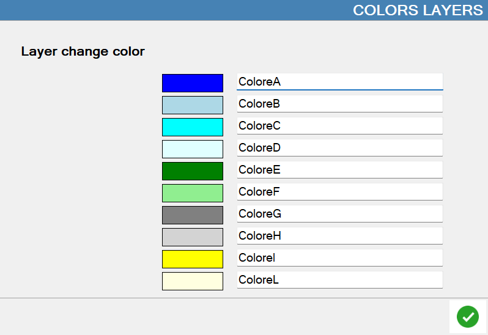
Buttons
Change layer color |
Procedure
To associate a color to the cuts of a piece it is necessary:
Create a Layer on the CAD software;
Assign to him a color in the specific panel in Parametrix;
Draw a line (or curve) above the one that represents the cut that you wish to color inside the Layer.
Once the piece is imported the cut above which the line was drawn on the Color Layer will be the color set in Parametrix (not of the one set in DXF).
NOTEThe line drawn above the cut that you want to color must be completely superimposed on the line that represents the cut.
Example
In this example you want to color two cuts of the piece. It has been created the Layer 'ColorE', and have been added lines above those to color.
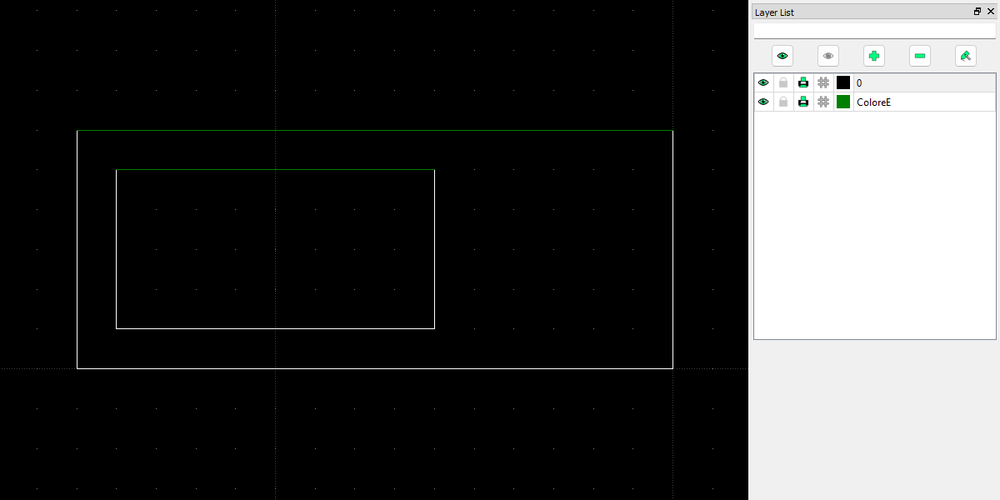
As it is possible to see on the Parametrix work area, the cuts become the color that has been associated with the Layer of the imported DXF file.
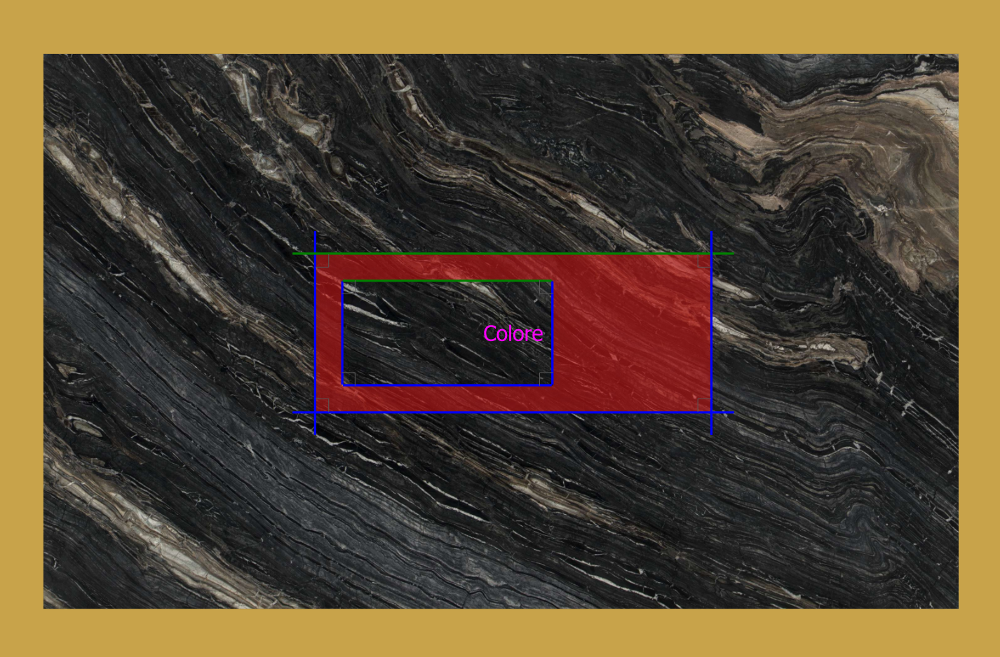
3.1.3.3 DYNAMIC TAGS
With this function it is possible to assign configuration's parameters to the Layers of the DXF files.
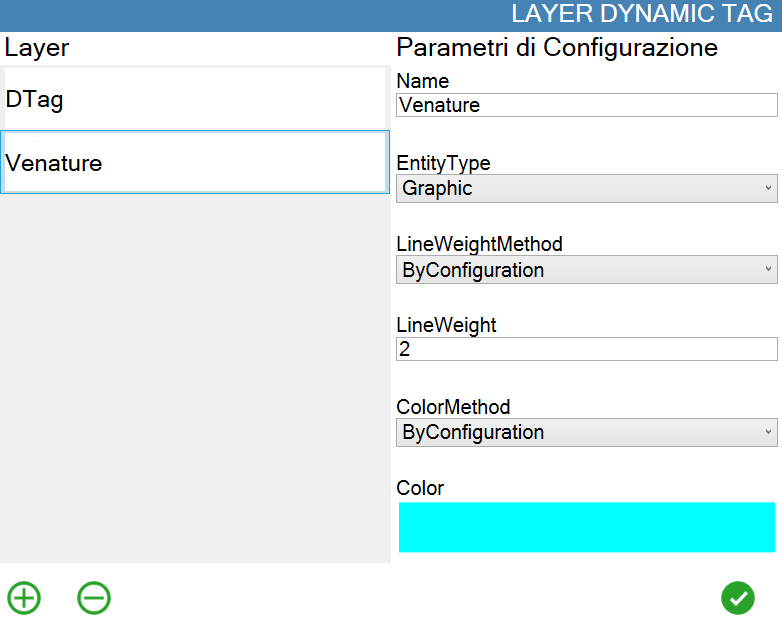
Parameters
The parameters are:
Name | It serves to define and recognize the name of the Layers. |
Entity Type | Defines the type of entities that will be visualized. |
LineWeightMethod | Allows to choose the mode with which the thickness of the lines is extracted. |
LineWeight | Allows to define thickness of the lines belonging to Layer. |
ColorMethod | Allows to choose the modality with which the color of the Layer is extracted. |
Color | Allows to define color of entities belonging to Layer. |
Buttons
With the following buttons it is possible to add or delete a configuration:
Create configuration | |
Delete configuration |
Example
In this example you want to change the characteristics of the elements drawn on Layer 'Venature'.
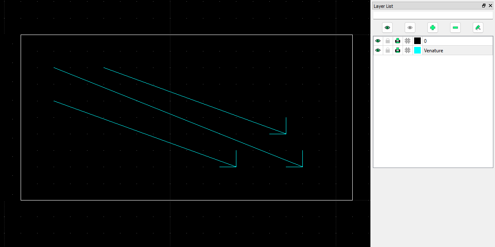
The entities are imported respecting the parameters set in the dedicated window.
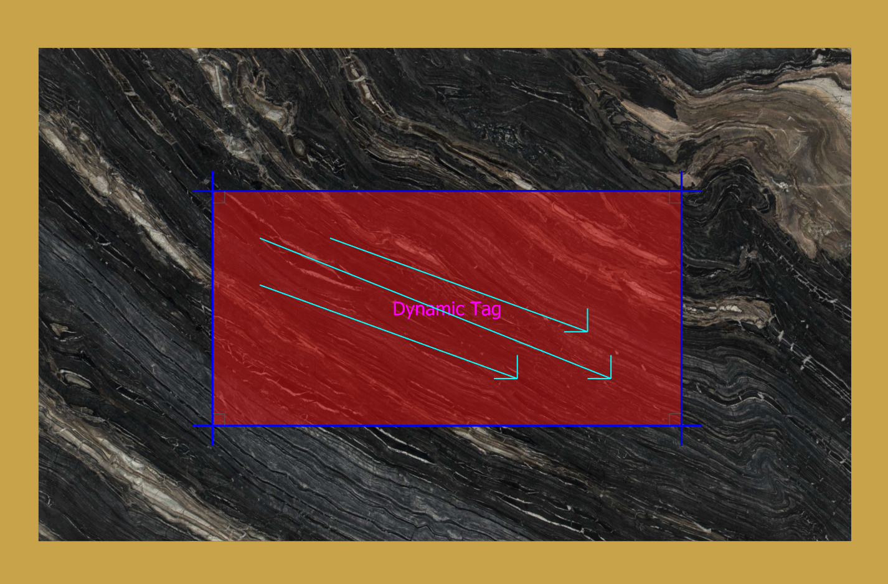
3.1.4 SUCTION CUPS
In this section is set the speed of the movement of the piece with the suction cups.
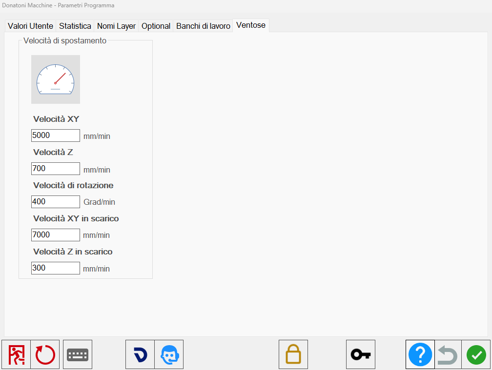
Parameters
Speed XY | Determine the moviment speed of the piece with the vacuum. |
Speed Z | Determine the moviment speed of the piece with vacuum in Z. |
Rotation speed | Determines the rotation speed of the piece with the vacuum. |
XY Unload speed | Determines the displacement speed of the piece with the vacuum in the piece unloading or under cut phase. |
Z Unload Speed | Determine the speed of the piece's displacement with the vacuum in Z in the piece unload phase or under cut. |
NOTEXY Unload speed and Z Unload Speed can be present or not.Normally these choices are made at the program installation time and are decided based on the client’s working.Contacting Donatoni's assistance it is possible to change these options.
3.2 NEW WORKING
This button allows to conclude the current processing and start the programming of the next one.
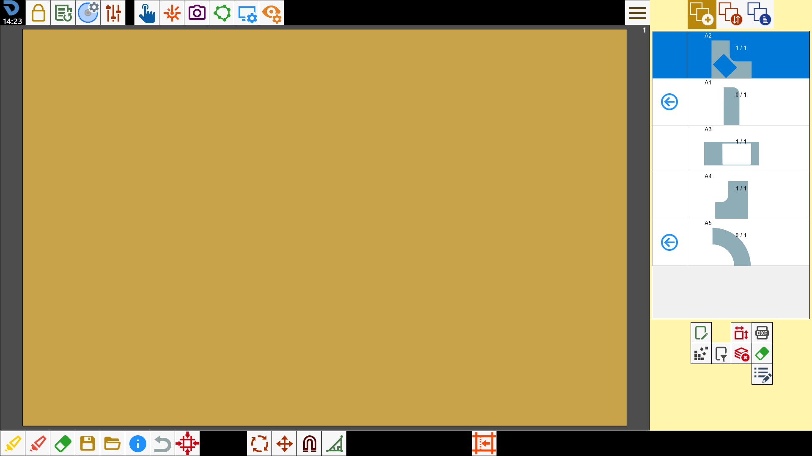
Execution procedure
A working concludes with the generation of the machine cutting program or with the saving of the pieces state.
Through this button, it’s possible to clean the working area from the slab and pieces, in order to leave space to the next working.
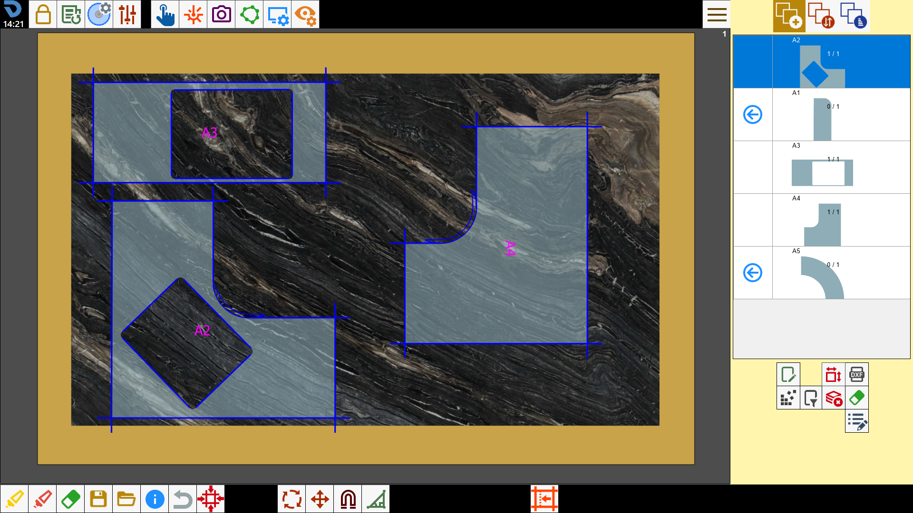
A message will appear that asks confirmation to proceed with the creation of a new processing.
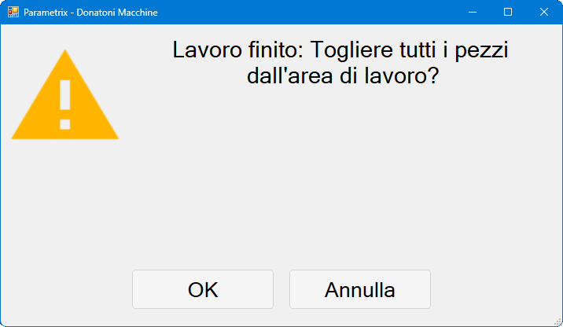
photo and perimeter of the slaball pieces present on the working area (included the commercial pieces);
Parametrix takes into account the pieces that have been programmed, updating their count within the pieces list.
It will no longer be possible to add pieces on the working area if these have reached the maximum number.
3.3 TOOL PANEL
The following screen that allows the operator to handle the tools of the machine.

Selection tool type
Each tool type has a tool selected, as visible in the following example image:

 | Disk |
 | Tools |
The background of the 'Disk' type appears light blue because it is the currently selected tool category.
It is sufficient to click the rectangle of the tool type desired, to update the underlying list of tools with those available for that type.
As consequence of the tool type change, it will be automatically selected as shown in the previous example image.
List of tools present for selected tool type
The tool list shown as an example in the next image has four disks: 'Disk 400', 'Disk 625', 'Disk 2755' and 'Disk 325'.
The first disk of the list is the one currently mounted on the machine, this is highlighted by the light green background and the green checkmark.
In the right section, are shown the parameters relative to the selected tool.

List items
 | Tool type |
 | Main tool information |
 | Force tool |
Search Filters
In the bottom part of the tools list is present a search bar composed from the following elements:

The elements that compose the research filter are illustrated below:
 | Button search by tool name |
-20250307-155302.png) | Button search for tool diameter |
 | Button to cancel the applied filter |
Lower bar
The bottom bar of the tool list offers functionalities to add and remove tools from the list.

 | Add tool |
 | Delete tool |
 | Duplicate tool |
Add tool
Through this window the procedure of creation of a new tool is carried out. The required parameters change based on the type of the tool that you want to create.
The following image shows the window of creation of a new tool for available type:
Disco | Fresa | Foretto |
|  |  |
 |  |  |
List of parameters for selected tool
In this list are reported all parameters relative to the tool currently selected.
Each variation of the selection of the currently selected tool will allow the operator to view the updated values for the desired tool and to make changes to each value.
The list of parameters and their values will also be updated when a different type of tool (Disk / Tools) is selected, showing the values of the selected tool for each category.
Disk parameters
Below are shown the parameters associated to a disk.

 | Name |
 | Diameter |
 | Disk thickness |
 | CRF - Flange Rotation Center |
 | Junction Quote |
 | RPM |
 | Internal water |
 | External water |
Disk rotation speed
To the right of the RPM parameter is located the following button:
 | RPM Information |
In this window is shown a table containing the conversions from rotation speed to RPM based on the disk diameter selected.
The recommended values for the selected disk are highlighted in green.

Parameters milling cutter and hole
Below are shown parameters related to tools such as milling cutters and drill bits.

 | Tool length |
Tool probing
If the machine has the optional tool keyboard tool, it is possible activate the procedure from this panel.
Allow to start a cycle through which it is possible to calculate the diameter, in the case of disk, or the length, for milling and drills.
Buttons
On the right side of the panel is present one of the following buttons.
 | Start disk keyboard |
 | Start secondary tool probing |
NOTEThe button for the disk's keyboard is available only inside the 'Disk' section of the panel.The button for the check of the secondary tool is available only inside the 'Tools' section of the panel.
Procedure
To measure the diameter of the disk, or the length of the drill/milling cutter currently mounted on the machine, press the corresponding button in the right section of the panel.
At the end of the cycle, the program automatically updates the data corresponding to the probed tool measurement.

Other Buttons
In the bottom left of the screen there is the following button:
 | Go to the 'Slab processing parameters' panel |
3.3.1 TOOL PLUS (OPTIONAL)
If the machine has the Tool Plus optional, it will be present a new section dedicated inside the tool panel.
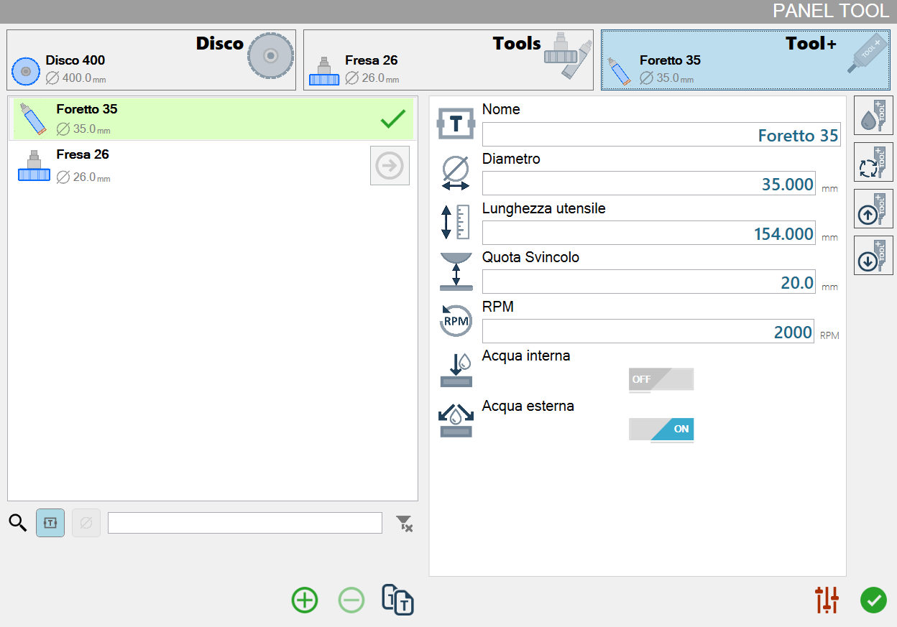
Buttons
Turning/Off water | |
Activate/Deactivate rotation | |
Raises | |
Lowering |
3.3.2 MACHINE AUTOMATIC TOOL CHANGE
It is possible to manage the tools of a machine with automatic change from this panel.
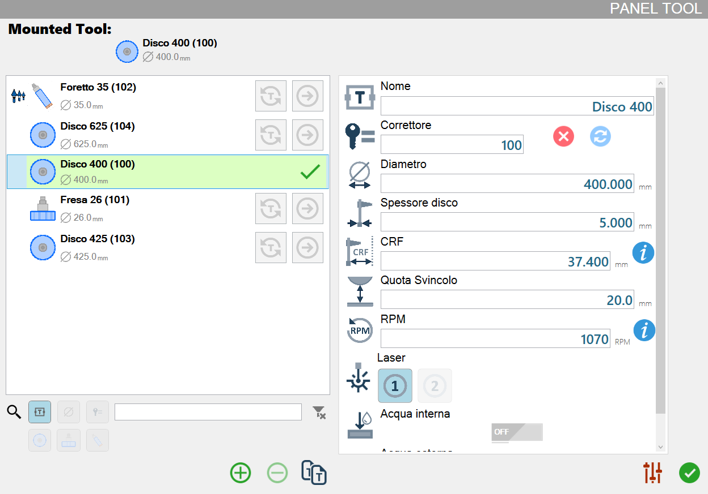
Tool list
In the left section is possible to see the list of all tools available for the machine.
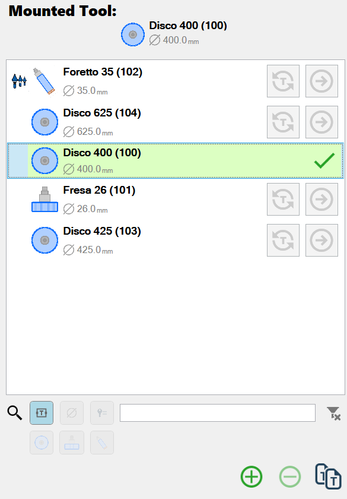
Above is indicated the tool currently mounted on the machine.
Below, a list shows a list of tools usable by the machine. Next to each tool, there are two buttons:
Force mounted tool | |
Start change tool |
Tool parameters
In the left section there are the parameters associated with the selected tool.
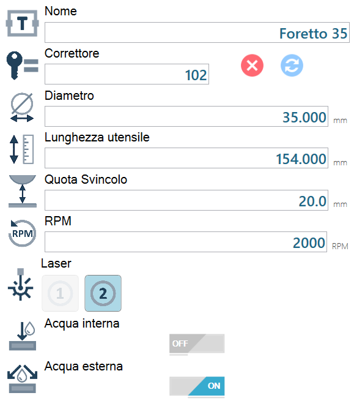
Corrector | |
Laser |
Corrector
This field indicates the position in which the unused tools are stored inside the machine's warehouse.
Change corrector | |
Delete corrector |
Automatic tool change procedure
By pressing the button associated with a tool, the operator will be able to start the automatic tool change procedure.
At start, is requested for which workings you want to use the new tool that is about to be mounted.
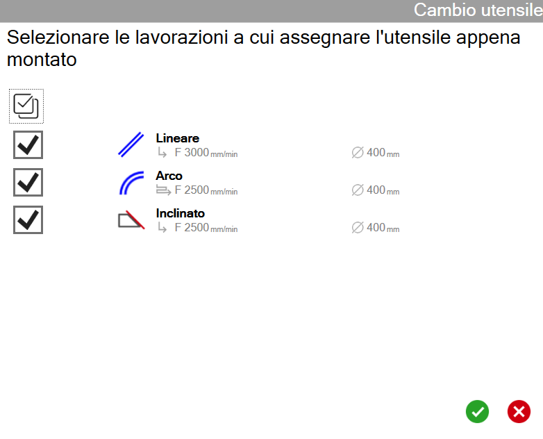
3.3.3 DOUBLE DISK MACHINE
This type of machine allows to mount two disks on the head instead of one. The tool panel allows the management of both.
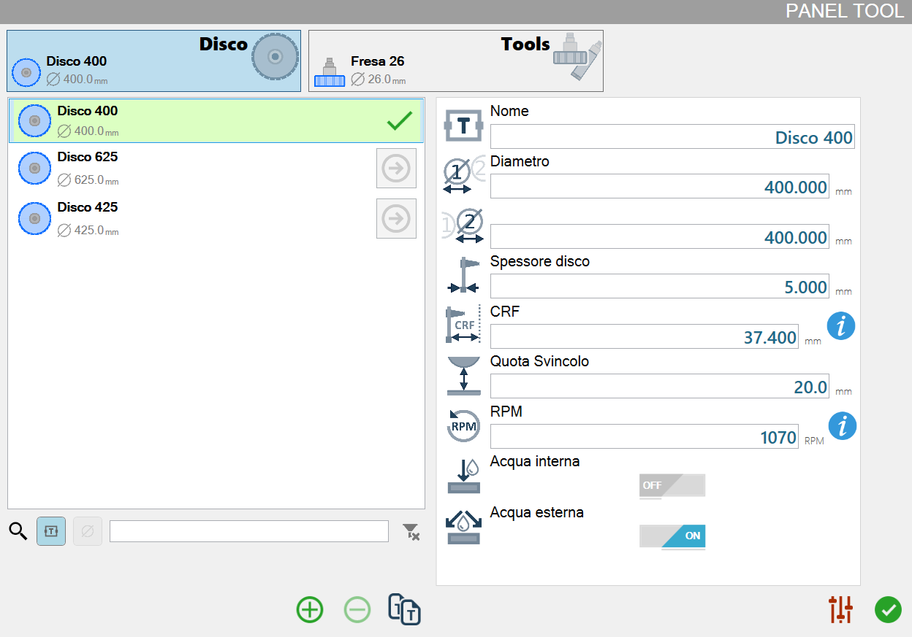
Parameters
Each tool of the 'Disk' section contains the information regarding both disks mounted on the machine.
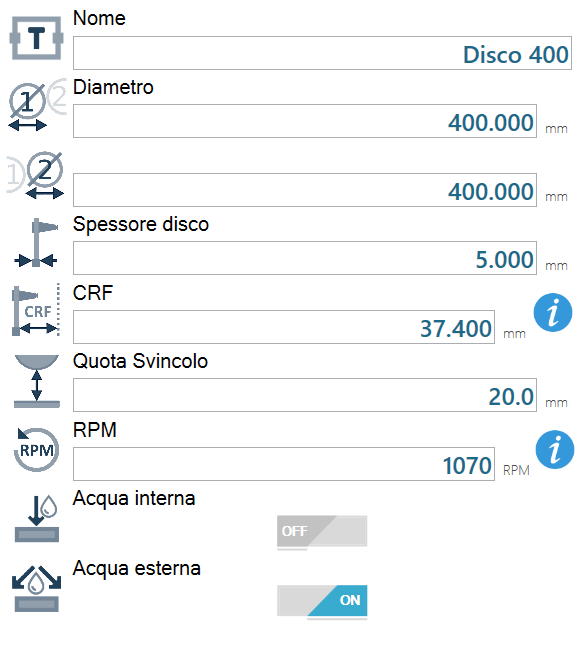
In particular:
Diameter first disk | |
Disk second disk |
3.4 MACHINING PARAMETERS OF THE SLAB
Upon opening the 'Slab Parameters' panel, the screen of processing parameters will be displayed, which allows the operator to manage the data related to processing.
The processing data can be set and modified with the parameters panel.
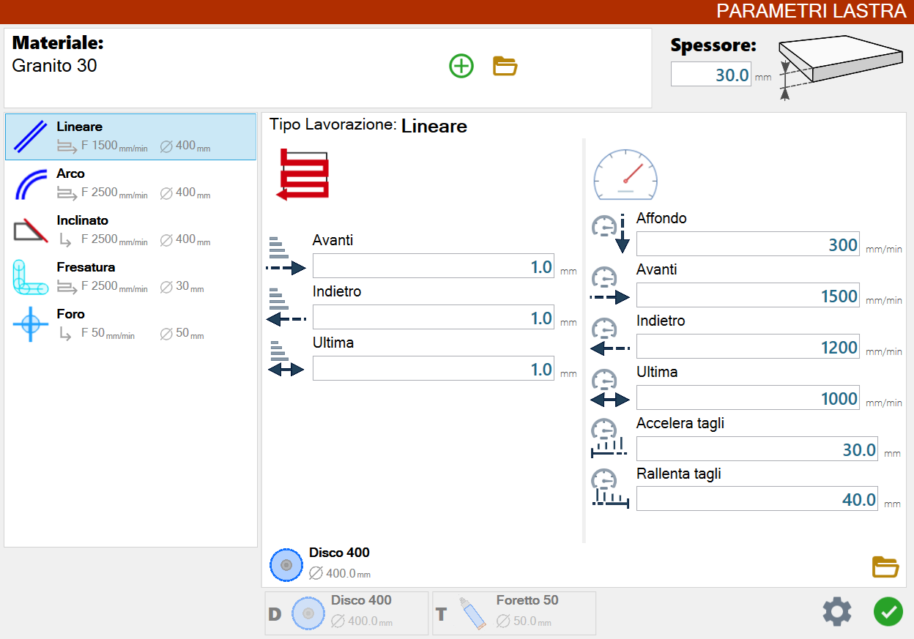
Materials management selected
In the upper part of the panel 'slab processing parameters' there are some elements that allow to manage the materials:

The following elements are illustrated below that compose this section of the slab processing parameters
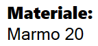 | Selected Material |
Button creates new material | |
 | Button access to the Materials Management panel |
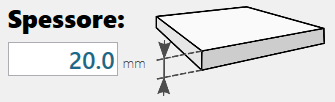 | Thickness of the selected material |
Add a new material
This small graphics window allows to compose the name of a new material:

If the confirmation of new material creation happens, this will be automatically selected.
The parameters and the material thickness will be updated consequently.
Open the materials management panel
From this panel it is possible manage the materials:

Search bar | |
 | Remove Filter |
 | Remove material |
Duplicate material | |
Edit material |
Selection working type
The selection of the working type adjusts the content of the parameters management window.
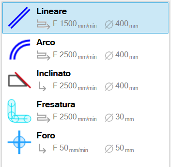
For each working type is visible in its relative preview the selected increment mode, the cutting speed forward (of plunge / entrance in the case of working type Hole) and the diameter of the tool.
Type steps
 | Full Step |
Step / spiral |
Type of workings
Linear

Full Step

Step to step

Description parameters increments
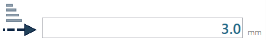 | Forward |
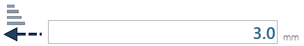 | Back |
 | Last |
Parameters description speed
Penetration | |
Forward | |
 | Back |
| Last |
 | Accelerate cuts |
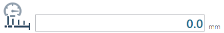 | Slow down cuts |
NOTEAs for increments and speeds the parameters 'Backward' and 'Last', can be present or not or only one of the two can be present.Normally these choices are made at the program installation moment and are decided based on the client's working.It is possible to change these options, as you prefer to work differently by contacting Donatoni Assistance.
Arc

Step to step

Miter cut

Full Step
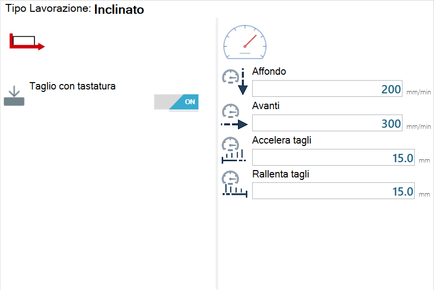
Step to step
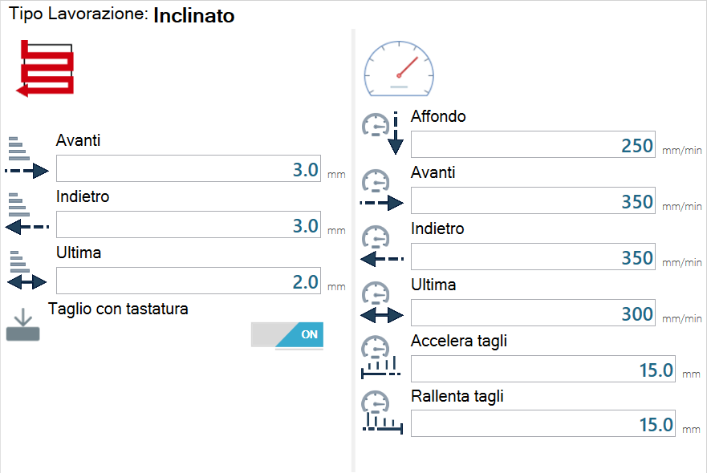
Description parameters increments
 | Cut with keyboard (activated / deactivated) |
Milling
Full Step

Step to step and spiral step
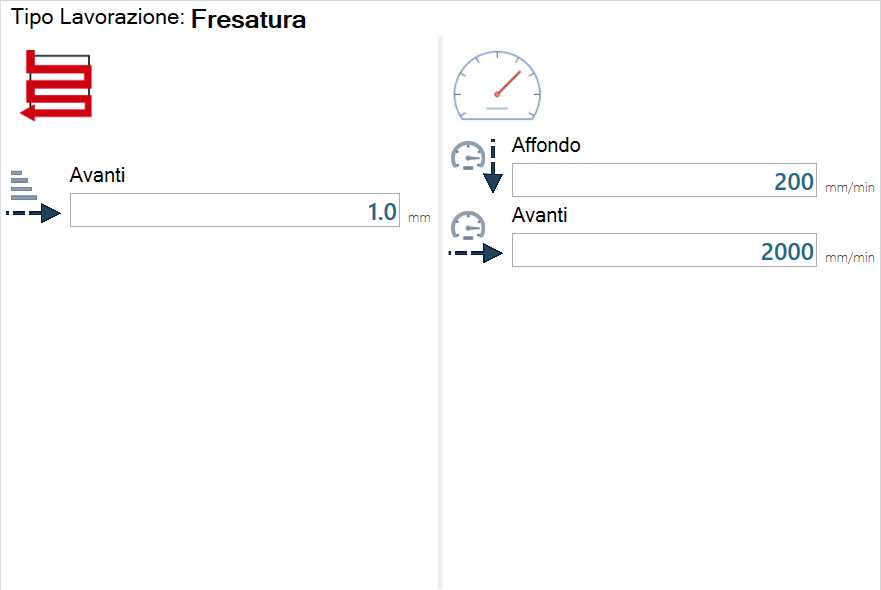
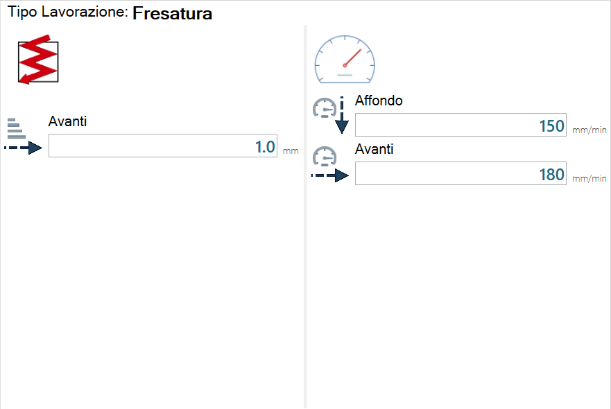
Hole
Full Step

Step to step
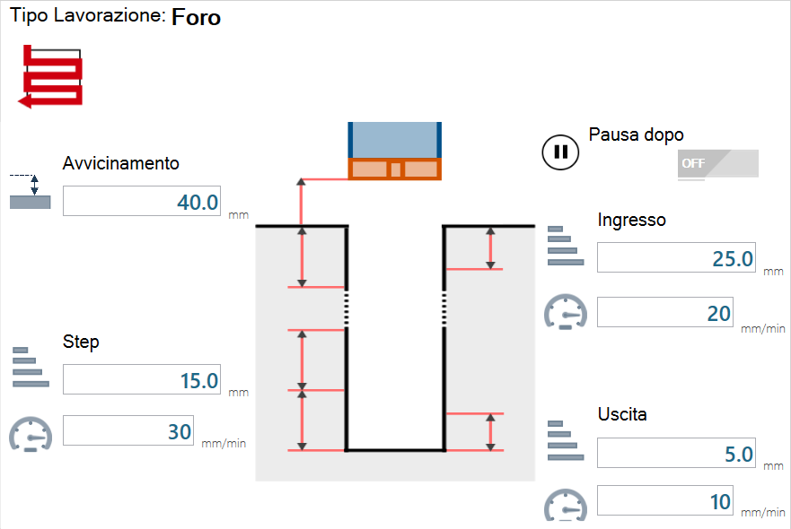
Execution working with step pass:
The machine will approach the material at maximum speed, until the achievement of the distance from the material specified in the parameter APPROACH.
The number of steps will be calculated as:
Thickness material divided thickness of steps
eventually rounded up
The machine will begin to move at working speed.
If the STEP INGRESSO parameter value is set (different and greater than zero), the machine will work at the speed set in the second INGRESSO field until the distance set in the STEP INGRESSO field is reached.
The machine will execute the steps calculated at the second point at Step speed
After each step (included the first one) the machine will return to material quote at maximum speed, then it will return to maximum speed at short distance compared to the beginning of the next step.
If the STEP OUT parameter is set (different and greater than zero), the machine will work at the speed defined in the second STEP field until the distance defined in the first OUT field is reached.
The rest of the Step will be executed at EXIT speed
Description parameters Hole with step pass
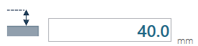 | Approach quote |
 | Step |
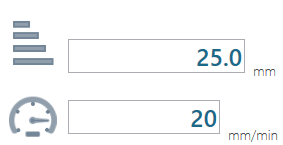 | Way in |
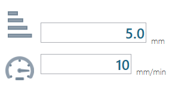 | Exit |
Pause after |
Change of cutting parameters
It is possible modify the previously illustrated parameters for the disk, the milling cutter and the drill, if the user is enabled to use them.
To decide which tool to modify the parameters, it is necessary to select one through the pressure of the button visible in the right part of the 'Select tool' panel.
 | Change cutting parameters |
Pressing this button a window will be visible that will contain a configuration of saved parameters for each material present. The results depend also from the selected working type.
A window 'Change of cutting parameters' will be opened similar to the following example image:
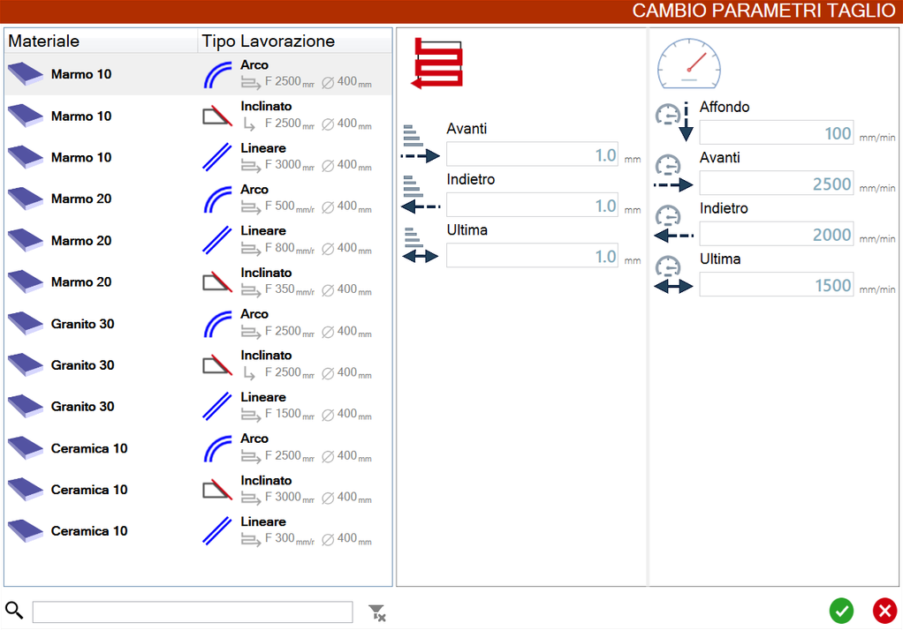
In the lower left corner of the 'Change of cutting parameters' panel, there is an initially empty text bar that allows to apply a research filter.
The button on the right of the bar activates only when text is present in the bar and then a search filter is applied. Its pressure cancels the filter and empties the text bar.
Bottom bar
The bottom bar of the Slab parameters Panel appears like this:
This bar is constituted by the following elements:
Disk preview | |
 | View Drill/Hole |
 | Tool Panel |
3.5 ACCESS TO MANUAL COMMAND
This panel allows access to some manual commands of the machine.
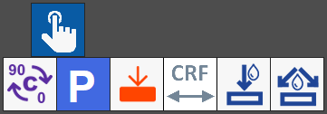
Buttons
0_ - 90_ | |
Parking | |
Probe slab | |
CRF cycle | |
Turning on / Turning off internal water | |
Turning on / Turning off external water |
Slab probe cycle
The keyboard cycle allows to calculate the thickness of the slab and take the bench quote using the suitable probe mounted on the machine.
To start it, activate the button inside the manual commands panel, subsequently press a point inside the slab on the working area.
In the chosen position, a symbol will be visible, which indicates the position in which the keyboard must be executed.
Once the machine has finished executing the cycle, a panel will open that shows some measurements obtained through the slab probe.
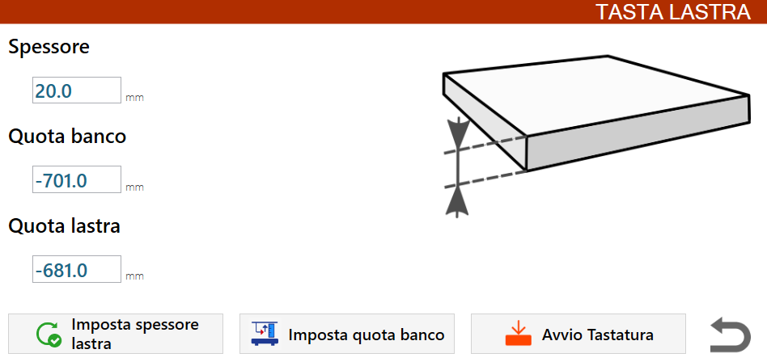
These information include:
Thickness | Slab thickness measured. |
Bench quote | Bench work quote. |
Slab quote | Measured quote on the top edge of the material placed on the bench. |
It is possible to save the data collected from the probe cycle using the buttons below:
 | Set slab thickness |
Set bench quote | |
Start probing |
CRF (Center Rotation Flange) measurement cycle
The CRF cycle allows to measure the distance of the inner edge of the disk's tooth currently mounted on the machine, from the C axis of rotation.
To start it, activate the button inside the manual commands panel, then press a point inside the slab on the work area.
In the chosen position, a symbol will be displayed, which indicates the position where the cuts with disk must be performed to measure the CRF.
WARNING!During the execution of this cycle, cuts are performed in the material.Therefore it is recommended the operator to pay attention to the position of the slab in which to start it, to avoid damaging it.
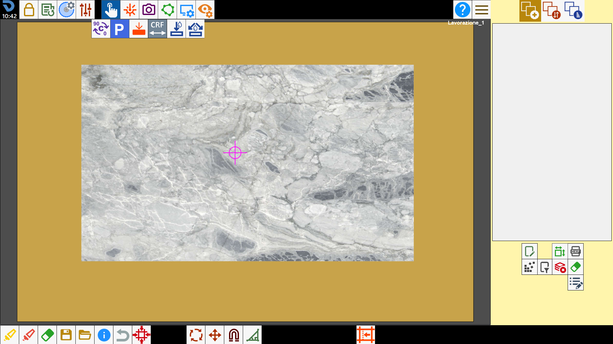
The machine will execute two parallel cuts with A axes to 0 degree: the first with C axes equal to 0 degree, while the second with C axes equal to 180 degree.
At the end of the procedure, the operator is required to measure, using meter or caliper, the distance from the inside of the two cuts on the slab.
This measurement must then be inserted inside the 'A' field of the panel that opens at the end of the cycle.
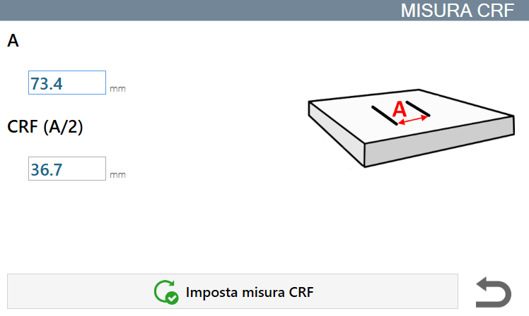
The measures performed must be inserted in the appropriate field:
A | Internal distance between the two cuts performed during the cycle on the slab. |
CRF (A/2) | Measure of the disk's Flange Rotation Center. It's calculated as half of the internal distance between the two cuts present on the slab. |
It is possible to save the data collected from the CRF measurement cycle using the following button:
Set CRF Measure |
3.6 LASER MANAGEMENT
This panel allows to add or remove laser references on the working area.
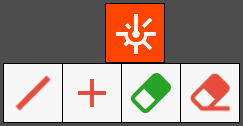
Buttons
Laser reference to line | |
Draws laser cross | |
Delete all drawings | |
Delete a single drawing |
Laser to line
The line laser is a tool aligned with the disk mounted on the machine. It is used to collect information related to the position and the orientation of the disk on the bench.
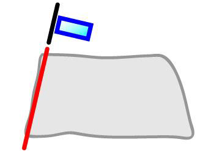
To acquire the reference, bring the machine to the desired point, and press the button to detect the direction of the laser at line and add the reference on the working area.
Using more references, it is possible to recognize the perimeter and the position of the slab or of a piece on the work bench.
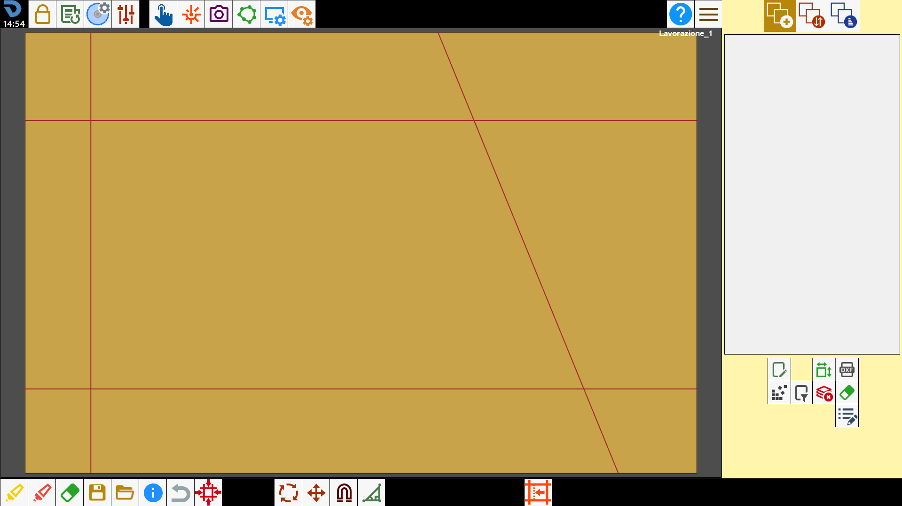
Laser cross
The laser cross is used to collect information related to the position of the laser pointer on the bench.
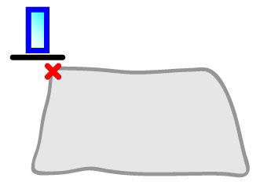
To acquire the reference, bring the machine to the desired point, and press the button to detect the position of the laser cross and add the reference to the work area.
Using more references, is possible to recognize the perimeter and the position of the slab or of a piece on the working bench.
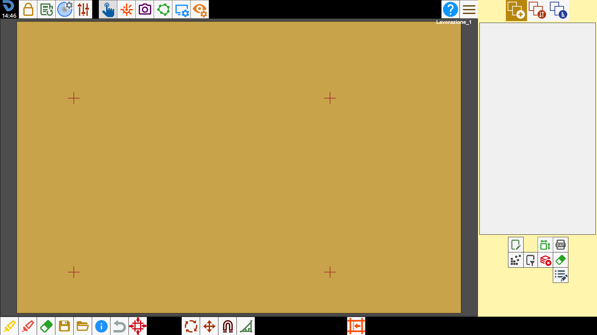
3.7 ADD PHOTO TO WORK AREA
This function allows to add a photo on the work area.
In the case Parametrix is connected to a camera, the photo of the slab on the work bench is taken.
Otherwise, it is required to select a photograph from the files of the computer.
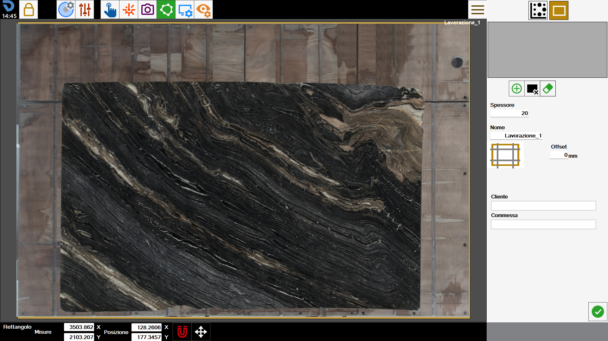
Take a photo
Generally, this functionality allows taking a picture of the machine's work bench using the built-in photographic device.
Pressing the button, is open a window where is required to insert thickness of the slab that is about to be captured.
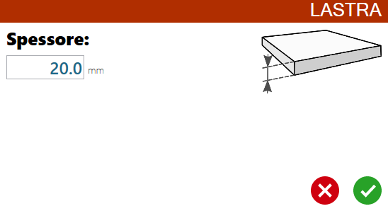
The photo is taken, and then the panel that allows the operator to decide the perimeter of the slab opens.
Choose a photo from the computer files
This mode allows computers not connected to a photographic device, usually arranged in office, to insert inside the program photo from file.
By pressing the button the window for the exploration of the resources is opened, so that you can choose a file to load.
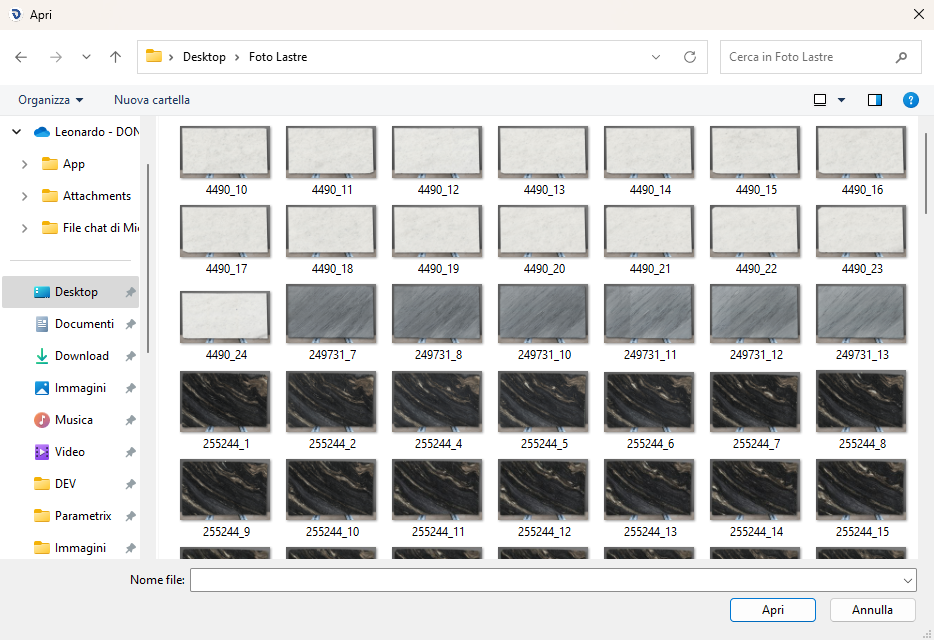
The user is then directed to the panel for the perimeter selection of the slab.
Select Perimeter
After selected or taken the photo, this screen will appear where the operator must indicate a perimeter within which the pieces can be positioned.
Once confirmed the perimeter, the photo of the slab will be added on the working area of Parametrix.
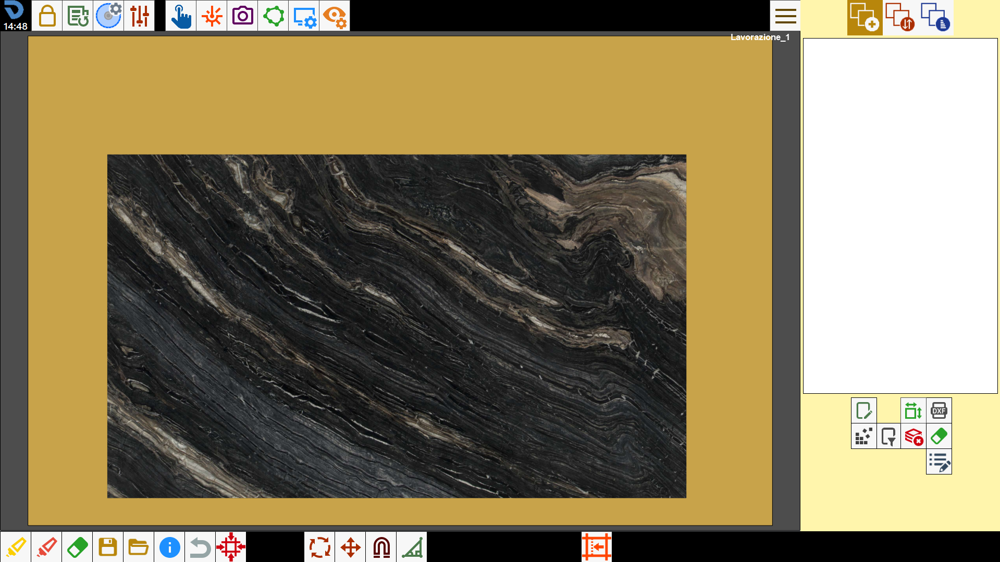
3.8 SLAB PERIMETER
To be able to function, the program must know the edge of the slab on which to work. This function allows to trace the perimeter.

Perimeter creation mode
The program allows the operator to draw the perimeter using one of the following modes:
 | Rectangle mode |
 | Points mode |
NOTEAt every moment of the perimeter creation, it is possible to pass from a mode to the another.Passing from 'for points' mode to 'rectangle' mode, the perimeter will be converted into rectangle, and all the polygon vertices will be lost.Confirmation will be requested to be able to proceed in this operation.
Rectangle
This mode allows to create perimeters from rectangular shape.
To change the size and position of the rectangle it is possible to drag the yellow circles on the working area, or by modifying the values indicated in the bar below.

Measures | Dimensions on axis X and on axis Y of the perimeter. |
Location | Coordinates of the bottom left vertex of the rectangle with respect to the bottom left vertex of the bench. |
For points
This mode allows to create polygons from the arbitrary polygonal shape.
To do it, the operator can arrange the points that form the perimeter in the desired positions as shown in the figure below.

In this mode, it is possible to interact with the perimeter using the following buttons:
 | Perimeter closing |
 | Removal last point |
Once closed, the perimeter will become of color blue, and its vertices indicated by yellow circles.
During the piece creation phase and in the presence of a closed perimeter, it will always be possible to move the vertices on the working area to improve the precision.
Bottom bar
The operator can interact with a perimeter present on the working area using the buttons located in the lower section of the screen.
 | Magnet on laser cross |
 | Perimeter displacement |
Create a new perimeter
The program allows to create more than one perimeter on which to arrange the pieces for the working.
Furthermore, it is possible to define areas on the slab on which it is not possible to insert any piece.
 | Perimeter |
 | Avoid area |
 | Delete perimeter |
The perimeters created are visible in the list in the upper right. To modify a perimeter, simply select it on the work area or the corresponding item within the list.
The currently selected perimeter has the blue contours and the vertices in yellow, while the remaining can be distinguished also in base to the color: green for the perimeters of the slabs, orange for the area to be avoided.

From this screen it is possible to add some relief cuts to the slab.
 | Heading of the slab |
To complete the creation of the perimeter, the operator is required to insert some information regarding the work that must be carried out.
Thickness | The operator must indicate the thickness of the slab present on the work bench. |
Name | Name to assign to the slab working. |
Customer | The customer's name is indicated for which the job is carried out. It is an optional field. |
Job | A job identifier is indicated. It is an optional field. |
NOTESlab thickness and working name are mandatory fields to insert before confirming the perimeter.Conversely, is not necessary to fill the information regarding the additional properties below.
Areas to avoid
The avoid areas are zones of the slab that the operator wishes not to make available for the positioning of the pieces on the slab.
The reasons for this can be the presence of breaks on the material, of not aesthetic veins or the necessity to preserve some parts of the slab.
They are represented as blue color zones inside the working area.

When you utilize the functionality of Nesting, the pieces are arranged so as not to occupy any of these areas.
3.8.1 HEADING OF THE SLAB
The slab heading is a feature that allows adding to the process of stress relief cuts. These cuts have the task of refiling the slab along the edges.
The functionality can be activated in the perimeter creation panel.
In the following example screen there is a scheme that represents the four cuts, one for side, that you can insert.
Side bar
Heading of the slab |
NOTEYou can heading only slabs having rectangular perimeter. It does not work in 'by points' mode.It is also possible to head more perimeters in a different way.
Execution of working
On the working area, the program checks that the operator does not position pieces outside of the slab header.
Is furthermore possible magnetize the pieces to these cuts, as showed in figure.
During execution of the cutting program, the machine will execute these refilatures before any other operation. Immediately after, a heading pause will be carried out, so as to give the operator the time to remove the discarded slab material.
In this way, successive operations of handling the slab through vacuum cups could be executed without the impediment of these refilings.
It is possible to see these operations also inside the list in the screen of management and optimization of the cuts.
3.8.2 AUTOMATIC PERIMETER (OPTIONAL)
Through this functionality, Parametrix is able to derive automatically the perimeter of a photographed slab.
Buttons
Automatic Perimeter |
How to use the automatic perimeter
To use this function, it is necessary to take the photo from a slab on the working bench or load an image from the computer.
The operator will then be inside the panel for perimeter management.
Inside the right section, press the button for the automatic perimeter calculation.
At the end of the operation, it is possible to manually modify the vertices of the perimeter obtained if they are not sufficiently precise.
3.8.3 EXTERNAL SOFTWARE INTEGRATION
It is provided to the operator the possibility to integrate the photo system with different formats, for example Mapascan.
Execution
In addition to the image, additional files are often provided containing useful information related to the slab, such as thickness, perimeter and other geometric or physical relevant data.
In phase of photo opening the data are analyzed to correctly set perimeter, avoid areas and thickness:
Parametrix is able to read this file and import the photo of the slab, the perimeter and the thickness of the slab.
Multiple integration
When multiple integrations are configured, it is possible to dynamically select which to use at the execution time.
3.9 MANAGEMENT OF THE BENCH VIEWING
This function opens a panel with tools to resize the working area.
Buttons
Ruler | |
Zoom _ | |
Zoom - | |
Restore Zoom | |
Move view | |
Show / Hide background color | |
Show / Hide pieces name | |
Show / Hide right angles |
Ruler
To use this function the operator will have to indicate two points on the work area. These will be represented as two yellow crosses.
Under the ruler button, a small panel will appear showing the distance between the two points.
Horizontal | Horizontal distance between the first and the second point. |
Vertical | Vertical distance between the first and the second point. |
Total | Total distance between the first and the second point. |
X | Horizontal mouse position in real time. |
Y | Vertical position of the mouse in real time. |
3.10 VIEWING OF WORKING ENTITIES
This function opens a small panel with viewing tools.
Buttons
Show / Hide cuts | |
Show / Hide holes | |
Show / Hide fresature | |
Show / Hide Rim | |
Show/Hide Dynamic Tags |
3.11 CREATION OF THE PIECES
Parametrix is designed for the processing of flat and closed geometric figures, which represent the pieces.

Piece creation mode
As it is possible to observe from the top navigation bar,

the creation pieces occurs through the use of one of the following modes:
 | Import DXF file |
 | Rectangle Creation |
 | Create parametric figures |
 | Import File CSV |
 | Chronology |
 | Favorites |
 | Piece Creation |
A more in-depth description of the operation of each mode will be provided in the relevant paragraph of this chapter.
The selected functionality is highlighted with a light green color. When opening the 'Create Pieces' panel, the operator will find selected the 'Rectangle creation' mode.
Import pieces in Parametrix
To correctly conclude the creation of one or more pieces, it is necessary to use the following button, that is possible to find in every section of the panel:
 | Import pieces |
NOTEThe operation of the pieces list, which is located on the right part of the panel, is explained in the related chapter.
In the following image you can observe how, after having pressed the 'Import pieces' button, the pieces list has populated itself with the elements that composed the DXF file that you decided to import.

List of imported pieces
The pieces list displayed in the right part of the 'Create Pieces' panel is initially empty. It is populated as pieces are created through the features described earlier in this chapter.
Below is reported an example of empty piece list (on the left) and an example of populated list (on the right):
 |  |
Advanced pieces properties
From the previous example images it is possible to note a single button present in the top right corner of the pieces list to work.
 | Show advanced Piece information |
|---|

In the bottom part of the Piece window there are two buttons illustrated below:
 | Copy |
 | Paste |
Visible the details of the piece
Following the example of the right-populated list displayed at the beginning of the chapter, the behavior of the following button is now highlighted:
 | Show piece details |
After the button’s pressure the piece in list appears as follows:

Add the selected piece among the favorites
Is possible insert any piece in the suitable section of the favorite pieces using the following button:
 | Add favorite |
The pressure of this button will make appear the following pop-up:

The compilation of the text field and subsequent confirmation will allow the operator to insert the selected piece into the list of favorite pieces, previously illustrated.

3.11.1 IMPORT OF DXF FILES
In this section, it is possible to create pieces through the import of DXF files.

List of files
In the left part of the window, there is a list that shows all the folders and DXF files contained in the currently selected path.

The element at the top of the list,

allows to return to the folder above the one in which one is currently.
Initially, the list of DXF files present in the PC's working folder is shown. It is possible to change the folder using the special buttons that are located on the right of the list of files.
 | USB memory |
 | Working folder |
 | Explore folders |
 | Delete file |
Order and filter the displayed files
The items that are below manage the application of filters and the sorting of the files that are visible.

At the top of the image is located a search bar, through which it is possible to filter the files by name, showing only those that contain the text inserted.
In this section of the screen, you can also find the following buttons:
 | Clean filter |
 | Sort by date |
 | Sort by name |
NOTEThe search by name applies exclusively to the files contained in the folder, and not to eventual subfolders present.On the contrary, the order by name and by date, is applied to each item of the list, while always showing the folders before the files.
Preview
Upon selection of a file, in the panel in the center of the screen, a preview of the drawing is displayed, so as to make immediate identification of its content.

It is possible to interact with the preview by dragging its content, or by using the buttons placed on its right.
 | Increase zoom |
 | Decrease zoom |
 | Restore Viewing |
Additional buttons
The following buttons also allow to carry out additional actions.
 | Single import |
 | Panel details |
Panel details
If a file has been selected, you can access the 'Details Panel' to visualize the properties of the DXF. This is possible through the following button located on the right of the preview:
Once opened, it will show the following panel, in addition to the list of pieces that make up the selected DXF:

Visibility management layout
On the top of this panel are reported the layouts in form of checkbox activatable or disactivatable at will.

The first item of this list of layouts allows to enable or disable the visualization of all layouts.
Side panel
Buttons related to visibility and padding
Besides the buttons already shown previously relating to the modification that zoom level and to the restoring of this, there are two new buttons:

 | Highlight selected piece |
 | Move view |
List of polylines
On the central right side of the panel are reported the pieces that compose the chosen .dxf, in the form of polylines.
Selecting one of the values present in the list, the related visible piece will be highlighted with the yellow color in the preview.

When the button next to each piece is pressed, the list of polylines that constitute the piece will be made visible.
It will be also possible to highlight a single polyline of the DXF simply selecting the respective line from the list:

Lower buttons
These buttons are placed in the lower part of the side bar.

 | Find previous open polyline |
 | Find previous open polyline |
In the following example, Panel Details has been opened for a .dxf that presents some pieces constituted by open polylines, reported in red in the list:

3.11.2 CREATION OF RECTANGLES
It is possible to build rectangular pieces by inserting the measures of width and height and to arrange them on the list of pieces to be worked.
The program allows also to associate to each piece a mark (or label) identificative, and to set the number of repetition of rectangles with equal dimensions.
Description of parameters
For the creation of rectangular pieces the following data are required:
 | Pieces Number |
Width | |
 | Height |
Mark |
Additional buttons
The following side buttons also allow to carry out additional actions.
Single importing | |
Dynamic Tag Top |
To activate the functionality relating to each button, it is necessary to press it. In this case, it will be highlighted with a light green color.
NOTEThe 'Dynamic Tag Top' buttons that are located next to the width and height boxes are mutually exclusive. It is therefore possible to assign to only one side of the rectangle the Dynamic Tag Top.
3.11.3 CREATION OF PARAMETRIC FIGURES
In this section, it is possible to build pieces using parametric figures with preset shape. To draw a figure, it is sufficient to insert the quotes that characterize it.

Categories of parametric figures
Referring to the above image, in the left column are represented the main categories of parametric shapes.
 | Kitchen tops |
 | Irregular tread |
 | Geometric Figures |
Preview and parameterized values
Based on the selection of the category, in the column just more to the right opens the choice of the correct shape to use.
Once the figure is decided, the fields to be completed with the measurements necessary for the creation of the piece are displayed. An image, placed in the center of the screen, will provide detailed instructions regarding the dimensions that must be entered. Below the reference image, a preview of the figure being drawn is displayed, which is modified in real time following each modification made on the values that characterize the designated figure.
In the following image you can see an example of create of a kitchen top.
As you can note, once the required measurements are inserted, they color in red, while in the starting situation they were in black color.
As in the previous paragraphs, once completed the insertion of the measures it is possible to insert the brand (or label) that is visualized on the piece when it is inserted in the work area, the number of copies of the piece, and decide if to execute the single import.

Additional Machine settings
Additional parameters
For the creation of rectangular pieces the following data are required:
 | Pieces Number |
 | Mark |
Additional buttons
 | Activate/Deactivate OUT SQUARE |
 | Single importing |
  | Mirror |
Pieces OUT SQUARE
Some pieces have the possibility of being built using angles not in square (that is different from 90 degrees).
When this function is enabled, further measurements are required to allow the program to calculate the angles of the piece. The input of these measures is, once again, guided by an image that replaces the previous one.
Below a sample of a piece out square.

NOTEThe additional measures for the construction of figures out of square are not necessary for the creation of the piece. By default they will always be equal to zero.
Mirror
By pressing the two dedicated buttons, it is possible to flip the displayed result on screen, respectively along the vertical or horizontal axis. This functionality allows to adapt the viewing based on the operating needs or the type of working in progress.
The following are proposed some examples of horizontal and vertical overturning:
Only Horizontal overturn | Only overturning Vertical | Horizontal and Vertical flipping |
 |  |  |
 |  |  |
3.11.4 IMPORT EXCEL FILE (CSV)
This section offers the possibility to the operator to import pieces starting from files in CSV format.
Preview
The list on the left of this section reports all the files in CSV format present in the currently selected path.
The pressure of an element from the CSV files list will update the preview that compose the central part of this section.
In the following example it is possible to notice the update of the preview following the pressure of the first element of the list:
Proximity multipliers
Is given the possibility to multiply by 10, or by 100, or by 1000, the size of the pieces present in the selected CSV file.
The following image shows the three available multipliers:
The following image updates the example of the image reported in the chapter 'Preview', in which the values 'Width', 'height' and 'thickness' undergo a variation following the pressure of the second multiplier of protrusion button 'X 100':
In this example it is also highlighted how the 'X 100' button after being clicked, is updated changing its background color with a light green hue.
Sort
The sorting functionality populates the sorting list based on the fields present in the selected CSV file and allows the operator, if desired, to apply a filter in alphabetical order or reverse alphabetical order based on one of the fields provided in the selected file.
3.11.5 HISTORY OF IMPORTED PIECES
This functionality allows the operator to recover the history of the created pieces.
Types of viewing of the pieces in the history
Three different viewing modes of the pieces present in this section are made available.
 | Visible cuts |
Visuale quote | |
Visible Bound |
For the following examples five pieces (A1, A2, A3, A4 and A5) have been imported from the DXF named 'Kitchen_Curve'.
Regardless of the selected viewing, it will be always possible to view all pieces both in the list of the history on the left side, that in the list of the pieces currently imported on the right side.
Viewing of the cuts
The view cuts highlights all cuts, both perimeter and internal to the piece, hiding other information like the value of their length.
Visible of the cut quotes
The quote view cuts highlights the external perimeter coloring it in black color, and places in proximity of the center of each cut on the perimeter the relative length.
Visual bulk
The view of dimensions does not highlight any cut, instead it allows observing the maximum dimensions of the piece in terms of width and length of the piece.
In the following image it is possible to observe two black lines with at center of each the value of the length and width maximum of the piece, but it is important to observe that only for a coincidence the sides of the piece A2 coincide with the black lines, the remaining cuts of the piece indeed they are not highlighted and they do not show any information.
3.11.6 FAVORITES
Through the favorites screen is possible import in Parametrix pieces that previously have been saved like favorites.
Add a piece among the favorites
Is possible insert whichever piece in the pieces favorites section using the following button:
 | Add favorite |
The pressure of this button will make the following pop-up appear:
The compilation of the text field and subsequent confirmation will allow the operator to insert the selected piece in the list of preferred pieces, previously illustrated.

Types of piece view in the history
Three different viewing modes of the pieces present in this section are made available.
Visible cuts | |
 | Visual quote |
 | Visible bound |
3.11.7 COMMERCIAL PIECE CREATION
In this section of the 'Create pieces' panel it is possible to create the commercial pieces. The characteristics of this type of pieces are the following:
they are created with a high number of copies;
the dimensions of width and height are changeable even when a piece is inserted in the working area.

Parameters
 | Width |
 | Height |
 | Mark |
Import of a commercial piece
To correctly conclude the creation of a commercial piece, it’s necessary to use the following button:
 | Import pieces commercial |
The creation procedure will also update both the list of commercial pieces on the left, and the list of pieces to be executed on the right side. The following example shows both lists updated:

As it can be noticed observing the column on the left side of the screen, a green icon precedes the piece’s name. Clicking that icon, it will become red, and the piece will be removed from the list on the right side.

3.12 PIECES LIST
When a or more pieces are created and imported on Parametrix, the program will adds them to the pieces list, located on the right section of the main screen.
Through the pieces list, the operator can:
Insert the pieces on the working area.
Keep trace of pieces executed and of those still to work;
Apply some modifications to pieces.

List items
Each line of the list represents a piece that has been imported in Parametrix.

As you can see in this image, in a line are contained the following information relative to the piece:
Shape preview | Simplified representation of the piece's geometry. |
Piece brand | Label that is added to the piece to identify it. |
Number of pieces inserted and total | Indicates the number of pieces of that line that have been inserted inside the work area, and the number total of pieces of that type that is possible to insert. |
Insert the pieces in the work area
To insert the pieces in the working area you use the following button that is found in every row of the list:
 | Insert pieces in the work area |
The selected piece has been placed on the work area, and the number of pieces of this row entered has been updated.

NOTEOnce reached the maximum number, the button 'Insert pieces' of that line disappear, because all the pieces of that line have been executed.
Operations on the pieces of the list
The buttons below the list allow to manage the list items. In particular:
 | Clean piece list |
 | Hide/Show commercial pieces |
 | Delete piece |
 | Filters/Sort the pieces |
 | Additional piece properties |
Delete piece
This function allows to delete the pieces from the list individually. After pressing the button, the program will ask the user to select the row to delete replacing the piece insertion arrow on the work area with a gum.

Pressing this button, the corresponding line is eliminated, and then all the pieces that it represents.
WARNING!Deleting a line, all the pieces connected to it present in the working area are removed.
3.12.1 FILTER AND ORDER THE PIECES OF THE LIST
This function allows the operator to apply a filter and/or order the pieces of the list.
At the pressure of the button will open the following window.

List of filtered pieces
Once that criteria have been set to filter or order pieces, they can be applied using the button that is located on the top right.
 | Activate/Deactivate |
The pieces that do not match the criteria chosen for the filter, will not be shown in the pieces list.
ATTENTION!The pieces present on the working area that do not satisfy the criteria established by the filter will be removed.
In the following example, it wants to show only the pieces having height greater than 600 mm, and to arrange them in increasing alphabetical order.
Prima di applicare il filtro e l’ordinamento | Dopo aver applicato il filtro e l’ordinamento |
 |  |
The function of filter and sorting not work with the commercial pieces.The filter and sorting criteria will be respected also by the nesting functionality.
Filter Pieces
In the upper section of this window, the operator can choose to add a filter based on different features of the pieces.

As it can be seen, can be found the following buttons.
  | Application mode of the 'Exclusion' filter |
 | Add Filter |
 | Delete filters |
How to create a filter
To create a filter, choose from the first drop-down menu on the left the property to be used among those proposed.

Once the discriminant characteristic is decided, select a relational operator from the second menu.

Subsequently, insert a suitable value for the property in the box next to create a logical condition.

At this moment, through the button on the right of the text box, it is decided how the filter that is being created will interact with the other filters of the list, if present.
NOTEIn mode 'Exclusion', a piece must satisfy simultaneously the logic condition that is about to be created and the result of the previous one.In mode 'Inclusion', a piece must satisfy the condition that is about to be created or the result of the previous one.
To complete the creation of the filter, use the last button located on this row. The filter will be added to the list below.

Order Pieces
In the lower section of the window, the operator can decide to order the pieces based on some properties.

After having selected a voice between those proposed in the drop-down menu, you will be able to perform the following actions:
 | Ascending/Descending order |
 | Delete sort |
Multiple Sorting (Optional)
This function makes possible to order the pieces of the list using more than a criteria.

With this mode, it is possible to add sorting criteria using the following buttons:
 | Add sort criterion sort |
 | Change position |
NOTEThe criteria contained in this list are respected from top to bottom.That means the pieces are ordered according to the first criterion. If two or more pieces possess the same value for the property connected to the first criterion, they will be ordered according to the next criterion. And so on for each criterion of the list.
In the following image is shown an example of multiple arrangement.

3.12.2 ADDITIONAL PIECES PROPERTIES
This function allows to change the additional properties of the piece. They are information regarding the piece that can be visualized in different parts of the program and that are transposed also inside the ISO file generated for the machine.
Pressing on the button and then on the row of the pieces list desired, the following window opens.

Configuration's properties
In the central part of the panel are listed the additional properties that can be assigned to a piece.
NOTEThe fields that appear in this window can be customized with the help of a Donatoni Technician.
Buttons
In the lower part of the window there are the two buttons illustrated below:
Copy | |
 | Paste |
Confirming, these information will be associated to all pieces associated to the list row that is been selected.
WARNING!It is possible to access this panel also selecting a piece on the work area. In this way however, will be assigned the additional properties only to the piece in question.
3.13 MODIFY PIECE
This panel allows the operator to apply different types of working to a designated piece.
Upon opening, the following screen is visible:

WARNING!Some of the functions that will be described in this section are also present on the main page of Parametrix, but with a difference.If a piece, or a cut, is modified through the 'Modify Piece' panel, all pieces of the selected row will be modified accordingly with the same workings.Conversely, if the working is set from the work area, only the selected piece will be modified.
Working types
Through the 'Edit Piece' panel it is possible to apply one or more of the following workings, which will be individually illustrated later. In particular, Parametrix allows to:
 | Miter Cut |  | Drip system |
 | Add |  | Delete |
 | Offset |  | Hole |
 | Milling |  | Rim |
 | Lower Cut - (Optional) |  | Downstand |
 | Curbs |  | Surface - (Optional) |
| Leveling - (Optional) |  | Channel - (Optional) |
 | Fillet |  | Crop |
 | Internal break |  | Drain board flutes |
 | MaxBound - (Optional) |  | Mirror |
List of cuts
The piece cuts will be visible in the bottom left section of this panel.
Through apposite subdivision, it is indicated if a cut belongs to the external perimeter or to one of the internal perimeters. Thanks to this classification, it is possible to show/hide the list of the cuts belonging to a polygon by pressing on the icon of the corresponding section.

As you can see from the image, in each line are shown some information about the cut that represent. In particular:
 | Manage working |
 | Cut information
|
 | Processing information
|
NOTEThese information change based on the typology of the cut that describe. Not always are showed all information.For example, for holes it is possible viewing exclusively the penetration in the material.
Preview
The main part of the 'Edit piece' functionality makes available to the operator a complete preview of the selected piece, showing all workings currently applied.

It is possible to interact with the displayed piece simply by moving the preview, or using the buttons to modify the zoom that are found on its right.
Furthermore, in this section are present other functions that we will describe below.
 | Mark |
 | Pieces Number |
 | Add favorite |
Selection of cuts
It is possible to select a cut directly from the preview, observing the change of its color to yellow to confirm the selection, or select the corresponding line inside the cuts list available in the menu in the lower left.
Clicking on the green dot present on the left of each element of the list, it will be possible to disable the relative cut.
In this case the badge will become red and the preview of the piece will be updated with the color of the disabled cut that will change into grey.
In the following example the first two cuts of the external polygon of the piece have been disabled:

Lower bar
In this bar are put at disposal some functionalities that simplify the enjoyment of the Workings from Modify Piece

 | Cuts |
 | Sides |
 | Chronology |
 | Cancel |
 | Change Visible |
Chronology
Allows to visualize all modifications applied to the current piece and, if necessary, allows to restore the current piece to a previous state.
If changes have been applied to the current piece, these will be displayed in the list on the left:

In the menu on the left are displayed the states of the piece working.
 | State processing
|
The current piece’s state without changes is named 'Default'.
Selecting a voice from the left menu, the corresponding preview is shown at the moment of work's application.

Press the confirm button, it will cause the piece to be restored to the selected state. In this way, the subsequent changes to that selected are removed.
In the lower part of the panel are visible three utility buttons for piece viewing in the preview.
 | Viewing Cuts |
 | Display Measures |
 | Visible angle |
Change Visible
This mode makes available to the operator some buttons visible only when the 'visual change' is enabled.

Each of the following buttons enables or disables one of the following piece's elements:
 | Cuts |
 | Holes |
 | Milling |
 | Rim |
 | Arrows on cuts |
 | Piece name |
 | Dynamic Tags |
3.13.1 MITER
The function 'Inclination' defines a working with axis A different from 0.
The interface for the 'Miter Cut' working type resembles the following image:
Mode
Direction team _ | |
Direction square - |
Parameters
Gradi | Represents the angle formed between the direction of the mounted tool and the surface of the material to be worked. |
Execution working
NOTEIt is possible to apply the processing by pressing the button on the left of the suitable edge in the list of polygons.An icon red with an 'X' indicates that the processing can not be applied to the desired cut.
Once the direction of the square is selected, the desired value is inserted next and the cut to set the inclined cut is selected.
The application of the working will entail the visible of the inclined cut with a different color.
Based on the team selection it is possible to obtain two distinct results:
Team Direction: Positive
In the following example image a miter cut (45.0_) was applied with positive team direction on each side except the internal arc, because is not possible to tilt the tool internal to perimeter.
Direction team: Negative
In the example image shown, the miter cut workings (45.0_) with negative team direction were applied to the piece's cuts in reverse to the configuration illustrated in the previous paragraph.
3.13.2 DRIP SYSTEM
This function allows adding a cut with different characteristics than the normal cut.
The interface that opens resembles the following image:
Parameters
Is possible set the width of cut (must be equal or greater than the thickness of the disk).
Distance from cut | The distance from the selected cut to the drip system work. |
Cut thickness | It is the measurement of the width of the working. It is possible to make a drip system wider than the thickness of the disk. |
Depth cutting | It is the depth of penetration on the material. |
Start Distance | The distance inwards with which the working is created with respect to the start of the cutting. |
End Distance | The distance internally with which the working is created with respect to the end of the cut. |
NOTEStart distance and end distance can be active or off with the buttons on the right of the value.In case they are off, Parametrix does not take them into account, while when they are on, the program calculates the displacement.
Start Distance and End Distance
These parameters can be active or off with the buttons to the right of the value. If they are gray (off) Parametrix does not take them into account, while when they are green (on - as shown in the figure) the program calculates the shift.
Execution of working
NOTEIt is possible to apply the working by pressing the button on the left of the suitable cut in the polygons list.An red icon with a 'X' indicates that the process can not be applied to the desired cut.
Based on the set processing parameters, a drip system is inserted parallel to the selected piece cut.
In the following image has been illustrated a drip system working, realized with the same parameters of the previous example.
In both examples the work has been applied to the lower cut.
Furthermore, it was added to the list of 'Additional Processing', located in the bottom left of the 'Edit piece' panel.
3.13.3 ADD
Through this function it is possible to add a parallel cut to a cut already existing at the desired distance.
It is possible to apply this working both to linear cuts and on arc cuts.
Parameters
To be able to add a cut, it is required to set the following parameter:
Distance | Distance from the selected cut where to add the parallel cut. |
Execution of working
NOTEIt is possible apply working pressing the button on the left of the appropriate cut in the list of polygons.An red icon with a 'X' indicates that the processing can not be applied to the desired cut.
Once the distance parameter is set, proceed with selecting the cut with respect to which create the new one.
The direction in which to add the new cut is calculated so as not to damage the piece: outward if you select an element of the external polygon, or inward of an internal polygon.
In the case the distance value is negative, the added cut is calculated in the direction of displacement opposite to the intended one.
In the following image is illustrated the result of the add of two cuts, carried out selecting the two straight edges that define the recess of the kitchen top.
As shown, the new parallel cut is inserted in the Additional Workings section and replicates the features of the selected cut, such as direction and working type.
3.13.4 DELETE
The 'Delete' function allows to delete one or more cuts on the figure.
The interface for this function looks like the following image:
Execution of working
NOTEIt is possible apply processing pressing the button to the left of the suitable cut in the polygon list.A red icon with an 'X' indicates that the process can not be applied to the desired cut.
Once deleted one of the cuts you will see the following changes:
When all cuts are removed from the list of additional works, the list itself is automatically deleted.
Canceling a cut from the polygon the result will be similar to that shown in the following image:
3.13.5 OFFSET
This function allows to widen the piece moving in parallel way to the selected cut.
In the following image is illustrated the interface of the function, utilizing a sample piece for demonstrative purpose.
Parameters
Offset | Allows to widen the piece moving it parallel to the selected cut. |
Execution of working
NOTEIt is possible to apply the working by pressing the button on the left of the suitable cut in the list of polygons.An icon red with an 'X' indicates that the process can’t be applied to the desired cut.
The image below depicts the piece after having added an offset, taking as reference the lower cut of the external polygon.
NOTEThis working, one time executed, it doesn't involve the adding or the removal of cuts from the list, but it is limited to update the parameters of the cuts involved according to the modifications made.
WARNING!This operation can not be canceled.Applying an offset involves the loss of every other processing executed on the piece.
3.13.6 HOLE
In this page is possible to execute a single hole in a specific position or to execute a series of holes at a fixed distance.

Working types
To use this processing, it is necessary to first choose one of the two available modes, selecting the corresponding button:
NOTEThe modes 'Hole in the material' and 'Scodo removal' are mutually exclusive: the activation of one excludes automatically the other.
 | Hole in the material |
 | Remove Disk's Material |
Hole in the material
Selecting this working mode, the vertex currently selected will be highlighted in orange and, starting from it, the preview of the hole to add will be projected, also displayed in orange and generated based on the set parameters.

Parameters
Penetration | Indicate the depth that the working must reach. |
Distance axis X | Distance on the X axis from the starting point of the selected cut, at which the hole will be created. |
Distance axis Y | Distance on the Y axis from the starting point of the selected cut, at which the hole will be created. |
NOTEWith respect to the selected point, the part to the right of the circle (for the X) and the part above the circle (for the Y) is considered positive, as shown in the figure.

Execution Hole in the material
NOTEIt is possible to apply working by pressing the button on the left of the fitting cut in the polygons list.An icon red with a 'X' indicates that the working can’t be applied to the desired cut.
Once a vertex has been selected and the parameters of distance and penetration it will be possible to confirm the working pressing the green OK.
To each hole inserted successfully in the material corresponds the update of the preview and the automatic insertion in the 'Added Processing' section on the left:

NOTEUnlike Scodo Removal, however, it is possible to select also the center points of the arcs, highlighted in the preview together with all of the other valid points as reference for the insertion of the holes in the material
Remove Disk's Material
Activating this mode, the selected vertex becomes the origin point of an orange preview made up of multiple holes, the size of which depends on the mounted drill bit and the quantity of which is determined by the Hole Distance parameter.

Parameters Removal Scodo
Penetration | Indicates the depth that the processing must reach. |
Automatic holes distance | Determine the distance between the origin points of the holes. |
Execution of Remove Disk's Material
NOTEIt is possible to apply the working by pressing the button on the left of the appropriate cut in the polygon list.An icon with a red color with an 'X' indicates that the processing cannot be applied to the desired cut.
The removal mode Scodo can be used between two consecutive cuts, regardless of whether they are both of straight edge type, both of curved edge type, or one of each type.

The hole is added to the list of internal polygon and identifies the scrap removal processing.
Below is provided an example of Rimozione Scodo applied on two adjacent sides in the inner polygon:

3.13.7 MILLING
The 'Milling' function allows to create a milling on the piece, on the side, on the edge or on the entire perimeter.
The interface for this function looks like the following image:
Parameters
Corner | Removes the material that the disk can not eliminate without damaging the piece. It is only needed to refine some points of the piece. |
Side | The milling tool is used to cut a side of the piece. It doesn’t flank the cut with the disk but completely replaces it. |
Perimeter | It provides to use the milling tool instead of the disk tool to execute the cut on all a polygon of the piece. It replaces the disk as the side mode. |
In every mode, the cut thickness is equivalent to the diameter of the installed milling tool. The variation of this element automatically modifies the cuts updating them with the new measure.For the Vertex mode the thickness variation of the material or the diameter variation of the disk, involve a stretching or shortening of the cut, so as to adapt to the new chosen measurements. In case the milling cutter is too large to cut the selected side, an error message will be shown on the screen.
Thickness | The slab thickness currently set in Parametrix is shown, to help the operator apply the processing. |
Penetration | The operator can decide the penetration of the milling in the material. |
Execution work
NOTEIt is possible to apply the working by pressing the button on the left of the cut in the polygons list.A red icon with an 'X' indicates that the process can not be applied to the desired cut.
The consequences of applying a milling vary according to the selected mode and present some differences, described in the following paragraphs.
Each milling applied to a piece is inserted into the list of cuts associated with a polygon and represented graphically in blue color.
In the Corner mode, the milling is aligned to the selected corner.
In the Side and Perimeter modes, one or all cuts of the polygon are replaced respectively.
Execution on a vertex
The milling is applied to the closest vertex to the selected point of a cut in the preview.
The application will take place between two consecutive cuts.
In the following example image are showed two milling workings on vertex: the first on a top left corner of the interior polygon; the second on a vertex of the exterior polygon.
Execution on a side
Selecting any point of a cut on the preview, the milling will be applied along the entire corresponding side.
In the following image are shown two milling workings on side: the first on the left side of the internal polygon; the second on a bottom side of the external polygon.
Execution on perimeter
Regardless of the point or cut selected, the milling will be performed along the entire perimeter of the selected polygon.
3.13.8 RIM
The function 'Rim' allows to add a profile to the upper edge of the piece or of the kitchen work top.
Is used mainly to lower by a certain quantity the recesses of the kitchen tops, so as to be able to insert the sink.
The tool used to execute this working is the Mill.
The interface for this function is similar to the following image:
Parameters
Penetration | The depth with which to execute the cut. |
Distance | Allows to specify the desired distance with respect to the piece's side. Positive, negative and equal to zero values are admitted.
|
Execution working
NOTEIt is possible to apply the working pressing the button on the left of the suitable cut in the list of polygons.An icon red with an 'X' indicates that the working can’t be applied to the desired cut.
A rim will be applied on the entire polygon of a selected cut, regardless of where this was selected.
Below a sample of Rim with the parameter distance value positive:
NOTEIf the undercut distance is greater than the diameter of the milling cutter used for processing, multiple undercut passes will be performed.
3.13.9 LOWER CUT (OPTIONAL)
This functionality allows the operator to add a lower cut with respect to a selected cut, on the selected piece.
The interface for this function looks like the following image:
Parameters
Distance from cut | The distance from the selected cut to the lower cut processing. |
Depth cutting | It is the penetration depth on the material. |
Start Distance | The distance inward with which the working is created with respect to the start of the cut. |
End Distance | The distance inwards with which the working is created with respect to the end of the cut. |
NOTEStart distance and end distance can be active or off with the buttons on the right of the value.In case they are off, Parametrix does not take them into account, while when they are on, the program calculates the displacement.
Start Distance and End Distance
These parameters can be active or off with the buttons on the right of the value. If they are gray (off) Parametrix does not take them into account, while when they are green (on - as in the figure) the program calculates the shift.
/spiegazione_distanze_e_direzione_b-20250623-072340.png)
Execution of working
NOTEIt is possible to apply the working by pressing the button on the left of the appropriate cut in the polygons list.An icon red with a 'X' indicates that the process cannot be applied to the desired cut.
Based on the processing parameters set, a lower cut is inserted parallel to the cut of the selected piece.
In the following image there has been illustrated a drip system working, realized with the same parameters of the previous example.
In both examples the working was applied to the lower straight cut.
Furthermore, it has been added to the list of 'Additional Workings', located in the bottom left part of the 'Edit piece' panel.
3.13.10 DOWNSTAND
This function allows to create a rectangular piece starting from the side of an object, in order to obtain a rise.

Working types
To use this working, it is necessary to choose one of the two available modes, selecting the corresponding button:
 | Backsplash Mode |
 | Upstand |
Parameters
Height | Height of the spoiler that will be inserted during the execution of the working. |
Miter sides piece | If enabled it inserts automatically miter cut in case of cuts that would collide. |
Additional parameter downstand
Degrees | This parameter is active only when the Cladding mode is selected. |
Execution of working
NOTEIt is possible to apply the working by pressing the button on the left of the appropriate cut in the polygon list.An icon red with a 'X' indicates that the process can not be applied to the desired cut.
By clicking directly on the cut in the preview, or on the icon on the left of the cut in the related list on the left side when possible, the selected working will be executed.
At each rise or fitting applied successfully in the material corresponds the updating of the preview and of the cut list on the left.
Each piece created with this functionality will be added in the pieces list of Parametrix.
The new pieces introduced, they will be added in a list placed just above the preview in the 'Edit Piece' panel;

From this list it is possible to select the piece of the block desired to visualize its preview and the related cuts in the cuts list.
Backsplash Execution
It is now shown the application of two coatings in the case in which the parameter 'Inclina sides piece' is enabled or disabled.
A coating of height 1000 mm is applied first on the lower side of the rectangle and then a second coating on the right side of the same.
Miter sides piece disabled
Miter cuts do not appear in the obtained result and the cuts of the original piece are not modified in the cuts list:

Miter sides piece enabled
In case of alignment vertices of the new pieces or Piece_1 and Piece_2, the sides with common vertex not adjacent to the original piece will be replaced and replaced with angled cuts:

Execution of Upstand
Now it's shown the application of two lifts in the case in which the 'Inclina lati pezzo' parameter is enabled or disabled.
First a downstand of height 50 mm is applied on the bottom side of the rectangle and subsequently a second downstand on the right side of the same.
In this mode, the original piece (Piece) and each eventual piece generated (Piece_1 and Piece_2) will automatically have miter cut applied on all sides that result adjacent to each other.
The inclination angle is determined by the degrees.
Miter sides piece disabled
In this case the adjacent sides between the original piece and the new pieces created are automatically replaced by miter cut.
The inclination of the cut depends on the Degrees parameter set.

Miter sides piece enabled
As in the previous case, miter cuts are inserted in the cuts adjacent to the various pieces and the inclination depends on the value of the parameter Gradi.
Furthermore, by enabling the 'Tilt piece sides' parameter, as in the case of cladding, if the new pieces present a alignment of vertices, the sides with a vertex in common, not adjacent to the original piece, are automatically replaced with miter cuts.

Division of pieces
When the piece selected is associated with one or more pieces through workings of Lift or Coating, it appears in the upper part of the Modify Piece panel a specific button for the management of the associated pieces.
 | Split pieces |
|---|
Before the split, the associated pieces are managed in a unified way inside the work area. In this state, a block composed of multiple elements is created that will undergo the same operations, without yet being divided.
For example, when the original piece or a riser or a coating is added to the working area from the piece list, also all the other associated elements are automatically inserted.

At the pressure of the button Divide Pieces, each piece generated through raise or coating will be dissociated from the original piece and treated as an independent element.
Subsequently, both the piece list associated, previously visible above the preview in the Edit piece panel, and the button for splitting pieces will disappear from the interface.
NOTEAt the time of division, each piece maintains the miter cuts obtained during the generation through lift or coating, in addition to all the customizations and modifications made while it was still associated with the original piece.
In the following image, it is possible to observe the diversified management of the single pieces previously belonging to the same block.
In particular are inserted in the work area only two of the three pieces (the original piece and the first piece generated from the application of the first rise), and the second piece is relocated and rotated without triggering any interference to the original piece:

3.13.11 CURBS
This functionality allows to add a curbs of type bevel or of type beak (beak of owl) on the cuts of the selected piece.
The interface for this function resembles the following image:

Parameters
To use this processing, it is necessary to first choose one of the two available modes, selecting the corresponding button:
NOTEThe 'Top Corner' and 'Bottom Corner' modes are mutually exclusive: activation of one automatically excludes the other.
Chamfer | |
Lower Chamfer (Lower Chamfer) |
The following parameters are common to both working types:
X Quote | Distance along X axes from piece's edge. |
Y Quote | Distance along Y axis from the piece's edge. |
Inclination A | Inclination angle of the cut expressed in sexagesimal degrees. |
Thickness | The slab thickness is shown currently set in Parametrix to help the user apply the processing. |
Perimeter | Activating this parameter the working will be executed on all the perimeter of the piece. |
NOTENext to the first three geometric parameters, there are square selection boxes, initially deactivated. It is necessary to activate one to specify which parameter to keep constant; in this way, providing a second value, the third is calculated automatically. The selection boxes cannot be enabled if the value of the corresponding parameter is equal to zero, in order to prevent the setting of geometrically inconsistent or invalid configurations.
Execution of working
NOTEIt is possible to apply the processing by pressing the button on the left of the suitable cut in the polygon list.A red icon with an 'X' indicates that the processing can not be applied to the desired cut.
The cordolo working can be executed only on the row type cuts.
For each ridge inserted successfully on the material, there is the update of the preview and the automatic insertion in the 'Additional works' section on the left.
Chamfer Execution
Side
In the following image we can see the working of the curbs applied to one side of the piece in the top corner.
To apply the job on the desired side you have to click on it.

Perimeter
In the following image we can see the curb work applied to the perimeter of the piece in the upper corner.
To apply the working on the perimeter you have to activate the checkbox on the right of the writing and then click on one side of the piece.
Execution Lower Chamfer
Side
In the following image we can see the working of the curbs applied to a side of the piece in the lower corner.
To apply the processing on the desired side you have to click on it.
Perimeter
In the following image we can see the curbs' working applied to the piece's perimeter in the lower corner.
To apply the working on the perimeter it’s necessary to activate the checkbox on the right of the writing and subsequently click on one side of the piece.

3.13.12 SURFACE WORKINGS (OPTIONAL)
This feature allows the operator to perform workings on the surface of the material.
/5.00.png)
Working types
To use this working, it is necessary to first choose one of the two available modes, selecting the corresponding button:
NOTEThe ""Rectangular surface"" and ""Zigzag surface"" modes are mutually exclusive: activation of one automatically excludes the other.
Rectangular surface | |
/3.3-20250702-115539.png) | ZigZag Surface |
Parameters
Axis C Rotation | Determines the orientation of the working which can be horizontal (0_) or vertical (90_) with respect to the work plane. |
Pass Extension | Each cut generated from this working is prolonged, both in head and in tail, of the length indicated by this parameter. |
Depth cutting | Indicates the depth of the working in the material. |
Execution working
NOTEIt is possible to apply the processing by pressing the button on the left of the suitable cut in the list of polygons.An icon red with a 'X' indicates that the process can’t be applied to the desired cut.
Rectangular Surface Execution
After having set the processing parameters, select a side of the piece on which you want to execute the processing.
The cuts will be made from bottom to top.
Surface ZigZag Execution
After having set the processing parameters, select a side of the piece on which you want to execute the processing.
The cuts will be made from bottom to top.
/5.01.png)
Slab processing parameters
The operator can modify the parameters linked to the superficial workings from the parameters panel of the slab processing.
/5.02.png)
Rectangular surface
This screen shows the processing parameters for the 'Rectangular surface' mode.
Description parameters
Distance between steps going | |
/4.2_c-20250703-065231.png) | Distance between returns |
/4.3_c-20250703-065258.png) | Only forward steps |
Only Steps back | |
Raises disk at the end of the pass. | |
/4.6_c-20250703-065456.png) | Piston Pressure |
NOTEThe enabling of parameters for working passes in a specific direction are mutually exclusive.If one of the two is activated, the program forces also the activation of the disk lifting at the end of the pass.
Description parameters speed
/5.1_b-20250313-160704.png) | Penetration |
/5.2_b-20250703-061911.png) | Forward |
/5.3_b-20250703-061803.png) | Back |
Zigzag Surface
This screen shows the processing parameters for the 'Zigzag Surface' mode.
/9.3.1-20250703-060757.png)
Description parameters
Distance between steps going | |
/6.2_c-20250703-070442.png) | Distance between returns |
3.13.13 LEVELING (OPTIONAL)
This feature allows the operator to execute a planing on the piece.
Parameters
Pass Extension | Each cut generated from this working is prolonged, both at the head and at the tail, of the length indicated by this parameter. |
Execution of working
Starting from slab thickness set in material parameters, to reach the objective thickness set in the parameters of the working, the piece is worked in the following way:
As first, parallel cuts are executed from left to right at a distance set in the parameters and executed with the parameters of the linear cut.
Subsequently, cuts along the Y axis to create a chessboard always executed with the parameters of the linear cut.
WARNING!The initial slab thickness must be set as material thickness (it is possible then to add the keyboard for a greater precision).The target thickness is set in the processing parameters (and refers to the bench quote).
Slab processing parameters
The operator can change the parameters related to the flattenings from the panel of the machining parameters of the slab.
Flattening Parameters cuts
Description parameters
Distance between horizontal passes | |
Distance between vertical passes | |
Flattening quote | |
Rotate tool 90 degrees |
3.13.14 CHANNELS (OPTIONAL)
This functionality allows the operator to add a channel in a zone of the piece.
The interface for this function resembles the following image:
Parameters
Distance from cut | The operator must insert the distance in mm that he wants from one of the piece's borders. |
Cut thickness | The operator must insert the thickness in mm of the channel working. |
Depth of cutting | The operator must insert the depth in mm of the channel working. |
Start Distance | The operator can insert the distance in mm from the reference cut of the channel. |
End Distance | The operator can insert the distance in mm from the reference cut of the channel piece. |
Automatic Drip system | The operator can decide if to make drip system automatic on the piece after having created the channel. |
Thickness | Thickness of the material. |
NOTEStart distance, end distance and automatic drippers can be active or off with the buttons on the right of the value.In case they are off, Parametrix does not take them into account, while when they are on, the program calculates the displacement.
Execution of working
Channel with start and end distance disabled
The channel is created at a distance of 250mm from the selected cut and it extends for the entire length of the piece with a thickness of the machining of 100mm and a depth of the cut of 10mm.
/1.2-20250704-093832.png)
Channel with start distance enabled and end distance disabled
The channel is created at a distance of 250mm from the selected cut, with a processing thickness of 100mm and a cut depth of 10mm.
As it can be seen having put a start distance of 100mm, the channel starts at 100m from the selected cut.
/1.3-20250704-093940.png)
Channel with start distance disabled and end distance enabled
The channel is created at a distance of 250mm from the selected cut, with a processing thickness of 100mm and a cut depth of 10mm.
As it can be seen having put an end distance of 100mm, the channel finishes to 100m from the selected cut.
Channel with start and end distance enabled
The channel is created at a distance of 250mm from the selected cut, with a processing thickness of 100mm and a cutting depth of 10mm.
As it can be seen having put a start distance of 100mm and an end distance of 100mm, the channel begins and ends at 100m from the selected cut.
/1.5-20250704-094051.png)
Channel Working with drip system automatic enabled
Drip systems are automatically added to the piece (for drip systems see chapter 3.12.2).
The drip systems are positioned midway between the channel working and the closest cut.
Slab processing parameters
The operator can change the parameters related to the channels from the parameters panel of the slab working.
/2.00.png)
Processing with single working distance
This screen shows processing parameters with single working passes.
/2.01.png)
Description of the parameters
Z quote work start | |
/2.05.png) | Offset work |
/2.06.png) | Arc step |
Probe check |
Working with steps
This screen shows the machining parameters with workings at step.
Description of the parameters
Forward |
3.13.15 FILLET
This functionality allows the operator to add a fillet to the vertex or to the side of the piece.
The interface for this function resembles the following image:

Parameters
NOTEThe 'Single vertex', 'Side' and 'Polygon vertices' modes are mutually exclusive: the activation of one excludes automatically the others.
 | Single Corner |
 | Side |
 | Corners of polygon |
Parameters for 'Single vertex' and 'Polygon's vertices'
 | Radius R |
Parameters 'Side'
 | Offset 0 |
Execution work
NOTEIt is possible to apply processing by pressing the button on the left of the opportune cut in the list of polygons.An icon red with an 'X' indicates that the working cannot be applied to the desired cut.
Below is illustrated the application of fittings in the different modes. A preview of the working allows the operator to visualize the expected result. The actual application of the working will happen only after confirmation by means of the green 'OK' button.
ATTENTION!Each application of a fillet will lead to lose all the settings applied previously on the cuts of the piece.
Fitting execution on single vertex
Selecting this mode the working can be executed on the single vertices of the piece.
In order for the working to be correctly applied it is not possible set a measure of the radius parameter negative.
In the following example image three fillets with radius of 100.0 mm have been applied.

In the left cuts list, some consequences occur for every application of a vertex fitting:
If there are other workings, these will be removed.
A curve is inserted in the list, the new fitting.
The lengths of sides adjacent to the selected vertex are reduced by the measurement established by the Radius parameter.
Execution joint on side
Selecting this mode, the job can be performed on the sides of the piece. As regards the fillets in this mode, there are two main scenarios based on the value of the offset parameter: a positive value and a negative value.
In the example image below a fillet has been applied to the lower cut of the selected piece, with the offset parameter set to 100.0 mm.

The following image shows the opposite example compared to the previous case: a fillet has been applied to the lower cut of the selected piece, with the offset parameter set to a negative value of -100mm.

In the list of cuts on the left side, there are some consequences for each application of a fitting on side:
If there are other workings, these will be removed.
The cut of type line selected is replaced by a curved cut.
With a positive value of the parameter offset, the inserted fitting will be constituted by a curve receding from the selected polygon, whether it is internal or external.
On the contrary, with a offset negative value, the joint applied will be made up of a curve exiting the selected polygon.
Execution fillet on the vertices of the selected polygon
This mode allows to apply as many fillets as there are vertices of the selected polygon.
To allow the process to go well it is not possible to insert a negative radius measurement.
In the following image is showed the working on all vertices of the piece:

Analogously to the mode on the single vertices, using this mode in the list of cuts on the left manifest some consequences:
If are present other workings, these will be removed.
The cut of type line selected is replaced by a curved cut.
With a positive value of the parameter offset, the inserted fitting will be constituted by a curve recessed with respect to the selected polygon, whether it is internal or external.
Conversely, with a offset negative value, the joint applied will be constituted by a curve exiting with respect to the selected polygon.
3.13.16 CROP
The 'Split' function allows to cut the piece using the reference, the side, a perpendicular line or a customized line.
The interface for this function resembles the following image:

Parameters
To use this working, it is necessary first to choose one of the three available modes, selecting the corresponding button:
 | Parallel cut |
 | Orthogonal Cut |
 | Cut passing through two points |
Parameters for 'Parallel Cut' and 'Orthogonal Cut'
For the next two buttons below there is the possibility to enable or not this function clicking on the checkbox on the right of the writing 'Extension cut'.
Stretching cuts | This function allows the operator to extend the cut applied to the selected side, extending it until it covers the entire length of the piece in the cutting direction. |
Offset | The operator has the possibility to set the distance of the cut along the transverse axis, measured with respect to the center of the reference side. |
Parameters for 'Through cut for two points'
For the next key there is the possibility to go to define the coordinates of the two points that constitute the division line.
Setting parameters points line of division | Upon activation of the function, four parametric fields will be available in which the operator can specify the coordinates (X, Y) of the initial and final points of the cutting line. |
 | Cutting orientation |
 | Corner hooking |
Execution working
NOTEIt is possible to apply the work by pressing the button on the left of the appropriate cut in the list of polygons.An icon red with a 'X' indicates that the working process can’t be applied to the desired cut.
Parallel cut
In the following image a parallel cut has been executed on the piece already visualized in the cover of the chapter:

Orthogonal cut
In the following image a cut orthogonal has been executed on piece already visible in cover of chapter:

Cut through two points
In the following image has been executed a through cut for two points using the hooking function of the vertices on the piece already visible in the cover of the chapter:

In the following image a cut through has been done for two points without using any particular function on the piece already displayed in the cover of the chapter:

Division of pieces
When to the selected piece one or more pieces have been associated through Division workings, a specific button for the management of the associated pieces appears in the upper part of the 'Modify Piece' panel.
 | Split pieces |
|---|
Before the split, the associated pieces are managed in a unified way inside the work area. In this state, a block composed of multiple elements is created that will undergo the same operations, without yet being divided.
For example, when one of the pieces generated through division is added to the working area from the piece list, also all the other associated elements are automatically inserted.
At the pressure of the button Divide Pieces, each piece generated through divide will be dissociated from the original piece and treated as an independent element.
Subsequently, both the list of pieces associated, previously visible above the preview in the Edit piece panel, and the button for the division of pieces will disappear from the interface.
3.13.17 INTERNAL BREAK
The function 'Scasso Interno' allows to add on the piece an internal break of rectangular, circular or elliptical shape.
The interface for this function resembles the following image:

Processing types
To use this working, it is necessary to first choose one of the two available modes, selecting the corresponding button:
NOTEThe modes 'Rectangular', 'Circular' and 'Elliptical' are mutually exclusive: the activation of one excludes automatically the other.
 | Rectangular crack |
Circular breach | |
Elliptical break |
Rectangolar crack
When this mode is activated, the rectangular rebate preview is displayed directly in the work preview, highlighted in light green. The dimensions and positioning of the rebate depend on the default parameters, which can be modified by the user.
Rectangular slot parameters
While you are in this mode the following parameters panel will be shown:

Offset O | Distance between the edge of the notch and the reference side of the selected piece. |
Midpoint offset D | Distance between the side of the piece parallel to the selected one and the center of the notch. |
Height H | Height of the slot. |
Width W | Width of the break. |
Rectangular recess execution
NOTEIt is possible apply the processing pressing the button on the left of the suitable cut in the polygon list.An icon red with a 'X' indicates that the process cannot be applied to the desired cut.
The working confirmation adds a new inner polygon to the piece both graphically and in the polygon list on the left side:

Circular breach
When this mode is activated, the preview of the circular pocket is displayed directly in the work preview, highlighted in light green. The dimensions and positioning of the pocket depend on the default parameters, which can be modified by the user.
Circular carving parameters
While you are in this mode the following parameters panel will be shown:
Offset O | Distance between the edge of the notch and the reference side of the selected piece. |
Midpoint offset D | Distance between the side of the piece parallel to the one selected and the center of the recess. |
Radius R | Measure of the break radius. |
Circular recess execution
NOTEIt is possible to apply the processing by pressing the button on the left of the suitable cut in the polygon list.An icon red with a 'X' indicates that the working cannot be applied to the desired cut.
The confirmation of the working adds a new internal polygon to the piece both at graphic level, and in the list of polygons on the left side:

Elliptical break
When this mode is activated, the preview of the elliptical rebate is displayed directly in the processing preview, highlighted in light green. The dimensions and positioning of the rebate depend on the predefined parameters, which can be modified by the user.
Elliptical recess parameters
While you are in this mode will be shown the following parameters panel:

Offset O | Distance between the edge of the slot and the reference side of the selected piece. |
Midpoint offset D | Distance between the side of the piece parallel to the selected one and the center of the recess. |
A | Value corresponding to the major semiaxes of the elliptical recess. |
B | Value corresponding to the smaller semi-axis of the elliptical recess. |
Elliptical slot execution
NOTEIt is possible apply the working pressing the button to the left of the suitable cut in the polygon list.An icon red with a 'X' indicates that the process can not be applied to the desired cut.
The confirmation of the working adds a new inner polygon to the piece both at the graphic level, and in the list of polygons on the left side:
3.13.18 FLUTES
This functionality allows to apply workings with the tool of type milling cutter currently mounted on the machine in the selected cut, curve or straight that it is, in order to obtain flutes.

Parameters
The result varies depending on the value of the following parameters:
Number of drain board flutes | Indicate how many drain board flutes to apply to the current processing on the selected cut. |
 | Recalculate number |
Distance | This value represents the distance between drain board flutes, takes into account the mounted instrument’s diameter. |
Length | Indicates how far the flutes will enter in the cut. |
Internal extension | Indicate how far the drain board flutes will be extended beyond the reference cut. |
Start depth | Penetration in the material in the initial point of the drainage groove. |
Final depth | Penetration in the material in the final point of the drainage groove. |
Type of drain board flutes on arcs | For the drain board flutes on curves are available three modes illustrated afterwards. |
Recalculate number
By pressing the button placed on the right with respect to the number of drain board flutes allows to fill the selected cut with as many flutes as possible, in relation to the value of the other parameters.
In the following example image it is possible to observe the result of the flute filling, in opposition to the first image at beginning chapter.

Flutes mode on arcs
When a curved cut of a polygon is selected, a new parameter will be displayed necessary to assume one among three values:
 | Radiali |
 | Arc Alignment |
 | Tangent Alignment |
Mode 1: Radial
In this mode the drain board flutes share an origin point and are perpendicular with respect to the relative tangent on the selected curved cut.

Mode 2: Arc Alignment
In this mode the flutes are parallel to each other and are aligned on arc both for the distance and for the inner extension.

Mode 3: Alignment to tangent
In this mode the drain board flutes are parallel to each other and are aligned to arch for the internal extension, while they are extended until reaching the tangent that is distant as specified by the length value.

Execution of working
NOTEIt is possible apply the working by pressing the button on the left of the suitable cut in the list of polygons.An icon red with an 'X' indicates that the process can’t be applied to the desired cut.
Once the desired result is obtained, displayed and constantly updated in the processing preview, the operator can confirm the operation by pressing the green 'OK' button, located just below the set parameters.
The drain board flutes shown in the preview will then be applied to the selected cut: their color will change to a dark green, both in the preview and subsequently in the working area, to indicate their application.

Also the cut list, located on the left side, will be updated based on the new processing applied and the parameters of the flutes.
Is possible to apply multiple workings of this type to a single cut, as long as the relating parameters do not repeat.
3.13.19 MAXBOUND (OPTIONAL)
This functionality allows to convert any piece in its square shape of maximum size, that is the smallest rectangle able to contain it entirely.
The interface for this function looks like the following image:
Parameters
It is possible activate the following parameter clicking on the checkbox on its right.
Find minimum | This function allows to calculate the minimum footprint of the piece on the slab surface, optimizing its positioning. |
Execution of working
Parameter deactivated
Clicking on the 'OK' button, the piece will be converted into its rectangular version.
Parameter activated
By clicking on the checkbox and subsequently on the button 'OK' will be executed the working on the piece:
3.13.20 MIRROR
This functionality allows the operator to overturn horizontally and/or vertically the selected piece.
Parameters
Horizontal mirror | |
Vertical Mirror |
Execution of working
It is possible to apply the horizontal and vertical flipping at the same time, or only one of these.
The obtainable results are three:
Only Horizontal overturn | Only Vertical overturning | Horizontal and Vertical flipping |
3.14 NESTING
The Nesting function serves to arrange in an automatic and optimized way the pieces inside the perimeter of the slab.
How to use the functionality
To use this function it is necessary to create a piece list and delimit the perimeter on which to insert.
After that press the button: the program will automatically arrange the pieces within the perimeter of the slab.
NOTEThe pieces are inserted on the slab then considering the use of the material handling system with suction cups for the resolution of the collisions between the pieces and considering the defects marked on the slab itself.
If the solution found is not satisfactory, you can press the button again to apply the Nesting again and find a different configuration.
WARNING!The program will removes all the pieces in the working area to be able to execute the Nesting.
The Nesting function arranges the pieces following different insertion logics, for this reason every time the button is pressed the program modifies the arrangement of the pieces, up to a maximum of 4 solutions (at the fifth attempt the first solution is proposed again).
The program arranges the pieces in 4 different ways to allow the user to compare and decide the best arrangement.
Some examples
Below are shown some examples of use of the Nesting function.
It can be used to dispose more quickly pieces with simple shape.
This function finds the layout and combination of pieces to fill the greatest possible slab area.
The nesting doesn’t insert any piece inside the areas to be avoided of the slab.

It is possible to work with slabs perimeters of any shape.
If are present several perimeters, the Nesting dispose the pieces in each one of them.
3.14.1 NESTING AUTOMATIC (OPTIONAL)
The use of automatic Nesting is particularly useful when the pieces to be processed are many and the different combinations are no longer manageable in a simple way by the man.
Based on the set parameters there can be different solutions. The ones are showed on monitor and the operator can choose the preferred configuration.
/0.00.png)
Buttons
/0.04.png) | Add |
/0.05.png) | Delete |
/0.06.png) | Modify |
/0.07.png) | Execution |
Change configuration
The automatic Nesting allows the customization of the parameters to use for the calculation of the placement of the pieces inside the working area linked to a configuration.
In fact, based on the type of pieces to be processed, there can be better and more performant strategies.
/0.11.png)
Name | Name of the configuration that appears in the list. |
Slab distance | Distance that pieces must maintain from the slab's edge when they are positioned. |
Num. solutions search | Number of solutions calculated by Nesting. Among all those calculated, the best is chosen. |
Num. displacement tests | Number of tests performed moving the piece if it doesn’t enter the slab's perimeter. |
Movement value | Value of which move piece to attempt to insert it inside perimeter of slab. |
Num. attempts on the same slab | Number of attempts to insert the piece inside the same perimeter in case it does not enter. |
Solutions calculation timeout | Maximum time granted for the calculation of each solution individually. |
Use list order | It forces to try to position the pieces inside the perimeter following the order in which they are in the piece list. |
Use custom order | Allows to choose the order with which try to position the pieces inside the perimeter of the slab based on some of their properties. |
Force piece before moving to the next | Allows to choose if to try to position the piece in different places inside the perimeter of the slab, or to pass to the placement of the next one without further attempts. |
Fixed starting point | Allows to choose the point of the perimeter from which to start inserting the pieces. |
Fix Rows-Columns mode | Allows to choose if during the insertion of the pieces it is necessary to maintain a logic so that they are arranged in rows, in columns or randomly. |
Piece rotation mode | Allows to choose the logic with which is possible to rotate the pieces for testing placement inside of the slab perimeter. |
Use largest inscribed rectangle | If enabled, the pieces will be inserted inside the rectangle of greater area contained inside the perimeter. |
Activate Deep Nesting | If disabled, the pieces are inserted on the slab to optimize the use of the material handling system with suction cups for the resolution of collisions. |
Execution Nesting
Pressing the blue arrow present next to each item of the list, will be calculated the Nesting using that configuration.
A preview of the result will be inserted into the right section. Is shown the arrangement of the pieces inside the perimeter and the percentage of area of the slab that is covered by the pieces.
/0.08.png)
If the arrangement of the pieces does not satisfy, it is possible to press again the blue arrow to recalculate the result.
After having executed all the Nesting configurations, the results are arranged in order to show first those that allow to occupy the biggest surface of the slab.
/0.09.png)
Once chosen the preferred configuration, press the confirmation button and the pieces will be positioned on the slab according to the chosen arrangement. The position of the pieces on the work area remains editable by the operator.
/0.10.png)
NOTEThe pieces are inserted on the slab then considering the use of the material handling system with suction cups for the resolution of the collisions between the pieces and considering the defects marked on the slab itself.
3.15 INTERACTION WITH PIECES ON THE WORKING AREA
The operator can modify the positioning of the pieces on the bench through interaction on the work area.

Functions
 | Multiple selection |
 | Select all |
 | Remove pieces |
 | Move pieces |
 | Rotate pieces |
 | Cancel operation |
 | Magnetize the pieces |
 | Miter Cut |
 | Edit commercial piece |
Select the pieces
To select a piece, press inside it. The background of the pieces will be blue when not selected, red when selected.

Multiple selection
Pressing the button activates the multiple selection mode. In this mode it will be possible to select multiple pieces simultaneously. To deselect a piece, press inside a perimeter already selected.

Select all pieces
With this button is possible to select or deselect simultaneously all pieces present on the working area.

Remove the pieces
Pressing the button, the selected pieces are removed from the working area and are inserted again into the pieces list, to make them available at a second moment.

Move pieces
To move the selected piece, hold inside of the perimeter and drag it on the working area.
Alternatively it is possible to use the panel for the shift with directional arrows.

NOTEThis function is applied to all selected pieces. So is possible to move more pieces simultaneously.
Buttons
 | Directional arrows |
 | Move along the axis of the side |
Move pieces along the classic axes
You want to apply to the piece a displacement of 1500 mm towards left.


Move the pieces along the side axis
You want to apply to the piece a displacement of 1500 mm towards the left with respect to the axis of the piece's side.
To do it the button related must be activated.


Rotate the pieces
To rotate selected pieces, hold outside of perimeter and drag them on the work area.
Alternatively it’s possible to use the panel for the rotation with determined angles.

NOTEThis function is applied to all selected pieces. Then it is possible to rotate more pieces simultaneously.
Buttons
 | Clockwise rotation |
 | Counterclockwise rotation |
 | Rotation 90_ |
Apply rotation
You want to apply to the piece a rotation of 45 degrees clockwise.


Cancel operation
This function serves to cancel the last operation executed.
For example if the operator makes a mistake deleting a piece, by pressing this button he can go back to before he deleted the piece.
NOTEThere is not a history of the changes made but if the button is crushed several times several operations are canceled.


3.15.1 MAGNETIZE THE PIECES
With this function you can align the sides of different pieces.
Drag the pieces on the work area
Moving a piece near another one happens that the nearby sides become yellow as well as in the below image:
If then you let go the piece will attach perfectly to the side of the other piece:
In the case the cuts are not parallel, the piece is rotated in parallel position to the cut.
Align two cuts
It is possibiele to use the magnet to align two cuts.
To do that, select in sequence the cut you want to move and, subsequently, the cut on which you want to magnetize the piece.
The first cut will move so as to result parallel to the second selected cut.
In the case the cuts are not parallel, the piece is rotated in parallel position to the cut.
Alignment with stress relief cuts
With this mode, it's possible to align cuts of a piece with the cuts of a slab.
Alignment with laser references
Via the same procedure it is possibiele magnetize the cuts with the laser reference, both line and cross.
In the case of line laser, the selected side is aligned with the reference.
In the case of the laser cross, the piece is moved so that the laser reference matches the nearest vertex of the selected cut.
3.15.2 MITER CUT
Through this function, the operator can incline a side of the selected piece.
Buttons
 | Team direction positive |
 | Negative team direction |
Execution of working
We apply a _45_ miter cut to the selected piece.
You select the button with the _ and you insert the number 45 in the box below.
You go to select the side of the piece to which this miter cut will be applied, once selected the miter cut is created automatically.
WARNING!This modification does not apply to the pieces of the list belonging to the same row of the modified piece.
Rapid controls
By clicking with the right mouse button on the cut of a piece inside the working area, a window appears with commands that allow you to modify its inclination.
ATTENTION!These buttons allow exclusively the inclination of the side respectively at 45 and -45_.
3.15.3 MODIFY COMMERCIAL PIECE
It opens a panel with which you can change the dimensions of a commercial piece.

Buttons
Magnet dimensions | |
 | Width |
 | Height |
 | Quantity of extension |
 | Apply extension |
 | Step touch |
Execution of workings
Piece extension
Apply a piece extension on one of its sides.
You insert the number 1000 in the appropriate box, you press on the side of the piece and you press on the button with the arrow towards the right.
Step touch
We use Step Touch to extend the piece by 500mm, dragging the side it will extend by 500mm per step.
One inserts the number 500 in the proper box, one presses the side of the piece and one drags towards right.

Resizing
We go to size a piece dragging its side towards that of another piece.

You click on the side of the piece to be resized and you drag it towards the side of the other reference piece.

3.16 SAVE WORKING
Through this function it is possible to save the state of the slab and the pieces created.
Buttons
Save |
How to save a state
Once arranged the pieces on the work area, it is possible to access the panel to save the state.
Choose the name with which you want to save the file inside the text box placed at the top.
Confirm the choice with the save button.
From the third screen of Parametrix it’s also possible to save the status of a working after programming the cuts to execute on slab.

Save as DXF (Optional)
This function allows to save the status of the slab and the pieces in it on a DXF file.
3.17 LOAD WORK
This function allows to load the state of a working that was saved.

Pieces list
In the left section is located the list of files state that is possible to load.

Buttons
 | Sort by date |
 | Sort by name |
 | USB memory |
 | Working folder |
 | Explore folders |
 | Delete file |
 | Search file |
Preview
In this section is shown a preview of the selected file among those of the list.

Under the preview are shown the parameters of the slab and the tools of the selected file and of the machine, respectively placed in the upper and lower section.

WARNING!To open completely a working the parameters of the files must be identical to the machine parameters. In the contrary, the file parameters different from the machine parameters are highlighted in red.If the parameters are not the same, the work opens partially, only pieces placement. A message warns the user that changes to the cuts cannot be performed.

Other buttons
 | Slab Matching |
 | Load state |
How to load a state
From the main page, access the panel for uploading a status.
So, select the file relating to the working that you want to reproduce.
After the confirmation, the pieces will be created and inserted inside the work area with all the operations that have been applied to them.

In the same way, it is possible to load a previously programmed working with all the operations carried out.

This functionality is used to load in the machine a project programmed in the office.

Import DXF (Optional)
This function allows to load the state of a working saved on a dxf file.

3.17.1 SLAB MATCHING
This function allows the operator to load a cutting project prepared in the office and adapt it to the real position and dimension of the slab present in machine.
Buttons
Offset axis X | |
Offset axis Y | |
Rotation | |
Directional move arrows | |
Clockwise/Counterclockwise Rotation | |
Reset positioning | |
Automatic Slab Matching | |
Visible/Hide pieces |
How to use SlabMatching
The operator can plan in the office the cutting project of a slab by reference to a photo taken from the tripod, and save it.
After taking a picture of the slab on the workbench, the operator on the machine can load the project file saved in the office using the SlabMatching functionality.
Inside the window that opens, it is shown the picture took from the work bench, and the preview of the perimeter of the slab programmed in office.
The elements that you see on screen represent:
Blue | Perimeter of the slab programmed in office. |
Fucsia | Perimeter of the pieces inside the programmed slab in the office. |
Red | Original slab position programmed in office. |
Green | Slab position present on work bench. |
The operator can move and/or rotate the perimeter within the work area to the correct position by dragging it, using the arrows or by means of the button for the automatic alignment.
Once the perimeter is correctly positioned, you press on confirm and you will see the pieces positioned as in the file on the actual slab.
3.18 INFORMATION
This panel allows to view some information relative to working and to the tools mounted on machine.
Furthermore, it is possible to quickly access the statistics screen.
Information
Slab Information | |
Disk information | |
Information according tool | |
Working name |
Buttons
Statistics |
3.19 MACHINE ON CUT
Allows to check the position of the piece in the work area with respect to the position on the machine. When 'Machine on cut' is active one cut is selected on the video and the machine moves in the relative position.
This operation is useful when you want to check if a cut is inside the material.
Execution
Pressing the button, the machine is visible on the work area.
Pressing on one of the cuts, the machine will move so as to position the center of the disk on the extreme of the closest cut.
Advanced mode (Optional)
The advanced mode allows to place different elements of the machine on the selected point.
By activating the functionality, the following panel will appear:
Disk center alignment | |
Laser cross alignment | |
Alignment according tool | |
Alignment tool plus |
NOTEThe fourth and last button of the panel will be visible only if the 'tool plus' is present in the machine.
Alignment disk center
It is equivalent to standard mode. The machine moves in such a way as to place the center of the disk on the edge of the cut closest to the selected point.
Laser cross alignment
The machine moves so as to position the cross laser pointer on the extreme of the cut closest to the selected point.
Alignment of cutter or hole
The machine moves so as to position the center of the second tool mounted on the machine, whether it be a mill or a drill, on the extreme of the cut closest to the selected point.
Alignment tool plus
The machine moves so that to position the center of the mounted tool on the tool plus on the end of the cut nearest to the selected point.
3.20 PIECE CUT ORDER MANAGEMENT
Once the pieces have been positioned on the working area, it is possible to access the screen dedicated to managing the order of cutting of the pieces.
Buttons
The arrangement of the pieces in the right list, indicates the order in which they are cut.
With the buttons below, is possibiele modify this order, or insert one pause in the execution of the operations between one piece and the other.
Move with arrows | |
  | Displacement to desired position |
Selection of order from working area | |
 | Pause |
Move with arrows
With these buttons it is possible move the selected piece in the upper or lower position.
In the following example you want to move the piece placed in second position and put it at the top of the list.
Prima dello spostamento | Dopo lo spostamento |
Displacement to desired position
This function allows to move the selected item to the position of the list indicated in the adjacent text box.
In this example, it is desired to make the first position covered to the last piece of the list. It will be necessary to insert the value '1' in the box and subsequently press the button.
Prima dello spostamento | Dopo lo spostamento |
 |  |
Selection of order from the work area
Through this function it is possible to choose the cutting order of the pieces, directly from the work area.
By pressing the button, the program writes on each piece a number that indicates the position that it occupies in the list.
To change their order, click in sequence inside the piece you want to have as first, then the second and so on.
Once finished, press the button again to validate the choice made.
Pause
During the order cutting of the pieces it is possibiele set a pause between the execution of the operations between a piece and the other.
The program will execute all cuts of the previous pieces, then stop the machine and wait the command of Start by the operator.
The pause is inserted after the execution of the selected piece, which in this case is the first of the list.
3.21 OPTIMIZATION AND MANAGEMENT OF THE CUTS
Through the third button in the top right, you access the optimization and cut management screen.
Lower bar
In the lower section are shown some buttons that allow to perform operations on cuts.
Buttons
Probing Slab | |
Create ISO program | |
Manual move | |
 | Move automatic. |
Multiple selection | |
Single cut | |
Bench washing | |
Operations on cuts |
3.21.1 LIST OF CUTS
The cuts that the machine must execute are reported inside of this list.
Using the list of cuts, the operator can:
Change the execution order of the cuts.
Modify the features of a cut.
Insert pauses between a cut and the other.

List elements

 | Activate/Deactivate cut |
 | Type cutting |
 | Processing type |
Functions
The arrangement of the cuts in the right list, indicates the order with which they are cut.
With the buttons below, it is possible to modify this order, or insert a pause in the execution of the operations between a cut and the other.
 | Move with arrows |
 | Déplacement to desired position |
 | Selection of order from work area |
 | Pause |
 | Delete cut |
 | Modify cut |
 | Additional piece properties |
At the bottom of the list is also shown:
 | Estimate cutting time |
Move with arrows
With these buttons it is possible to move the selected cut to the upper or lower position.
In the following example you want to move the cut placed in fifth position and move it up one.
Prima dello spostamento | Dopo lo spostamento |
 |  |
Displacement to desired position
This function allows to move the selected element to the position of the list indicated in the adjacent text box.
In this example it is wanted to cover the second position to the fifth cut of the list. It will be necessary to insert the value '2' in the box and subsequently press the button.
Prima dello spostamento | Dopo lo spostamento |
|  |
Selection of order from the work area
Through this function is possible to choose the order of the cuts, directly from the working area.
Pressing the button, the program writes on each cut a number that indicates the position that occupies in the list.

To change its order, click in sequence inside the cut you want to have as first, then the second and so on.
Once finished, press the button again to validate the choice made.
Pause
It is possible to insert a pause between the execution of a cut and the next.
The program will execute all the previous cuts to the pause, then stop the machine and wait the command of Start by the operator.

The pause is always inserted after the execution of the selected cut.
It can be used, for example, to change tool.
Delete Cut
Once the button is pressed, the icon of a rubber is flanked to each voice of the list.
Press then a cut to delete it permanently.

3.21.1.1 MODIFY CUT
This panel allows the operator to modify some characteristics of a cut.

Buttons
In the top left corner, it is possible to modify the activation of the cut.
 | Activate/Deactivate cut |
According to the cut type selected, different versions of this panel will be visible.
Cuts with disk
Selecting a cut executed with disk, linear or arc, the following panel is visualized:

The cuts executed with disk are characterized by an initial point and a final point. The arrows define the direction of travel, from beginning to end.

On the table reported below, are reported the buttons with which the operator can modify the characteristics of the cut:
 | Invert cut direction |
 | Quantity of extension |
 | Calculate obstruction |
 | Extend cut |
 | Shorten cut |
 | Extend extreme initial until edge slab |
 | Extend end final until edge slab |
 | Extend short cuts |
Some data regarding the execution of the cut are displayed.
 | Penetration |
 | Percentage speed |
 | Inclination |
Modify the cut from the working area
Selecting a cut on the work area and pressing the right button of the mouse, appears a window to be able to modify the cut quickly.

The buttons correspond to the functions already listed. The extreme of the cut closest to the point where the button was pressed is extended.
Cuts on internal arcs
For cuts on arches having curvature turned towards the interior of the piece, it is necessary to consider that the disk’s blade during processing might ruin the side.
For this reason, these cuts must be carried out differently from those for external cuts.

Parametrix proposes two modes for cutting internal arcs, selectable with the button that is located in the top right.
 | Miter Cut Arc |
 | Offset Arc |
NOTEBy default Parametrix recommends to set the processing of these cuts with the 'inclined arch' mode.If is not desired, it is necessary to change the execution mode of each single cut.
Each processing mode possesses merits and defects:
Inclined arches allow a better finish on the final result, which then will require less manual labor to be completed.
However they require a greater effort from the machine, and therefore the processing must be carried out at reduced speeds and with more passes.Offset arches are less onerous with regard to the fatigue that the machine must perform for their working, and therefore can be performed at higher speeds.
In compensation, the disk obstruction causes greater damage to the material, and moreover the material that must be removed in manual finishing phase is greater.
Holes and Millings
Workings like holes and carvings allow a minor number of changes by the operator.

Information related to is available.
 | Penetration |
 | Tool diameter |
Rims and Holes on vertex
The holes at angle and the recesses are composed respectively of more holes and milling. In the case one of these items is selected, a list of all cuts that compose them is shown.

The operator can decide to activate or deactivate each cut individually using the button on each list entry, or if go to act at the same time on all cuts of the work with the button on the top.
The buttons that appear below the list allow to change the order with which the individual cuts are executed.
 | Move with arrows |
 | Déplacement to the desired position |
Furthermore, the operator can change the penetration of the working through the field below:
| Penetration |
3.21.2 SLAB PROBING
This function allows to add a slab probe cycle at the beginning of the cutting program.
The cycle allows to measure thickness real of the slab.
Execution of the functionality
After having pressed the button, the program will ask the user to select on the working area the point of the slab in which to execute the probe.
The keyboard position is indicated on screen with a magenta symbol.
This procedure is then inserted at the beginning of the list of cuts.
NOTEIf more keyboards are inserted into the cutting program, the slab thickness will be calculated as the average of the values obtained from all measurements performed.
3.21.3 MULTIPLE SELECTION
This function allows the multiple selection of cuts on the working area.
Buttons
Select/deselect cuts with disk | |
Select/unselect holes | |
Select/unselect milling | |
Select/deselect rims |
Selection from working area
Pressing the button activates multiple selection mode. In this mode you can select multiple cuts at the same time. To deselect a cut, click it inside the work area or press the corresponding voice in the cuts list.
Select the cuts with disk
This button allows to select simultaneously all cuts on the working area executed with the disk.
For example linear cuts, cuts on arcs and miter cut.
Select the holes
This button allows to select simultaneously all the holes on the working area, included the holes on angle.
Select the millings
This button allows to select simultaneously all engravings on the working area.
They comprise milling and grooves, but not steps.
Select the rims
This button allows to select simultaneously all reliefs on the working area.
3.21.4 HANDLING OF THE MATERIAL WITH VACUUMS
This functionality allows to divide the slab and move the material with the vacuum.

Buttons
 | Manual handling |
 | handling automatic |
Manual handling
Through this function, the operator can split the slab using cuts, and move to the desired position the material by using the vacuum cups.
Based on the number of cuts selected, this function presents two modes.
Single selection mode
To perform a displacement by vacuum, it is necessary to select a cut with disk, both linear and arch, and press the button.
The cut is extended until it reaches the edge of the slab, when possible.
If the selected cut is inclined, a linear cut will be automatically added specifically to be able to divide the slab.
At this point opens the following panel, where it is possible to specify the direction, the way and the distance of the desired shift.

In the right section are present these buttons:
 | Directional Move |
Select an arrow on the working area, or press one of the buttons on the right to decide direction and side of the displacement.
The slab is divided, and moved based on the type of cut that has been selected.
The slab's displacement distance in both cases is editable from the text box located below the four directional buttons.
The selected cut is executed first and positioned at the top of the list of cuts to be made. Immediately after, the movement is performed via suction cups.
Multiple selection mode
The multiple selection mode allows the lifting of pieces with a generic shape. To do this, it is necessary to select the desired cuts to divide the slab using the multiple selection mode.

Once the selection is made, you press the button to start the procedure.
The selected cuts are extended, if possible, in order to form a continuous path that could divide the slab. In the case in which one or more of the selected cuts are inclined, these are automatically replaced by straight cuts.
At this point opens the following panel.

After having chosen the slab to move, it’s possible to decide the move by dragging it on the work area, or using one of the following buttons:
 | Step |
 | Movement along axes |
 | Checking collision cuts |
 | Restore original position |
Upon confirmation, the selected cuts are placed at the top of the list of cuts to be made. Immediately after, the move is executed through suction cups.

WARNING!The multiple selection mode allows the lifting of generic shaped pieces, and therefore also cantilever pieces. The control on the feasibility of the movement is in charge of the operator.
Rules for valid cuts selection
To be able to correctly divide the slab, it is necessary to observe some indications for the selection of the cuts.
The selected cuts can be cuts with disk, both straight and arc, milling and multiple holes on angle.
The selected cuts must be able to form a path that separates in two the slab. The selection of cuts that form a closed path is not allowed.
The program automatically extends the linear cuts with disk until it finds a solution that allows to divide the slab. The arc cuts, the milling operations and the holes, instead, are not modified automatically.
Considering this, it's advisable that the first and the last cut of the path are straight edge cuts with disk.In presence of internal angles, in which the disk's blade doesn't allow completely separating the material, it is necessary insert milling on vertex or multiple holes.
The penetration of the selected cuts must be sufficient to be able to separate the slab.
The first and last cut must necessarily be able to exit from the slab.
Operation not possible message
In the case in which the operation of handling is not considered possible by the program, the causes can be the following:
The selected cuts are not sufficient to create a path that divides into two the slab;
The chosen cuts form a closed path;
The cuts chosen are not able to detach the piece because of the disk's overhang.
The extension of the selected cuts goes to ruin other pieces;
The penetration of at least one of the selected cuts is not enough to separate the slab;
handling automatic
Through this function, the program will try to solve automatically situations in which one or more pieces on the work area are damaged by other cuts.

The algorithm analyzes the arrangement of cuts and determines autonomously how and where to make the move, optimizing the sequence of operations.

However, it is important to note that automatic calculation is not always able to manage all cases. In particularly complex situations, it may be necessary to intervene manually to complete or correct the movement operations.
Change the position of the vacuum
During this phase, the operator has the ability to change both the vacuum cups taking position and the activation vacuum areas, to ensure an optimal and safe grip on the material.
To do it, select the 'Move' item within the list, and press the button for the cuts’ modification.

The buttons present in this panel allow the operator to interact with the vacuum.
| Directional Move |
 | Rotation of the suction cups |
 | Suction cups group scheme |
3.21.5 SINGLE CUT
This functionality allows to insert manually linear cuts with disk on the work bench.
Buttons
Directional Move | |
Delete | |
Horizontal Cut | |
Cut in vertical |
Execution of the functionality
After having pressed the button, the program will ask the user to select on the working area the starting and ending point of the cut that you want to add.
It is possible to change the position of the ends of the selected cut by selecting them and dragging them on the working area, or using the arrows for directional movement.
The operator can impose that the resulting cut must be arranged horizontally or vertically.
At confirmation, the new cut is added at the end of the list.
3.21.6 WASHING CYCLE
It is possible to start manually a cycle of washing of the area, enable the automatic adding of the entire bench and select a portion in which to execute the cleaning.

Parameters

 | Width |
Height | |
 | Create area |
Move | |
Piece washing | |
 | Clean bench |
Automatic washing cycle |
Mode of insert a washing cycle
The addition of a washing cycle involves the insertion, inside the work area, of a rectangle that indicates the portion of the bench subject to washing.
It is possible to insert more washing cycles; the respective areas can also overlap, partially or completely.
Each new washing cycle will be inserted at the end of the cuts list on the right side.
Manual selection of the area
By pressing the button, you enable the possibility to add customizable washing areas.
It is therefore possible to move and resize the area.

After having modified as you want the area for washing cycle, it is possible to add an additional area to be washed by pressing again the button.
Piece washing
Enabling this mode, the operator can select a piece. Following the selection, the system automatically generates a rectangular area that completely encloses the selected piece, as illustrated in the following example:
Complete bench washing
Employing this mode, the system inserts automatically a cut named 'Bench Washing' in the cuts list and displays its corresponding representation in the work area.
3.21.7 OPERATIONS
This function allows to apply orderings and operations customized to the cuts.
Available Operations
 | Sorting for processing |
 | Macro |
 | Single operations |
 | Workings order in head |
Sorting workings queue | |
Sort based on cuts |
Execution workings order
Allows the operator to choose the execution order of the cuts based on the type of processing used.
The list is composed by the workings requested to execute the cut.
Changing the order of the workings changes also the order of the cuts of the list.

NOTEThe working types shown within this list are related to those associated with the cuts present on the working area.Based on this, different entries can come.
Lower bar
It is possible to order the list items via some move buttons.
Move | |
Go top/bottom |
Macro
It is possible to define and apply macros. Each one of them allows the operator to apply advanced sorting options on the cuts.
The selection of a macro in the top part of the panel allows the operator to view all the operations contained in the same macro.
NOTEThe macros available to the operator can be managed in the user parameters.According to this, different entries can come.
Buttons
 | Apply operation |
Single operations
Some operations can be applied by pressing the green arrow that is seen on the right of each item in the list.

Single operations available
Move auto | |
All cuts out slab | |
Order by tool | |
Order by working type | |
 | Shorten cuts with intersections |
All cuts outside slab
Below is provided an example for the above working, before the work's application:
And the result obtained following the application:

Shorten cuts with intersections
This operation allows the operator to shorten the cuts that intersect each other to avoid ruining the inside of a piece.
In the following example image there are 6 intersections between the cuts of the pieces reported in the work area with small blue circles:

The application of this operation involves a shortening of the cuts in order to avoid any intersections.
Single operations available (Optional)
It is possible to set the presence of some single operations in relation to how the following optional are set.
Unload piece
With the Unload Piece function enabled, some single specific operations will be available.
Unload pieces | |
Unload all pieces with repetition | |
Unload watermark with repetition |
Double disk
With the Double disk feature enabled, some single specific operations will be made available.
 | Extend cut for double disk |
| Verify for double disk |
Workings sorting in head
The operator can change the order of execution of the workings and put at first place one of the workings that he sees on this window.
NOTEThe working types shown within this list refer to those associated with the cuts present on the working area.Based on this, different entries can come.
Sorting workings in queue
The operator can change the order of execution of the workings and put at the end one of the workings that is seen on this window.
NOTEThe working types shown inside this list refer to those associated with the cuts present on the working area.Based on it, different entries can come.
Sort based on cuts
These operations allow to change the order of the cuts of the list based on some criteria that depend on their arrangement on the work area.
Operations sorting based on cuts
First bottom cuts | |
First top cuts | |
First right cuts | |
First left cuts | |
First horizontal cuts 0_ | |
First vertical cuts 90_ | |
 | First cuts with direction |
External internal | |
 | Internal external |
3.21.7.1 MACRO
Inside the user parameters panel, in the first user values window we find a 'Active Operation' where next to it the operation the operator has activated is displayed, if you want to add, modify or delete you must press on the pencil next to it and this window opens:

Bottom bar buttons
Buttons for the generic management of macros
 | Activate/Deactivate operations in Automatic |
 | Manage operations |
Buttons to manage the macro list:
 | Add |
 | Delete |
 | Modify name |
 | Copy |
Button to manage the content of a single macro:
| Modify operation |
Manage operations
The following window opens where you can choose whether or not to activate an operation for each of the four types of operations that will be illustrated below (Standard, Workings ordering in head, Workings ordering in queue and Ordering based on cuts):

Add operation
The following window opens that allows you to set the name for the new working:

Once confirmed the choice of the new macro name, this will be added in the left panel and will initially be empty:

Modify operation
Below is shown the window of edit relative to the selected operation:

Selected operations buttons
 | Sorting by working |
 | Standard Operations |
 | Sorting workings in head |
 | Sorting workings in queue |
 | Sorting based on cuts |
Buttons of management of the operations
 | Add/remove operation |
 | Move Sort |
Invert order of operations (Optional)
You can choose to activate this optional that allows to invert the order of the operations.
If for example I press on the following operations:
First bottom cuts
External internal
First left cuts
The real order of operations is:
First left cuts
External internal
First bottom cuts
Why are the positions overwritten, so to make the order of the operations chronological there is this optional.
With it in this case the order of operations is this:
First bottom cuts
External internal
First left cuts
Activation of a macro
When the macro has been created and modified as you like, it is possible to select it and activate it.
 | Enable macro disabled |
 | Enable macro enabled |
 | Macro activated |
Procedure creation and loading of a macro
The first step consists of ensuring that the activation button is set on ON, to be able subsequently to employ the desired macro.
You proceed with the creation of a new operation setting a name, you click below on the new operation visible from now in the list and immediately after on the modify button on the right side of the panel to have access to the panel that allows to modify the macro.
For each type of operation, select the desired operations from the list on the left (Available) and add them to the list of selected operations. You can then proceed to confirm the configuration to view and manage it in the operations panel.
It is possible to make the loading of the macro by clicking the button placed just to the right of the name of the macro.
Below is provided an example of the macro named 'operation_1', containing 3 operations visible on the right, and highlighted in green with the corresponding symbol because in 'loaded' status.
The first step is to ensure that the activation button is set to ON, condition necessary to be able to use the desired macro. Once activated, proceed with the creation of a new operation, assigning it an identificative name. After having created it, the operation will appear in the list: it is therefore necessary to select it and click on the modification button located on the right side of the panel, so as to access the macro configuration interface.
Inside this interface, for each type of operation, it is possible to select the desired items from the left list (labeled as 'Available') and add them to the right list, which represents the selected operations. Completed the selection, it is sufficient to confirm the configuration to make it visible and manageable in the panel of operations.
The macro loading can be performed by clicking on the appropriate button, located immediately to the right of the name assigned to the macro. By way of example, consider the macro named 'operation_1': this includes three operations, displayed in the panel to the right, and is highlighted in green with the appropriate symbol indicating its 'loaded' status.

3.21.8 ISO CONTROL PAGE
This screen allows to monitor in real time the program execution ISO that the machine is running.

Preview
In the central section of the screen is shown the movement of the machine in real time on the working area.
The cuts of the piece that have already been executed, are colored in green, while those still to be carried out keep their original color.
 | Job name and time employed |
Motor
In this section you can view some information related to the motors of the machine.

Motor | Main spindle motor. |
External motor | Motor of Tool_, if present. |
It is possible to change information card with the buttons below.
 | Previous/next information panel |
For each motor, is shown:
Intake | Indicate the current absorbed by the motor. |
Ampere threshold | Indicates the Ampere threshold beyond which the alarm is activated and the rotation of the motor is locked. |
RPM | Indicate the number of engine rotations per minute. |
Axes
In this section are shown some information regarding to the axes of the machine.

Real | The instantaneous coordinates relative to the position and orientation of the machine’s axes are visible. |
Distance to reach | The distances of each axis from the coordinates where the cut ends are reported. |
Intake | The electric current consumption of each motor axis is reported. |
Tool
In this section are shown data relative to the tool used for the cutting in course currently.

Name | The type and name of the tool used during the process are reported. |
Feed | Speed of movement of the machine along the shift direction. |
Thickness | Penetration of the cut being executed on the slab. |
Manual controls
In case of problems during the execution of the processing, is possible to control some functions of the machine using manual controls.
 | Manual controls |

Water
 | Turning on / Turning off internal water |
 | Turning on / Turning off external water |
Suction cups
 | Enable/Disable suction cups |
 | SUCTION CUPS: LIFT - Vacuum parking |
 | SUCTION CUPS: LOWER - Prepare suction cups |
 | LIFT PIECE: RELEASE - Unload piece |
 | LIFT PIECE: START - Lift piece |
  | BLOW - Command Blow |
  | Vacuum - Command vacuum pump |
3.22 BOOK MATCH (OPTIONAL)
This functionality allows to have a rendering of the project, and to see in real time the background that will assume the pieces, so as to be able to position them on the slabs so as to make the designs created by the stone fit.
/2.0.png)
Buttons
Within the lower bar of the Parametrix main screen, there is the button to access the Book Match functionality.
/1.1.png) | Book Match |
Design mode
There are two modes through which is possible program book match designs.
Easy Match | Designed for a sequential working. |
Project Match | Designed for the planning of large workings. |
3.22.1 EASY MATCH (OPTIONAL)
Through the Easy Match functionality it is possible to see, in real time, the background that will assume the pieces in the original position in which they were designed, moving them on the workbench above a slab.
/0.00.png)
Buttons
After having pressed the button, the following panel opens:
/image-20250623-092224.png)
/1.2-20250623-092621.png) | Side Viewing |
/1.3-20250623-092752.png) | View preview |
/1.4-20250623-092845.png) | Bench viewing |
/1.5-20250623-092940.png) | Saving preview |
/1.6-20250623-093138.png) | Edit preview |
View preview
Allows to move the pieces clicking inside the perimeter of the piece itself, in this way it will be possible to position the piece in the desired position with greater precision.
/0.01.png)
In the preview are visible all pieces coming from the imported file in the exact position in which they were designed.
The preview size corresponds in scale 1:1 with the size of the designed pieces.
The pieces added on the work bench assume the color of the slab, while those still to be added have an uniform background.
From the preview it is possible:
Add a piece on the working area clicking inside the area that you want to work.
Move a piece that is located on the work bench.
Select a piece on the work bench by clicking inside the piece.
Delete a piece from the preview selecting the gum present under the piece list and then selecting the piece on the preview that you want to delete. In this case the piece will be deleted also from the work area and from the piece list.
Bench viewing
Classic view of the Parametrix work bench. Allows to move the pieces on the work bench exploiting the whole screen.
/0.02.png)
Adjacent View
It allows to viewing on the same screen both the project preview and the bench.
/0.03.png)
Saving preview
Allows to save the preview of the processing in progress.
The following screen opens:
/image-20250623-094436.png)
It is requested to choose the name of the preview, if save it as image or pdf, where you want to save it and its resolution.
For resolution you can choose between auto (automatic resolution), low, medium, high, ultra and custom (the operator chooses the precise resolution).
Once confirmed it will open automatically the photo or the PDF of the preview.
/image-20250623-094751.png)
/image-20250623-094847.png)
Modify preview
In this screen you can arrange at will the pieces that compose the preview.
All the changes that are then made are also visible with the other viewings.
/image-20250623-095011.png)
In the top bar you can find the following buttons.
/2.02.png) | Move pieces |
/2.03.png) | Move view |
Preview personalization
Inside the parameters panel of the program, in the user values tab, it is possible to change the colors of some elements of the project preview.
/4.00-20251008-084143.png)
Perimeter | Allows to show/hide the perimeter of pieces inside the preview. |
Name | Allows to show/hide the name of the pieces inside the preview. |
Background | Allows to set the color of the preview background. |
/4.01-20251008-084153.png) | Remove background |
Work Flow
To work using Easy Match, is necessary import in Parametrix the project from a DXF file.
The program will show a preview of the open macchia relative to the pieces present in the file.
/3.00.png)
After taking a photo of the workbench, you can proceed with inserting the pieces to cut on the slab.
To do it is possible to utilize the classic procedure from the piece list or press inside the perimeter of one of the pieces shown in preview.
By dragging the piece from the preview, this will move also on the slab, useful to make coincide the veins between the various pieces.
You can also do the contrary, that is drag the piece from the slab and see from the preview if the grain coincide or less according where is moved.
/3.01.png)
At this point proceed with the standard procedure for processing: create the ISO program and cut the slab.
Once finished, press the button to move to the next working.
In the preview, the progress of the project progress state will remain saved.
Proceed with the acquisition of the photo of a new slab and the insertion of pieces inside the perimeter.
/3.02.png)
Continue in this way until project completion.
3.22.2 PROJECT MATCH (OPTIONAL)
The Project Match is thought for the planning of projects of big scale.
Allows to manage more slabs at the same time in order to program all the workings necessary for the project with an overview.
/0.12.png)
/0.13.png)
Control Panel
Pressing the button on the bottom bar opens a panel through which to navigate inside the functionality.
If you want to access the Project Match, these buttons will be shown.
/image-20250623-112213.png)
/2.1-20250623-112413.png) | New project |
/2.2-20250623-112446.png) | Load project |
/2.3-20250623-112528.png) | View preview |
Inside a project, the panel has different buttons.
/0.03.png)
/2.6-20250623-113918.png) | Save work area |
/2.7-20250623-114009.png) | Save all work areas |
/2.8-20250623-114101.png) | Save and close project |
New project
Pressing the button opens a window that allows to create a project for the open book multi slab.
/2.4.png)
Name | Name with which to save the project. |
Rows | Allows to decide the number of rows of the project. |
Columns | Allows to decide the number of columns of the project. |
Slabs | Number of slabs total that the project can contain. |
/0.04.png) | Size work area |
Load a project
In this screen are shown the saved projects that is possible to open.
/0.05.png)
Close a project
A window opens that allows to close the project.
/0.06.png)
/0.07.png)
To change the closing mode use the button:
/0.10.png) | Closing mode |
Project
A project is structured in rows and columns, where the slabs can be contained.
In this screen is possible insert slabs inside the project, define their perimeters and place the pieces.
The operator can move the pieces between one slab and the other as desired.
Work zones
The work zones are represented by the cells of the project.
Each zone allows to manage the processing of a slab, defining a perimeter and inserting pieces inside it.
/0.11.png)
In the top left corner of each work zone some information are shown.
Slab | Dimensions of the slab (width x height x thickness). |
Pieces | Number of pieces positioned inside the perimeter. |
Slabs Area | Area of the slab perimeter. |
Piece Area | Area of pieces positioned inside the perimeter. |
Percentage | Percentage of perimeter area occupied by pieces. |
Cuts | Total length of the cuts to be executed on the slab. |
Minutes | Estimation of time, in minutes, that is spent to execute the cutting program on the sheet. |
Project parameters
Inside the user parameters panel the section 'Slabs' is shown through which it is possible to modify some properties of the currently opened project.
/0.00.png)
Rows | The operator can change the number of lines of the current project. |
Columns | The operator can change the number of columns of the current project. |
Total | Total number of zones that compose the current project. |
Slabs | Number of slabs inserted in the current project. |
Pieces | Number of pieces inserted inside current project. |
/0.01.png) | Keyboard shortcuts |
Keyboard shortcuts
For Project Match there are keyboard commands that allow you to easily perform routine actions, useful to simplify the work in office.
/0.02.png)
Zoom on project | Widen the view on the entire project. |
Zoom on zone | Narrows the view on selected work zone. |
Mode pan | Allows to move the viewing through the interaction with the screen. |
Navigate zones | Allows to change the selected zone using the keys. |
Move piece | Move the selected piece in the four directions. |
Rotate piece | Rotate the selected piece respectively in counterclockwise and clockwise. |
Rotate piece _90 | Rotate the piece 90 degrees clockwise. |
Select all | If a work zone is selected, this command selects all the pieces inside it. |
Active multiple selection | Activate the multiple selection of pieces/work zones. |
Cancel | Cancel the last operation executed. |
Copy slab | Copy the slab inside the selected work zone. |
Cut slab | Cut the slab inside the selected work zone. |
Paste slab | Paste the slab within the selected work zone. |
Unselect | Allows to deselect all pieces/work zones. |
Confirm perimeter\photo | To be used to confirm perimeter/photo |
Select next | Select the next piece within selected work zone. |
Magnet on/off | Activate/deactivate the pieces magnet. |
Quick controls
With the right mouse button, you can access the quick commands window.
The proposed functionalities change if you press inside a work zone or outside of all.
Project commands
/0.22.png)
/0.31.png) | Save workings |
/0.23.png) | Report |
/0.29.png) | Nesting |
Work zone commands
/0.21.png)
/0.26.png) | Lock/Unlock |
/0.27.png) | Cut it |
/0.28.png) | Save |
| Report |
/0.30.png) | Import file |
| Nesting |
Nesting
Activating the Nesting function on the entire project, two modes are available.
/0.33.png)
Insert the pieces into current slabs | Inserts the pieces on the slabs already present in the project, in order to optimize available space. |
Insert slabs and pieces until exhaustion | Are created slabs on which to apply the Nesting until all pieces of the list are exhausted. |
To use the Nesting until exhaustion of pieces it is necessary to create a perimeter to give indication to the program of the dimensions of the slabs that will be used.
Will be created slabs of the same size until all pieces of the list are inserted with the Nesting.
/0.32.png)
/0.34.png)
Report
Save a report in PDF format in the dedicated folder project/current work zone.
Preview
In this window is possible to see a complex representation of the project in real time.
It is possible to insert pieces inside the selected work zone pressing inside on the preview.
Furthermore, by dragging the background of a piece, the operator can change the position of the piece on the bench.
Buttons
To the left there are these buttons.
/2.02.png) | Move pieces |
/2.03.png) | Move view |
To the right there are these buttons.
/0.17.png) | Load render |
/0.16.png) | Customize preview |
/0.18.png) | Reset pieces' position |
/0.19.png) | Project configuration reset |
/0.20.png) | Save render |
Planning of a project
Create a new project
The operator creates a new project indicating its name, the number of rows and columns that compose it, remembering that each cell equals a slab, and the dimensions for the cells. Once confirmed this will be the screen:
/0.35.png)
Add slabs
Afterwards insert the slabs into the work zones. To do this select a zone, load a photo from file, and choose the perimeter.
/0.36.png)
Import pieces
At this point, import the pieces that you want to cut. You can load both DXF files and standard pieces. There is no limit to the number of files that can be loaded.
/0.37.png)
Open preview
When there are pieces inside the list, you can open the window with the preview of the project.
This will show all pieces that have been imported.
/0.38.png)
Insert pieces in slabs
To insert the pieces inside the slabs, use the classic method through the piece list, or select within the areas of the pieces that you see in the preview.
They will therefore be inserted on the slab of the selected work zone.
By dragging one of the pieces from the preview, the piece will also move on the slab so as to choose the best part of the slab to make the grain match between the various pieces. You can also do the reverse, that is, drag the piece from the slab and see from the preview whether the grain matches or not based on where it is moved.
/0.39.png)
/0.40.png)
3.23 UNLOAD PIECE (OPTIONAL)
Through this functionality it is possible to program the movement of a piece in a predefined position of the machine.
The program calculates the piece’s center movement until a machine coordinate X, Y and Z defined in the parameters.
/0-20250627-124954.png)
Mode of adding unload piece
/1_OnOff-20250627-122410.png) | Single |
/2_b-20250627-122320.png) | All pieces |
Single
After having activated the single mode it will be possible to click on the piece that you wish to unload .
In the following example image it is possible to observe the application of the functionality to the piece placed at the center, with the relative addition of a cut in the cut list on the right side:
/post_1-20250627-124401.png)
All pieces
This mode allows to automatically unload all pieces present in the work area. Consequently, their cuts are added to the list visualized in the right lateral panel.
Below is reported a next example after execution of the mode:
/post_2-20250627-124349.png)
Required precautions
The program does not perform checks to prevent the displacement of the material in some particular situations that can happen.
Such controls are to be considered at the operator of the machine's charge.
The situations to which pay particular attention are the following:
Miter cut: in the case the piece has miter cut is possible that the piece remain blocked from the slab.
/Accorgimento_1-20250627-130227.png)
Piece with contour cuts: it is possible that the piece will not be cut entirely, in this case when the function will try to lift the piece this last one will remain attached to the slab.
/Accorgimento_2_c-20250627-133224.png)
Internal cuts within the perimeter: in case of internal cuts within the piece's perimeter it's necessary to check and eventually move the position of the vacuum cups to allow the vacuum.
/Accorgimento_3_b-20250627-133959.png)
3.24 TOOL REDRESSING CYCLE (OPTIONAL)
Starting the tool redressing cycle, proceed to the redressing of the same.
Button
Tool sharpening cycle |
Redressing tool from parameters page
Accessing the parameters section of Parametrix we will find the following window:
By clicking on the icon highlighted in red in the previous image, a window will open similar to the one shown here below:
/1.5-20250630-064530.png)
From this window, it is possible to set the following parameters for the tool redressing.
Parameters
Increase Penetration | |
Steps to step | |
Penetration Speeds | |
Forward Speed | |
Restart cycle | |
Width | |
/1.3-20250630-090126.png) | Height |
Thickness |
Redress tool from manual control panel
Accessing the panel of manual controls it is possible to go to perform the tool redressing.
Clicking the icon highlighted in red in the figure below, a dialog box will be displayed that allows to start or cancel the procedure.
Redress tool in window of Piece Management
Accessing this window, a screen similar to the one showed next will be visible.
To add a tool redressing before a cut, select the desired cut from the list and click the button highlighted in red in the previous image.
As shown in the following image, a tool redressing is configured to be performed before the first cut.
3.25 LABELING (OPTIONAL)
This functionality allows the operator to generate labels on the piece before pressing the PGM button.
/6.4_b-20250827-084629.png)
Buttons
Inside the lower bar of the Parametrix main screen, there is the button to access the Book Match functionality.
/StampaOffOn-20250827-072235.png) | Labeling |
|---|
There exist two distinct labeling modes, illustrated below.
Basic Labeling Mode
The base mode puts at disposal of the operator three possible modes of labeling in its panel.
/2.0-20250826-150126.webp)
/2.1_OffOn-20250827-072957.png) | Labeling in the working area |
/2.2_Off-20250827-073135.png) | Labeling from the piece list |
/2.3_Off-20250827-073207.png) | Labeling with manual insertion of information |
Labeling in the working area
The selection of at least a piece in the visible preview on screen and the subsequent pressing of this button triggers the following warning:
/2.1.1-20250827-080436.png)
Labeling from the pieces list
This mode allows to select the pieces for which you want to apply the label printing.
Will be opened a small panel similar to that represented below:
/4.2-20250827-080840.png)
/StampaOff-20250826-150011.webp) | Print labels |
Labeling with manual information insertion
This mode allows to manage the information of the labels and their additional properties.
Will be opened a small panel similar to that represented below:
/5.2-20250827-080950.png)
/z9-20250827-115244.png) | Additional properties |
|---|
Additional properties print labels
Based on the additional properties properly set, it is possible to manage the additional properties in the following panel.
/5.4-20250827-081121.png)
The following buttons allow the operator to quickly manage additional properties:
/5.4.1_b-20250827-082447.png) | Copy additional properties |
/5.4.2_b-20250827-082505.png) | Paste additional properties |
Advanced Labeling mode
This mode, as for the previous one makes available buttons to execute Labeling in the working area and Labeling from piece list.
/3.0-20250826-150132.webp)
In the list of pieces visible on the left is reported a single occurrence for each piece.
In the remaining part of the window instead is visible a preview of the label currently selected.
/6.7-20250827-111816.png)
In the bottom part of this panel are put at disposal of the operator the following buttons:
/checkboxMulti_On_-_Copia-20250827-095341.png) | Activate/Deactivate multiple selection |
/SelezionaTutto_OffOn-20250827-095515.png) | Select all list elements |
Print labels in Open state
Once the PGM is generated, it is possible to proceed with printing the corresponding labels by accessing the 'Open Status' section, located in the lower right of the window. In this phase, the measurements are added automatically to the drawing.
/6.4_d-20250827-085035.png)
Pressing the 'Print labels' button, the following panel will be displayed that allows to select the labels that you want to print.
On the left side of the panel are reported all pieces present in the selected state, even if repeated.
In the remaining part of the window is visible a preview of the label currently selected.
It is suggested to use a label format of adequate size (for example, 20 cm x 10 cm) to guarantee a correct readability of the quoted drawing.
/6.5_b-20250827-094743.png)
NOTEThe label configuration (format and content) is done at the time of installation, the configuration is unique and can not be modified by the operator.
4 PARAMETRIX SX
Parametrix has a version designed specifically to facilitate the workflow on machines belonging to the SX category.
In particular, it allows the operator to manage efficiently the cut combinations, so to optimize its production process.
In this chapter are described functionalities that differ from the base version of Parametrix.
Side section
The buttons located in the top right allow the operator to change the Parametrix screen.
Each screen is responsible for a particular aspect of the processing of a slab.
Pieces positioning
| |
Optimization and cut management
| |
Combination of the cuts
|
4.1 MANUAL COMMANDS PAGE
At the startup of the application, if the axes zeroing has already been executed, the following initial screen will be visible:

WARNING!When starting the machine, it is essential to pay the maximum attention in performing movements with the axes, not having undertaken the zeroing phase; collisions with the mechanical limit switches of the machine may occur and compromise its correct operation.
Top bar

 | Parameters |
 | Parameters tool |
 | Automatic rotation 0/ 90 degrees |
 | Automatic parking  |
 | Zero
|
 | Turning on / Turning off internal water |
 | Turning on / Turning off external water |
 | Change Tool Manual |
 | Maintenances |
 | Help |
Right side bar
At the start of the application the preselected functionality is MANUAL.
This side bar contains the following commands and programs/functions available:

Center Area
The central area is constituted by these elements illustrated in detail below:
Axes
Controls
Disks Manage
Feed
Suction cups
Axes
In this interface are reported the values of the axes of the machine.
Example of interface element 'Axes' with origin 0 and axes zeroing already executed:

Example of interface element 'Axes' with origin 0 and axes zeroing still to be performed:

Below is the explanation of the elements that compose this section of the common interface, the elements are taken as references in the case of axes already zeroed.
 | Real quote: indicates the position of the axis with respect to the active origin. |
 | Reset Axis |
 | Automatic rotation _90 degree Automatic rotation -90 degree |
Controls
In this panel are proposed some buttons whose behavior is explained below:

 | MAN (Activate Manual handling) |
 | Axis Suction cups |
 | Ampere threshold |
 | Selected Origin |
 | MDI |
Disks Manage
Below is illustrated only one of the windows available for the operator in the management of the installed disks, because the remaining ones present analogous functionalities.

 | First axis of reference |
 | Second reference axis |
 | Start/Stop spindle rotation |
 | Enable/Disable external spindle water |
 | Intake |
Feed
The value Feed represents the interpolated movement of the machine.

Suction cups
Is possible use the suction cups in manual to move pieces from one work zone to the other.

Suction cups buttons
 | Enable/Disable suction cups |
 | VACUUM CUPS: LIFT - Vacuum cups parking |
 | VACUUM CUPS: LOWER - Arrange suction cups |
 | LIFT PIECE: RELEASE - Download piece |
 | LIFT PIECE: START - Piece raising |
  | Vacuum - Vacuum pump command |
  | BLOW - Command Blow |
Safety Conditions
Pay particular attention to the suction cups during the lifting, making sure that the areas used are sufficient to lift the piece subject to the handling. Try to always use the largest available vacuum area to effect the piece’s grip and check that there are no defects and breakage on the material that could create dangers or problems to the machine’s operation.
Once turned on the vacuum pump, its turning off is allowed only through the automatic functions predisposed for the purpose. The pressure of the reset button or of the emergency mushroom has no effect on the vacuum pump that will continue to function. The turning off of the pump can be forced by means of the suitable button inside the 'Additional Commands' page.
In automatic procedures, before performing the piece lifting, the vacuum status is checked through a sensor: if a sufficient vacuum value is not detected, the ‘vacuum missing’ alarm appears. The pump will continue to remain active until the vacuum sensor detects a correct value, or if it will be disabled from the ‘Additional Commands’ page.
WARNING!The lack of power supply to the vacuum pump causes a quick loss of the same and the consequent fall of the material lifted with the vacuum cups.
Lower bar
The bottom bar displays informative and error messages and some buttons for certain functions.
The following three examples of bottom bar are proposed.
Without active alarms.

With a general emergency enabled, shown with an icon, an error code (in this case PE0000), the relative description and the alarm button on the right flashing.

With a message reported, in the example JOG direct active.

 | Alarms |
 | Software minimization |
 | Machine shutdown |
Alarms
The alarms page indicates the active Alarms/Messages of the system.
If the machine has no active alarms the page is empty, otherwise there will be a row for each error present.
In the following example page relating to alarm management and viewing, an active alarm is visible in the system:

Alarm buttons
 | Updates |
 | Historical alarms |
 | Messages / Alarms |
 | Alarm Groups |
Viewing of alarms - Standard
The standard display of one of the displayed alarms is composed of:

 | Online Link |
 | Alarm code |
 | Description |
Viewing of alarms - Historical
The daily historical of alarms includes, in addition to the elements already described, also the following data:

 | Moment change state |
State alarm |
Viewing of alarms - Groups
The grouping system shows a single entry for each alarm, avoiding duplications.

Number Occurrences | |
 | Moment before activation |
 | Moment last activation |
4.1.1 ISO PROGRAM LIST
The ISO file programming list page allows to execute more programs consecutively, created previously through CAD-CAM programs, for machines with two working areas, Twin machines or programs with more workings created when already the machine is in function.

Top bar
In the upper bar are reported monitoring information of the progress status of the list.

  | Execution state of the list |
   | List advancement bar |
List advance bar
This progress bar provides information on the execution state of the ongoing ISO program, offering at the same time a general overview on the next program in list and on that which has completed the processing phase and is passed to the unloading.

In the previous image, no program is yet visible in the downloading phase, because the list execution has not been started and no piece has yet been processed. Conversely, if there is only one ISO file in the list or the processing has been started and all other files have already been executed, the 'Next' section will appear empty.
During the execution, the program's advancement state will be visible in real time, as illustrated below.

Side menu
On the right side of the vacuum panel there are some buttons related to the management of individual files in the programs list.
 | Execute next program |
 | Move selected element higher |
 | Move selected element lower |
 | Delete selected element |
 | Suction cups panel |
 | Belt panel |
Suction cups panel
Is possible to use the suction cups manually to move some pieces from one work zone to another.

Suction cups buttons
 | Enable / disable suction cups |
 | VACUUM CUPS: UP - Vacuum cups parking |
 | VENTOSE: LOWER - Prepare suction cups |
 | RAISES PIECE: RELEASE - Download piece |
 | RAISES PIECE: START - Piece raising |
  | BLOW - Command Blow |
  | Vacuum - Command vacuum pump |
Safety conditions
Pay particular attention to the suction cups active during the lifting, making sure that the areas used are sufficient to lift the piece object of the handling. Try to always use the largest area of vacuum available to carry out the piece’s grip and check that there are no defects and breakage on the material that could create dangers or problems to the machine’s functioning.
Once turned on the vacuum pump, its turn off is permitted only through automatic functions predisposed for the purpose. The pressure of the reset button or the emergency mushroom has no effect on the vacuum pump which will continue to function. The turn off of the pump can be forced through the suitable button inside the 'Additional Commands' page.
In the automatic procedures, before performing the piece lifting, the vacuum status is checked through a dedicated sensor: if a sufficient vacuum value is not detected, the alarm 'vacuum missing' appears. The pump will continue to remain active until the vacuum sensor detects a correct value, or if it is disabled from the 'Additional Commands' page.
WARNING!The lack of feeding to the vacuum pump implies a quick loss of the same and the consequence fall of the material lifted with the vacuum cups.
Panel Belt
The page allows to manage the load and the unload of the slabs through the conveyor belt located under the machine.
WARNING!Before acting on the ribbon controls check the work area, both in input and in output to the line, to check the presence of people and avoid useless risks.

Upper bar buttons
 | Automatic sheet load
|
 | Unloading of pieces |
Parameters tape
In the page there are flags that allow the selection of options characteristic of the machine.
Move the tape at the program end | Enable the move auto of the pieces executed in the discharge zone at the end of the program executed. |
Allow robot | Enable robot. |
Wait for picture | Interrupt the execution of the program list at each execution |
Washing inside | Enable the washing internal. |
Washing below | Enable the upper washing of the slab. |
Washing above | Enable slab washing. |
Bottom bar buttons
Pressing the appropriate buttons it is possible to move the tape both to the right and to the left.
 | Manual handling of the tape to the left |
 | Manual handling of the belt to the right |
Lower bar
In the bottom part of the bar are shown some functions related to the execution of the ISO Program List, also tool and slab monitoring.

Execution List Management
In the lower part we find also the two buttons related to the execution modes of the programs.
  | Manual / automatic |
  | Single / Next Automatic |
Slab monitoring and probe cycles
In the center and on the right of the bottom bar, the operator can configure periodic monitoring of the tool diameter, setting checks at intervals defined based on the number of cycles performed.

 | Number of Cycles Between Disks' Probes |
 | Number of Cycles To The Next Probe |
 | Slab thickness |
Execution ISO Program List
The ISO program list is automatically expanded as ISO are generated in Parametrix, in any case the operator can relocate elements within the list or remove them from it based on their needs.
Before proceeding with the execution of the list, the operator has the possibility to set the number of cycles that will be performed between the tool keyboard operations.
Then the number of remaining cycles to the next probe will be updated and visible.
The operator starts the execution of the program list by pressing the 'Start cycle' button. In this way, the programs are executed in sequence, with the simultaneous viewing of the current program, the one that will be executed next and the one already completed.
If the execution mode of the programs is set to Manual and Single, the execution of the list will be interrupted at the end of the program running, just after having prepared the next program to run.
In such event, the operator has the possibility of pressing the Next button when he deems it more appropriate and proceed with the execution by pressing again the 'Start Cycle' button.
4.2 TOOL PANEL
This panel allows the operator to manage the machine's disks.
Parameters
The parameters of the selected disk set are shown in this section.
On the left you can find the general parameters of the disk set, while on the right the specific parameters for the disk associated with each probe.
For SX5 or SX6 machines 5 and 6 disks will be shown in the right section.
General parameters disk set
The parameters of the left section are listed, referring to the selected set of disks.
 | Name |
Radius | |
Disk thickness | |
RPM | |
 | Junction Quote |
There are also the following buttons:
Recalculates thickness | |
RPM Information |
Single disk parameters
Each of these elements shows the parameters of the disk mounted on the probe to which they refer.
For each disk is possible set radius and thickness. The operator can decide if activate or not the disk using the button next.
Enable/Disable disk |
Buttons
Prob disk | |
Compensation | |
Complete data |
Complete data
In this window the operator can change all data concerning the set of disks mounted on the machine.
In particular, it is possible to set the radius, the thickness of the teeth and the core of each disk.
In particular:
Disk thickness | |
Core thickness |
4.2.1 COMPENSATION
This function allows to execute manual compensations to the distance between the machine’s attestators.
It is to be used in case there is a discrepancy between the programmed pieces' dimensions and the measures observed on those obtained.
Requested values
During the compensation procedure, it is requested to the operator to insert these values.
Desired piece dimensions | Programmed measurement of the side of the pieces you want to check. |
Piece | Measure found of the side of the piece whose ends have been cut using the indicated disk and the next. |
Thickness | Thickness of the disk mounted on the indicated attestator. |
Finally, press the button.
 | Compensation |
Procedure to follow
As first thing, import in Parametrix two rectangular pieces having the same dimensions.
Arrange them necessarily side by side on a slab as shown figure, and proceed with the execution of the working.
Access the window for the manual compensation of the verifiers and fill in the requested fields.
The original measure of the side of the programmed rectangles must be inserted.
Then, the measures found of the same side of each cut rectangle, paying attention to indicate which disks have been used.
Finally, the thickness of each disk mounted on the machine.

At the end, press the button below to make Parametrix calculate the compensation to be adopted on each attestator.
NOTEBased on the number of machine probers, it is necessary to cut more rectangles, of dimensions suitable to the work bench.
4.3 OPTIMIZATION AND CUT MANAGEMENT
Through the second button in top right, you access to the screen of optimization and management of cuts.
List of cuts
The cuts that the machine must execute are reported inside this list.
Using the cuts list, the operator can:
Change the execution order of the cuts.
Modify the characteristics of a cut.
Insert pause between a cut and the other.
List elements
 | Activate/Deactivate cut |
Type cutting |
Functions
The arrangement of the cuts in the right list, indicates the order with which they are cut.
With the buttons below, it is possible to modify this order, or insert a pause in the execution of operations between a cut and another.
Modify cut | |
Insert Pause | |
Delete Cut | |
Cutting optimization | |
Additional piece properties |
4.3.1 OPTIMIZATION OF CUTS
In the page of cut management it is possible to apply some optimizations for the machine SX to improve the combination of spindles in cutting phase.
Mode 1
This mode allows to unite two different cuts that are located on the same straight line making them become a single cut.
Mode 2
Try to make all cuts of the same length (maximum).
Mode 3
Normally, after using the handling system it is impossible to move manually the execution of a cut before the move.
With this optimization mode, the software places before the movement the cuts that the machine can execute.
Mode 4
Cuts of similar length become cuts with the same length.
Mode 5
Extend all cuts beyond the slab edge and makes them of similar length, as in mode 2.
4.4 COMBINATION OF THE CUTS
In this screen are shown the combinations of spindles used by the machine to execute the cuts.
List of Combined Cuts
Each element of the list located in the right section shows the combination of spindles used to perform a set of cuts simultaneously.
NOTEIf a spindle is manually deactivated via the appropriate command located in the tool panel, it will not be considered in the cuts combinations.
As for the classic cuts, it is possible to change their order inside the list or disable them.
 | Activate/Deactivate cut |
 | Move with arrows |
 | Displacement to desired position |
 | Pause |
Buttons
In the lower bar you find the following button:
Display Unloading |
4.4.1 UNLOADER
The strand unloader is managed by the software creating an unloading program to place the piece files on the appropriate belts and to verify the grip positions and the areas used.
Execution working
The software verifies that the slab is divided into horizontal files (with tolerance of a few degrees on the direction of the cuts), that the size of the pieces is within the limits and sets the order of the movements and the row of vacuum cups to be used.
Movements with the vacuum cups toward right or left, pieces that intersect and similar conditions cancel the creation of the program that will not be unloaded automatically.
The gripping zones are colored in green while those not in gripping are colored in red.
The parameters are set by the technician at the start of the machine and remain fixed.